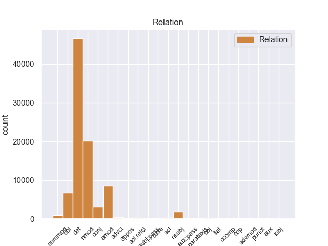
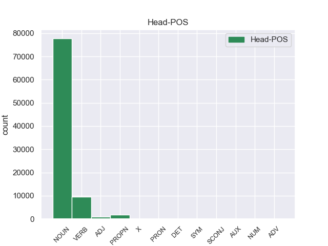
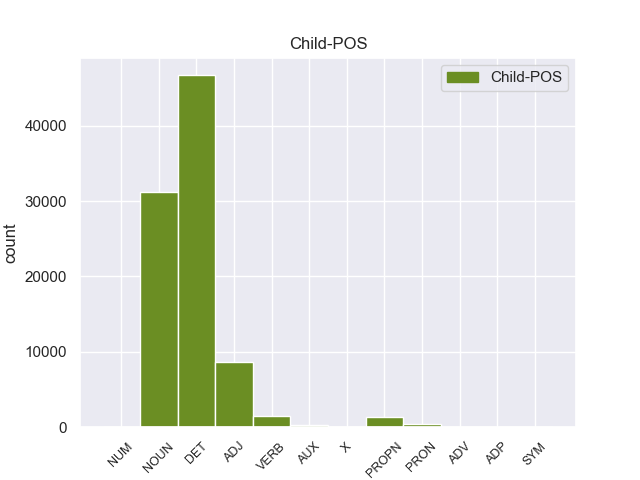

Distribution of features within this leaf



Agreement Rules sorted by frequency.
- When the dependent token is the determiner(det) of the head token, and the dependent token is DET.
1 En _ _ _ _ 0 _ _ _
2 1991 _ _ _ _ 0 _ _ _
3 , _ _ _ _ 0 _ _ _
4 como _ _ _ _ 0 _ _ _
5 ya _ _ _ _ 0 _ _ _
6 está _ _ _ _ 0 _ _ _
7 indicado _ _ _ _ 0 _ _ _
8 en _ _ _ _ 0 _ _ _
9 el _ _ _ _ 0 _ _ _
10 párrafo _ _ _ _ 0 _ _ _
11 anterior _ _ _ _ 0 _ _ _
12 , _ _ _ _ 0 _ _ _
13 se _ _ _ _ 0 _ _ _
14 creó _ _ _ _ 0 _ _ _
15 un _ _ _ _ 0 _ _ _
16 equipo _ _ _ _ 0 _ _ _
17 ad _ _ _ _ 0 _ _ _
18 hoc _ _ _ _ 0 _ _ _
19 para _ _ _ _ 0 _ _ _
20 averiguar _ _ _ _ 0 _ _ _
21 como _ _ _ _ 0 _ _ _
22 se _ _ _ _ 0 _ _ _
23 podía _ _ _ _ 0 _ _ _
24 desarrollar _ _ _ _ 0 _ _ _
25 el _ _ _ _ 0 _ _ _
26 Dialogo _ _ _ _ 0 _ _ _
27 Social _ _ _ _ 0 _ _ _
28 , _ _ _ _ 0 _ _ _
29 este _ _ _ _ 0 _ _ _
30 equipo _ _ _ _ 0 _ _ _
31 estaba _ _ _ _ 0 _ _ _
32 formado _ _ _ _ 0 _ _ _
33 por _ _ _ _ 0 _ _ _
34 representantes _ _ _ _ 0 _ _ _
35 de _ _ _ _ 0 _ _ _
36 todas _ _ _ _ 0 _ _ _
37 las el DET _ Definite=Def|Gender=Fem|Number=Plur|PronType=Art 38 det _ _
38 organizaciones organizacione NOUN _ Gender=Fem|Number=Sing 0 _ _ _
39 relacionadas _ _ _ _ 0 _ _ _
40 con _ _ _ _ 0 _ _ _
41 CES _ _ _ _ 0 _ _ _
42 , _ _ _ _ 0 _ _ _
43 UNICE _ _ _ _ 0 _ _ _
44 y _ _ _ _ 0 _ _ _
45 CEEP _ _ _ _ 0 _ _ _
46 ; _ _ _ _ 0 _ _ _
1 Esta _ _ _ _ 0 _ _ _
2 teoría _ _ _ _ 0 _ _ _
3 se _ _ _ _ 0 _ _ _
4 avenía _ _ _ _ 0 _ _ _
5 bien _ _ _ _ 0 _ _ _
6 con _ _ _ _ 0 _ _ _
7 la _ _ _ _ 0 _ _ _
8 creencia _ _ _ _ 0 _ _ _
9 de _ _ _ _ 0 _ _ _
10 el _ _ _ _ 0 _ _ _
11 Romanticismo _ _ _ _ 0 _ _ _
12 en _ _ _ _ 0 _ _ _
13 un _ _ _ _ 0 _ _ _
14 volkgeist _ _ _ _ 0 _ _ _
15 , _ _ _ _ 0 _ _ _
16 " _ _ _ _ 0 _ _ _
17 genio _ _ _ _ 0 _ _ _
18 o _ _ _ _ 0 _ _ _
19 espíritu espíritu NOUN _ Gender=Masc|Number=Sing 0 _ _ _
20 de _ _ _ _ 0 _ _ _
21 el _ _ _ _ 0 _ _ _
22 pueblo pueblo NOUN _ Gender=Masc|Number=Sing 19 nmod _ _
23 " _ _ _ _ 0 _ _ _
24 , _ _ _ _ 0 _ _ _
25 autor _ _ _ _ 0 _ _ _
26 colectivo _ _ _ _ 0 _ _ _
27 y _ _ _ _ 0 _ _ _
28 anónimo _ _ _ _ 0 _ _ _
29 de _ _ _ _ 0 _ _ _
30 una _ _ _ _ 0 _ _ _
31 poesía _ _ _ _ 0 _ _ _
32 nacional _ _ _ _ 0 _ _ _
33 . _ _ _ _ 0 _ _ _
1 En _ _ _ _ 0 _ _ _
2 1991 _ _ _ _ 0 _ _ _
3 , _ _ _ _ 0 _ _ _
4 como _ _ _ _ 0 _ _ _
5 ya _ _ _ _ 0 _ _ _
6 está _ _ _ _ 0 _ _ _
7 indicado _ _ _ _ 0 _ _ _
8 en _ _ _ _ 0 _ _ _
9 el _ _ _ _ 0 _ _ _
10 párrafo _ _ _ _ 0 _ _ _
11 anterior _ _ _ _ 0 _ _ _
12 , _ _ _ _ 0 _ _ _
13 se _ _ _ _ 0 _ _ _
14 creó _ _ _ _ 0 _ _ _
15 un _ _ _ _ 0 _ _ _
16 equipo equipo NOUN _ Gender=Masc|Number=Sing 0 _ _ _
17 ad _ _ _ _ 0 _ _ _
18 hoc hoc ADJ _ Gender=Masc|Number=Sing 16 amod _ _
19 para _ _ _ _ 0 _ _ _
20 averiguar _ _ _ _ 0 _ _ _
21 como _ _ _ _ 0 _ _ _
22 se _ _ _ _ 0 _ _ _
23 podía _ _ _ _ 0 _ _ _
24 desarrollar _ _ _ _ 0 _ _ _
25 el _ _ _ _ 0 _ _ _
26 Dialogo _ _ _ _ 0 _ _ _
27 Social _ _ _ _ 0 _ _ _
28 , _ _ _ _ 0 _ _ _
29 este _ _ _ _ 0 _ _ _
30 equipo _ _ _ _ 0 _ _ _
31 estaba _ _ _ _ 0 _ _ _
32 formado _ _ _ _ 0 _ _ _
33 por _ _ _ _ 0 _ _ _
34 representantes _ _ _ _ 0 _ _ _
35 de _ _ _ _ 0 _ _ _
36 todas _ _ _ _ 0 _ _ _
37 las _ _ _ _ 0 _ _ _
38 organizaciones _ _ _ _ 0 _ _ _
39 relacionadas _ _ _ _ 0 _ _ _
40 con _ _ _ _ 0 _ _ _
41 CES _ _ _ _ 0 _ _ _
42 , _ _ _ _ 0 _ _ _
43 UNICE _ _ _ _ 0 _ _ _
44 y _ _ _ _ 0 _ _ _
45 CEEP _ _ _ _ 0 _ _ _
46 ; _ _ _ _ 0 _ _ _
1 En _ _ _ _ 0 _ _ _
2 1991 _ _ _ _ 0 _ _ _
3 , _ _ _ _ 0 _ _ _
4 como _ _ _ _ 0 _ _ _
5 ya _ _ _ _ 0 _ _ _
6 está _ _ _ _ 0 _ _ _
7 indicado _ _ _ _ 0 _ _ _
8 en _ _ _ _ 0 _ _ _
9 el _ _ _ _ 0 _ _ _
10 párrafo _ _ _ _ 0 _ _ _
11 anterior _ _ _ _ 0 _ _ _
12 , _ _ _ _ 0 _ _ _
13 se _ _ _ _ 0 _ _ _
14 creó _ _ _ _ 0 _ _ _
15 un _ _ _ _ 0 _ _ _
16 equipo _ _ _ _ 0 _ _ _
17 ad _ _ _ _ 0 _ _ _
18 hoc _ _ _ _ 0 _ _ _
19 para _ _ _ _ 0 _ _ _
20 averiguar _ _ _ _ 0 _ _ _
21 como _ _ _ _ 0 _ _ _
22 se _ _ _ _ 0 _ _ _
23 podía _ _ _ _ 0 _ _ _
24 desarrollar _ _ _ _ 0 _ _ _
25 el _ _ _ _ 0 _ _ _
26 Dialogo _ _ _ _ 0 _ _ _
27 Social _ _ _ _ 0 _ _ _
28 , _ _ _ _ 0 _ _ _
29 este _ _ _ _ 0 _ _ _
30 equipo _ _ _ _ 0 _ _ _
31 estaba _ _ _ _ 0 _ _ _
32 formado formado VERB _ Gender=Masc|Number=Sing|Tense=Past|VerbForm=Part 0 _ _ _
33 por _ _ _ _ 0 _ _ _
34 representantes representante NOUN _ Gender=Masc|Number=Plur 32 obl _ _
35 de _ _ _ _ 0 _ _ _
36 todas _ _ _ _ 0 _ _ _
37 las _ _ _ _ 0 _ _ _
38 organizaciones _ _ _ _ 0 _ _ _
39 relacionadas _ _ _ _ 0 _ _ _
40 con _ _ _ _ 0 _ _ _
41 CES _ _ _ _ 0 _ _ _
42 , _ _ _ _ 0 _ _ _
43 UNICE _ _ _ _ 0 _ _ _
44 y _ _ _ _ 0 _ _ _
45 CEEP _ _ _ _ 0 _ _ _
46 ; _ _ _ _ 0 _ _ _
1 Esta _ _ _ _ 0 _ _ _
2 teoría _ _ _ _ 0 _ _ _
3 se _ _ _ _ 0 _ _ _
4 avenía _ _ _ _ 0 _ _ _
5 bien _ _ _ _ 0 _ _ _
6 con _ _ _ _ 0 _ _ _
7 la _ _ _ _ 0 _ _ _
8 creencia _ _ _ _ 0 _ _ _
9 de _ _ _ _ 0 _ _ _
10 el _ _ _ _ 0 _ _ _
11 Romanticismo _ _ _ _ 0 _ _ _
12 en _ _ _ _ 0 _ _ _
13 un _ _ _ _ 0 _ _ _
14 volkgeist _ _ _ _ 0 _ _ _
15 , _ _ _ _ 0 _ _ _
16 " _ _ _ _ 0 _ _ _
17 genio genio NOUN _ Gender=Masc|Number=Sing 0 _ _ _
18 o _ _ _ _ 0 _ _ _
19 espíritu espíritu NOUN _ Gender=Masc|Number=Sing 17 conj _ _
20 de _ _ _ _ 0 _ _ _
21 el _ _ _ _ 0 _ _ _
22 pueblo _ _ _ _ 0 _ _ _
23 " _ _ _ _ 0 _ _ _
24 , _ _ _ _ 0 _ _ _
25 autor _ _ _ _ 0 _ _ _
26 colectivo _ _ _ _ 0 _ _ _
27 y _ _ _ _ 0 _ _ _
28 anónimo _ _ _ _ 0 _ _ _
29 de _ _ _ _ 0 _ _ _
30 una _ _ _ _ 0 _ _ _
31 poesía _ _ _ _ 0 _ _ _
32 nacional _ _ _ _ 0 _ _ _
33 . _ _ _ _ 0 _ _ _
1 En _ _ _ _ 0 _ _ _
2 1991 _ _ _ _ 0 _ _ _
3 , _ _ _ _ 0 _ _ _
4 como _ _ _ _ 0 _ _ _
5 ya _ _ _ _ 0 _ _ _
6 está _ _ _ _ 0 _ _ _
7 indicado _ _ _ _ 0 _ _ _
8 en _ _ _ _ 0 _ _ _
9 el _ _ _ _ 0 _ _ _
10 párrafo _ _ _ _ 0 _ _ _
11 anterior _ _ _ _ 0 _ _ _
12 , _ _ _ _ 0 _ _ _
13 se _ _ _ _ 0 _ _ _
14 creó _ _ _ _ 0 _ _ _
15 un _ _ _ _ 0 _ _ _
16 equipo _ _ _ _ 0 _ _ _
17 ad _ _ _ _ 0 _ _ _
18 hoc _ _ _ _ 0 _ _ _
19 para _ _ _ _ 0 _ _ _
20 averiguar _ _ _ _ 0 _ _ _
21 como _ _ _ _ 0 _ _ _
22 se _ _ _ _ 0 _ _ _
23 podía _ _ _ _ 0 _ _ _
24 desarrollar _ _ _ _ 0 _ _ _
25 el _ _ _ _ 0 _ _ _
26 Dialogo _ _ _ _ 0 _ _ _
27 Social _ _ _ _ 0 _ _ _
28 , _ _ _ _ 0 _ _ _
29 este _ _ _ _ 0 _ _ _
30 equipo equipo NOUN _ Gender=Masc|Number=Sing 32 nsubj _ _
31 estaba _ _ _ _ 0 _ _ _
32 formado formado VERB _ Gender=Masc|Number=Sing|Tense=Past|VerbForm=Part 0 _ _ _
33 por _ _ _ _ 0 _ _ _
34 representantes _ _ _ _ 0 _ _ _
35 de _ _ _ _ 0 _ _ _
36 todas _ _ _ _ 0 _ _ _
37 las _ _ _ _ 0 _ _ _
38 organizaciones _ _ _ _ 0 _ _ _
39 relacionadas _ _ _ _ 0 _ _ _
40 con _ _ _ _ 0 _ _ _
41 CES _ _ _ _ 0 _ _ _
42 , _ _ _ _ 0 _ _ _
43 UNICE _ _ _ _ 0 _ _ _
44 y _ _ _ _ 0 _ _ _
45 CEEP _ _ _ _ 0 _ _ _
46 ; _ _ _ _ 0 _ _ _
1 De _ _ _ _ 0 _ _ _
2 la _ _ _ _ 0 _ _ _
3 Vega _ _ _ _ 0 _ _ _
4 ha _ _ _ _ 0 _ _ _
5 pedido _ _ _ _ 0 _ _ _
6 respetar _ _ _ _ 0 _ _ _
7 los _ _ _ _ 0 _ _ _
8 tiempos _ _ _ _ 0 _ _ _
9 de _ _ _ _ 0 _ _ _
10 los _ _ _ _ 0 _ _ _
11 procesos _ _ _ _ 0 _ _ _
12 y _ _ _ _ 0 _ _ _
13 de _ _ _ _ 0 _ _ _
14 la _ _ _ _ 0 _ _ _
15 misma _ _ _ _ 0 _ _ _
16 manera _ _ _ _ 0 _ _ _
17 que _ _ _ _ 0 _ _ _
18 no _ _ _ _ 0 _ _ _
19 ha _ _ _ _ 0 _ _ _
20 querido _ _ _ _ 0 _ _ _
21 entrar _ _ _ _ 0 _ _ _
22 en _ _ _ _ 0 _ _ _
23 la _ _ _ _ 0 _ _ _
24 salida _ _ _ _ 0 _ _ _
25 de _ _ _ _ 0 _ _ _
26 Corbacho _ _ _ _ 0 _ _ _
27 , _ _ _ _ 0 _ _ _
28 tampoco _ _ _ _ 0 _ _ _
29 lo _ _ _ _ 0 _ _ _
30 ha _ _ _ _ 0 _ _ _
31 hecho _ _ _ _ 0 _ _ _
32 la _ _ _ _ 0 _ _ _
33 posible posible NOUN _ Gender=Fem|Number=Sing 34 amod _ _
34 salida salida NOUN _ Gender=Fem|Number=Sing 0 _ _ _
35 de _ _ _ _ 0 _ _ _
36 Trinidad _ _ _ _ 0 _ _ _
37 Jiménez _ _ _ _ 0 _ _ _
38 , _ _ _ _ 0 _ _ _
39 que _ _ _ _ 0 _ _ _
40 le _ _ _ _ 0 _ _ _
41 acompañaba _ _ _ _ 0 _ _ _
42 en _ _ _ _ 0 _ _ _
43 la _ _ _ _ 0 _ _ _
44 sala _ _ _ _ 0 _ _ _
45 de _ _ _ _ 0 _ _ _
46 prensa _ _ _ _ 0 _ _ _
47 . _ _ _ _ 0 _ _ _
1 Ahora _ _ _ _ 0 _ _ _
2 se _ _ _ _ 0 _ _ _
3 aunan _ _ _ _ 0 _ _ _
4 cocina _ _ _ _ 0 _ _ _
5 y _ _ _ _ 0 _ _ _
6 entorno _ _ _ _ 0 _ _ _
7 , _ _ _ _ 0 _ _ _
8 me _ _ _ _ 0 _ _ _
9 encanto _ _ _ _ 0 _ _ _
10 la _ _ _ _ 0 _ _ _
11 bodega _ _ _ _ 0 _ _ _
12 , _ _ _ _ 0 _ _ _
13 las _ _ _ _ 0 _ _ _
14 sillas _ _ _ _ 0 _ _ _
15 son _ _ _ _ 0 _ _ _
16 comodisimas _ _ _ _ 0 _ _ _
17 , _ _ _ _ 0 _ _ _
18 la _ _ _ _ 0 _ _ _
19 iluminacion _ _ _ _ 0 _ _ _
20 es _ _ _ _ 0 _ _ _
21 excepcional _ _ _ _ 0 _ _ _
22 , _ _ _ _ 0 _ _ _
23 alcanzas _ _ _ _ 0 _ _ _
24 un _ _ _ _ 0 _ _ _
25 grado _ _ _ _ 0 _ _ _
26 de _ _ _ _ 0 _ _ _
27 satisfaccion _ _ _ _ 0 _ _ _
28 que _ _ _ _ 0 _ _ _
29 no _ _ _ _ 0 _ _ _
30 se _ _ _ _ 0 _ _ _
31 puede _ _ _ _ 0 _ _ _
32 describir _ _ _ _ 0 _ _ _
33 , _ _ _ _ 0 _ _ _
34 hay _ _ _ _ 0 _ _ _
35 que _ _ _ _ 0 _ _ _
36 probar _ _ _ _ 0 _ _ _
37 lo _ _ _ _ 0 _ _ _
38 , _ _ _ _ 0 _ _ _
39 es _ _ _ _ 0 _ _ _
40 la _ _ _ _ 0 _ _ _
41 primera primera ADJ _ Gender=Fem|Number=Sing 42 nummod _ _
42 vez vez NOUN _ Gender=Fem|Number=Sing 0 _ _ _
43 en _ _ _ _ 0 _ _ _
44 mi _ _ _ _ 0 _ _ _
45 vda _ _ _ _ 0 _ _ _
46 que _ _ _ _ 0 _ _ _
47 una _ _ _ _ 0 _ _ _
48 cocina _ _ _ _ 0 _ _ _
49 me _ _ _ _ 0 _ _ _
50 emociona _ _ _ _ 0 _ _ _
51 hasta _ _ _ _ 0 _ _ _
52 ese _ _ _ _ 0 _ _ _
53 punto _ _ _ _ 0 _ _ _
54 . _ _ _ _ 0 _ _ _
1 El _ _ _ _ 0 _ _ _
2 Football football PROPN _ Gender=Masc|Number=Sing 8 nmod _ _
3 - _ _ _ _ 0 _ _ _
4 Club _ _ _ _ 0 _ _ _
5 Auch _ _ _ _ 0 _ _ _
6 es _ _ _ _ 0 _ _ _
7 un _ _ _ _ 0 _ _ _
8 equipo equipo NOUN _ Gender=Masc|Number=Sing 0 _ _ _
9 profesional _ _ _ _ 0 _ _ _
10 de _ _ _ _ 0 _ _ _
11 rugby _ _ _ _ 0 _ _ _
12 de _ _ _ _ 0 _ _ _
13 Francia _ _ _ _ 0 _ _ _
14 de _ _ _ _ 0 _ _ _
15 la _ _ _ _ 0 _ _ _
16 ciudad _ _ _ _ 0 _ _ _
17 de _ _ _ _ 0 _ _ _
18 Auch _ _ _ _ 0 _ _ _
19 ( _ _ _ _ 0 _ _ _
20 departamento _ _ _ _ 0 _ _ _
21 de _ _ _ _ 0 _ _ _
22 el _ _ _ _ 0 _ _ _
23 Gers _ _ _ _ 0 _ _ _
24 ) _ _ _ _ 0 _ _ _
25 . _ _ _ _ 0 _ _ _
1 De _ _ _ _ 0 _ _ _
2 la _ _ _ _ 0 _ _ _
3 Vega _ _ _ _ 0 _ _ _
4 ha _ _ _ _ 0 _ _ _
5 pedido _ _ _ _ 0 _ _ _
6 respetar _ _ _ _ 0 _ _ _
7 los _ _ _ _ 0 _ _ _
8 tiempos _ _ _ _ 0 _ _ _
9 de _ _ _ _ 0 _ _ _
10 los _ _ _ _ 0 _ _ _
11 procesos _ _ _ _ 0 _ _ _
12 y _ _ _ _ 0 _ _ _
13 de _ _ _ _ 0 _ _ _
14 la _ _ _ _ 0 _ _ _
15 misma _ _ _ _ 0 _ _ _
16 manera _ _ _ _ 0 _ _ _
17 que _ _ _ _ 0 _ _ _
18 no _ _ _ _ 0 _ _ _
19 ha _ _ _ _ 0 _ _ _
20 querido querido VERB _ Gender=Masc|Number=Sing|Tense=Past|VerbForm=Part 0 _ _ _
21 entrar _ _ _ _ 0 _ _ _
22 en _ _ _ _ 0 _ _ _
23 la _ _ _ _ 0 _ _ _
24 salida _ _ _ _ 0 _ _ _
25 de _ _ _ _ 0 _ _ _
26 Corbacho _ _ _ _ 0 _ _ _
27 , _ _ _ _ 0 _ _ _
28 tampoco _ _ _ _ 0 _ _ _
29 lo _ _ _ _ 0 _ _ _
30 ha _ _ _ _ 0 _ _ _
31 hecho hecho VERB _ Gender=Masc|Number=Sing|Tense=Past|VerbForm=Part 20 advcl _ _
32 la _ _ _ _ 0 _ _ _
33 posible _ _ _ _ 0 _ _ _
34 salida _ _ _ _ 0 _ _ _
35 de _ _ _ _ 0 _ _ _
36 Trinidad _ _ _ _ 0 _ _ _
37 Jiménez _ _ _ _ 0 _ _ _
38 , _ _ _ _ 0 _ _ _
39 que _ _ _ _ 0 _ _ _
40 le _ _ _ _ 0 _ _ _
41 acompañaba _ _ _ _ 0 _ _ _
42 en _ _ _ _ 0 _ _ _
43 la _ _ _ _ 0 _ _ _
44 sala _ _ _ _ 0 _ _ _
45 de _ _ _ _ 0 _ _ _
46 prensa _ _ _ _ 0 _ _ _
47 . _ _ _ _ 0 _ _ _
1 Jazmin _ _ _ _ 0 _ _ _
2 es _ _ _ _ 0 _ _ _
3 todo _ _ _ _ 0 _ _ _
4 lo _ _ _ _ 0 _ _ _
5 contrario _ _ _ _ 0 _ _ _
6 , _ _ _ _ 0 _ _ _
7 es _ _ _ _ 0 _ _ _
8 tímida tímida ADJ _ Gender=Fem|Number=Sing 0 _ _ _
9 y _ _ _ _ 0 _ _ _
10 callada callada ADJ _ Gender=Fem|Number=Sing 8 conj _ _
11 , _ _ _ _ 0 _ _ _
12 pero _ _ _ _ 0 _ _ _
13 siempre _ _ _ _ 0 _ _ _
14 es _ _ _ _ 0 _ _ _
15 arrastrada _ _ _ _ 0 _ _ _
16 por _ _ _ _ 0 _ _ _
17 las _ _ _ _ 0 _ _ _
18 locuras _ _ _ _ 0 _ _ _
19 y _ _ _ _ 0 _ _ _
20 travesuras _ _ _ _ 0 _ _ _
21 que _ _ _ _ 0 _ _ _
22 inventa _ _ _ _ 0 _ _ _
23 Alma _ _ _ _ 0 _ _ _
24 . _ _ _ _ 0 _ _ _
1 Recientemente _ _ _ _ 0 _ _ _
2 se _ _ _ _ 0 _ _ _
3 ha _ _ _ _ 0 _ _ _
4 desestimado desestimado VERB _ Gender=Masc|Number=Sing|Tense=Past|VerbForm=Part 0 _ _ _
5 el _ _ _ _ 0 _ _ _
6 vínculo _ _ _ _ 0 _ _ _
7 de _ _ _ _ 0 _ _ _
8 la _ _ _ _ 0 _ _ _
9 sustancia _ _ _ _ 0 _ _ _
10 con _ _ _ _ 0 _ _ _
11 una _ _ _ _ 0 _ _ _
12 acción _ _ _ _ 0 _ _ _
13 supresora _ _ _ _ 0 _ _ _
14 sobre _ _ _ _ 0 _ _ _
15 la _ _ _ _ 0 _ _ _
16 secreción _ _ _ _ 0 _ _ _
17 de _ _ _ _ 0 _ _ _
18 hormona _ _ _ _ 0 _ _ _
19 de _ _ _ _ 0 _ _ _
20 crecimiento _ _ _ _ 0 _ _ _
21 y _ _ _ _ 0 _ _ _
22 de _ _ _ _ 0 _ _ _
23 prolactina _ _ _ _ 0 _ _ _
24 , _ _ _ _ 0 _ _ _
25 tal _ _ _ _ 0 _ _ _
26 como _ _ _ _ 0 _ _ _
27 había _ _ _ _ 0 _ _ _
28 sido _ _ _ _ 0 _ _ _
29 postulado postulado VERB _ Gender=Masc|Number=Sing|Tense=Past|VerbForm=Part 4 conj _ _
30 . _ _ _ _ 0 _ _ _
1 A _ _ _ _ 0 _ _ _
2 continuación _ _ _ _ 0 _ _ _
3 , _ _ _ _ 0 _ _ _
4 sonarán _ _ _ _ 0 _ _ _
5 los _ _ _ _ 0 _ _ _
6 ritmos ritmo NOUN _ Gender=Masc|Number=Sing 0 _ _ _
7 más _ _ _ _ 0 _ _ _
8 intensos _ _ _ _ 0 _ _ _
9 de _ _ _ _ 0 _ _ _
10 los _ _ _ _ 0 _ _ _
11 llanos _ _ _ _ 0 _ _ _
12 interpretados interpretado VERB _ Gender=Masc|Number=Plur|VerbForm=Part 6 acl _ _
13 por _ _ _ _ 0 _ _ _
14 una _ _ _ _ 0 _ _ _
15 agrupación _ _ _ _ 0 _ _ _
16 que _ _ _ _ 0 _ _ _
17 romperá _ _ _ _ 0 _ _ _
18 esquemas _ _ _ _ 0 _ _ _
19 : _ _ _ _ 0 _ _ _
20 el _ _ _ _ 0 _ _ _
21 Ensamble _ _ _ _ 0 _ _ _
22 de _ _ _ _ 0 _ _ _
23 Arpas _ _ _ _ 0 _ _ _
24 de _ _ _ _ 0 _ _ _
25 la _ _ _ _ 0 _ _ _
26 Orquesta _ _ _ _ 0 _ _ _
27 de _ _ _ _ 0 _ _ _
28 Música _ _ _ _ 0 _ _ _
29 Popular _ _ _ _ 0 _ _ _
30 de _ _ _ _ 0 _ _ _
31 el _ _ _ _ 0 _ _ _
32 Estado _ _ _ _ 0 _ _ _
33 Guárico _ _ _ _ 0 _ _ _
34 , _ _ _ _ 0 _ _ _
35 integrado _ _ _ _ 0 _ _ _
36 por _ _ _ _ 0 _ _ _
37 14 _ _ _ _ 0 _ _ _
38 ejecutantes _ _ _ _ 0 _ _ _
39 , _ _ _ _ 0 _ _ _
40 todos _ _ _ _ 0 _ _ _
41 formados _ _ _ _ 0 _ _ _
42 por _ _ _ _ 0 _ _ _
43 El _ _ _ _ 0 _ _ _
44 Sistema _ _ _ _ 0 _ _ _
45 , _ _ _ _ 0 _ _ _
46 siendo _ _ _ _ 0 _ _ _
47 algunos _ _ _ _ 0 _ _ _
48 de _ _ _ _ 0 _ _ _
49 ellos _ _ _ _ 0 _ _ _
50 ganadores _ _ _ _ 0 _ _ _
51 de _ _ _ _ 0 _ _ _
52 el _ _ _ _ 0 _ _ _
53 reconocido _ _ _ _ 0 _ _ _
54 Festival _ _ _ _ 0 _ _ _
55 Internacional _ _ _ _ 0 _ _ _
56 de _ _ _ _ 0 _ _ _
57 Arpas _ _ _ _ 0 _ _ _
58 Infantil _ _ _ _ 0 _ _ _
59 y _ _ _ _ 0 _ _ _
60 Adultos _ _ _ _ 0 _ _ _
61 de _ _ _ _ 0 _ _ _
62 Villavicencio _ _ _ _ 0 _ _ _
63 , _ _ _ _ 0 _ _ _
64 Colombia _ _ _ _ 0 _ _ _
65 . _ _ _ _ 0 _ _ _
1 Igualmente _ _ _ _ 0 _ _ _
2 , _ _ _ _ 0 _ _ _
3 la _ _ _ _ 0 _ _ _
4 presencia _ _ _ _ 0 _ _ _
5 de _ _ _ _ 0 _ _ _
6 Ledesma _ _ _ _ 0 _ _ _
7 está _ _ _ _ 0 _ _ _
8 supeditada _ _ _ _ 0 _ _ _
9 a _ _ _ _ 0 _ _ _
10 la _ _ _ _ 0 _ _ _
11 actuación _ _ _ _ 0 _ _ _
12 de _ _ _ _ 0 _ _ _
13 el _ _ _ _ 0 _ _ _
14 seleccionado _ _ _ _ 0 _ _ _
15 argentino _ _ _ _ 0 _ _ _
16 sub _ _ _ _ 0 _ _ _
17 20 _ _ _ _ 0 _ _ _
18 en _ _ _ _ 0 _ _ _
19 los _ _ _ _ 0 _ _ _
20 Panamericanos _ _ _ _ 0 _ _ _
21 , _ _ _ _ 0 _ _ _
22 ya _ _ _ _ 0 _ _ _
23 que _ _ _ _ 0 _ _ _
24 Cirigliano _ _ _ _ 0 _ _ _
25 sólo _ _ _ _ 0 _ _ _
26 estaría _ _ _ _ 0 _ _ _
27 en _ _ _ _ 0 _ _ _
28 condiciones _ _ _ _ 0 _ _ _
29 de _ _ _ _ 0 _ _ _
30 jugar _ _ _ _ 0 _ _ _
31 ante _ _ _ _ 0 _ _ _
32 Aldosivi _ _ _ _ 0 _ _ _
33 en _ _ _ _ 0 _ _ _
34 caso _ _ _ _ 0 _ _ _
35 de _ _ _ _ 0 _ _ _
36 que _ _ _ _ 0 _ _ _
37 el _ _ _ _ 0 _ _ _
38 elenco _ _ _ _ 0 _ _ _
39 " _ _ _ _ 0 _ _ _
40 albiceleste _ _ _ _ 0 _ _ _
41 " _ _ _ _ 0 _ _ _
42 no _ _ _ _ 0 _ _ _
43 supere _ _ _ _ 0 _ _ _
44 la _ _ _ _ 0 _ _ _
45 primera primera NOUN _ Gender=Fem|Number=Sing 46 nummod _ _
46 ronda ronda NOUN _ Gender=Fem|Number=Sing 0 _ _ _
47 , _ _ _ _ 0 _ _ _
48 algo _ _ _ _ 0 _ _ _
49 poco _ _ _ _ 0 _ _ _
50 probable _ _ _ _ 0 _ _ _
51 . _ _ _ _ 0 _ _ _
1 Ahora _ _ _ _ 0 _ _ _
2 se _ _ _ _ 0 _ _ _
3 aunan _ _ _ _ 0 _ _ _
4 cocina _ _ _ _ 0 _ _ _
5 y _ _ _ _ 0 _ _ _
6 entorno _ _ _ _ 0 _ _ _
7 , _ _ _ _ 0 _ _ _
8 me _ _ _ _ 0 _ _ _
9 encanto _ _ _ _ 0 _ _ _
10 la _ _ _ _ 0 _ _ _
11 bodega _ _ _ _ 0 _ _ _
12 , _ _ _ _ 0 _ _ _
13 las _ _ _ _ 0 _ _ _
14 sillas _ _ _ _ 0 _ _ _
15 son _ _ _ _ 0 _ _ _
16 comodisimas _ _ _ _ 0 _ _ _
17 , _ _ _ _ 0 _ _ _
18 la _ _ _ _ 0 _ _ _
19 iluminacion _ _ _ _ 0 _ _ _
20 es _ _ _ _ 0 _ _ _
21 excepcional _ _ _ _ 0 _ _ _
22 , _ _ _ _ 0 _ _ _
23 alcanzas _ _ _ _ 0 _ _ _
24 un _ _ _ _ 0 _ _ _
25 grado grado NOUN _ Gender=Masc|Number=Sing 0 _ _ _
26 de _ _ _ _ 0 _ _ _
27 satisfaccion _ _ _ _ 0 _ _ _
28 que _ _ _ _ 0 _ _ _
29 no _ _ _ _ 0 _ _ _
30 se _ _ _ _ 0 _ _ _
31 puede _ _ _ _ 0 _ _ _
32 describir describir VERB _ Gender=Masc|Number=Sing|VerbForm=Part 25 acl:relcl _ _
33 , _ _ _ _ 0 _ _ _
34 hay _ _ _ _ 0 _ _ _
35 que _ _ _ _ 0 _ _ _
36 probar _ _ _ _ 0 _ _ _
37 lo _ _ _ _ 0 _ _ _
38 , _ _ _ _ 0 _ _ _
39 es _ _ _ _ 0 _ _ _
40 la _ _ _ _ 0 _ _ _
41 primera _ _ _ _ 0 _ _ _
42 vez _ _ _ _ 0 _ _ _
43 en _ _ _ _ 0 _ _ _
44 mi _ _ _ _ 0 _ _ _
45 vda _ _ _ _ 0 _ _ _
46 que _ _ _ _ 0 _ _ _
47 una _ _ _ _ 0 _ _ _
48 cocina _ _ _ _ 0 _ _ _
49 me _ _ _ _ 0 _ _ _
50 emociona _ _ _ _ 0 _ _ _
51 hasta _ _ _ _ 0 _ _ _
52 ese _ _ _ _ 0 _ _ _
53 punto _ _ _ _ 0 _ _ _
54 . _ _ _ _ 0 _ _ _
1 En _ _ _ _ 0 _ _ _
2 estos _ _ _ _ 0 _ _ _
3 trabajos _ _ _ _ 0 _ _ _
4 se _ _ _ _ 0 _ _ _
5 pusieron _ _ _ _ 0 _ _ _
6 a _ _ _ _ 0 _ _ _
7 el _ _ _ _ 0 _ _ _
8 descubierto _ _ _ _ 0 _ _ _
9 25 _ _ _ _ 0 _ _ _
10 vanos _ _ _ _ 0 _ _ _
11 correspondientes _ _ _ _ 0 _ _ _
12 a _ _ _ _ 0 _ _ _
13 ventanas _ _ _ _ 0 _ _ _
14 saeteras _ _ _ _ 0 _ _ _
15 que _ _ _ _ 0 _ _ _
16 habían _ _ _ _ 0 _ _ _
17 sido ser AUX _ Gender=Masc|Number=Sing|Tense=Past|VerbForm=Part 18 aux:pass _ _
18 tapiadas tapiada VERB _ Gender=Masc|Number=Sing|Tense=Past|VerbForm=Part 0 _ _ _
19 en _ _ _ _ 0 _ _ _
20 los _ _ _ _ 0 _ _ _
21 siglos _ _ _ _ 0 _ _ _
22 anteriores _ _ _ _ 0 _ _ _
23 . _ _ _ _ 0 _ _ _
1 No _ _ _ _ 0 _ _ _
2 es _ _ _ _ 0 _ _ _
3 de _ _ _ _ 0 _ _ _
4 extrañar _ _ _ _ 0 _ _ _
5 entonces _ _ _ _ 0 _ _ _
6 que _ _ _ _ 0 _ _ _
7 el _ _ _ _ 0 _ _ _
8 Marqués _ _ _ _ 0 _ _ _
9 de _ _ _ _ 0 _ _ _
10 Alegrete _ _ _ _ 0 _ _ _
11 , _ _ _ _ 0 _ _ _
12 jefe _ _ _ _ 0 _ _ _
13 militar _ _ _ _ 0 _ _ _
14 riograndense _ _ _ _ 0 _ _ _
15 , _ _ _ _ 0 _ _ _
16 haya _ _ _ _ 0 _ _ _
17 realizado realizado VERB _ Gender=Masc|Number=Sing|Tense=Past|VerbForm=Part 0 _ _ _
18 máximos _ _ _ _ 0 _ _ _
19 esfuerzos esfuerzo NOUN _ Gender=Masc|Number=Plur 17 obj _ _
20 en _ _ _ _ 0 _ _ _
21 pro _ _ _ _ 0 _ _ _
22 de _ _ _ _ 0 _ _ _
23 la _ _ _ _ 0 _ _ _
24 empresa _ _ _ _ 0 _ _ _
25 de _ _ _ _ 0 _ _ _
26 conquista _ _ _ _ 0 _ _ _
27 , _ _ _ _ 0 _ _ _
28 y _ _ _ _ 0 _ _ _
29 que _ _ _ _ 0 _ _ _
30 los _ _ _ _ 0 _ _ _
31 que _ _ _ _ 0 _ _ _
32 serían _ _ _ _ 0 _ _ _
33 más _ _ _ _ 0 _ _ _
34 tarde _ _ _ _ 0 _ _ _
35 destacados _ _ _ _ 0 _ _ _
36 caudillos _ _ _ _ 0 _ _ _
37 de _ _ _ _ 0 _ _ _
38 el _ _ _ _ 0 _ _ _
39 separatismo _ _ _ _ 0 _ _ _
40 riograndense _ _ _ _ 0 _ _ _
41 , _ _ _ _ 0 _ _ _
42 Bento _ _ _ _ 0 _ _ _
43 Gonçalves _ _ _ _ 0 _ _ _
44 da _ _ _ _ 0 _ _ _
45 Silva _ _ _ _ 0 _ _ _
46 y _ _ _ _ 0 _ _ _
47 Bentos _ _ _ _ 0 _ _ _
48 Manuel _ _ _ _ 0 _ _ _
49 Ribeiro _ _ _ _ 0 _ _ _
50 , _ _ _ _ 0 _ _ _
51 hayan _ _ _ _ 0 _ _ _
52 jugado _ _ _ _ 0 _ _ _
53 en _ _ _ _ 0 _ _ _
54 ésta _ _ _ _ 0 _ _ _
55 un _ _ _ _ 0 _ _ _
56 papel _ _ _ _ 0 _ _ _
57 de _ _ _ _ 0 _ _ _
58 primer _ _ _ _ 0 _ _ _
59 orden _ _ _ _ 0 _ _ _
60 ( _ _ _ _ 0 _ _ _
61 que _ _ _ _ 0 _ _ _
62 , _ _ _ _ 0 _ _ _
63 los _ _ _ _ 0 _ _ _
64 vincularía _ _ _ _ 0 _ _ _
65 , _ _ _ _ 0 _ _ _
66 en _ _ _ _ 0 _ _ _
67 circunstancias _ _ _ _ 0 _ _ _
68 posteriores _ _ _ _ 0 _ _ _
69 , _ _ _ _ 0 _ _ _
70 a _ _ _ _ 0 _ _ _
71 los _ _ _ _ 0 _ _ _
72 caudillos _ _ _ _ 0 _ _ _
73 Lavalleja _ _ _ _ 0 _ _ _
74 y _ _ _ _ 0 _ _ _
75 Rivera _ _ _ _ 0 _ _ _
76 ) _ _ _ _ 0 _ _ _
77 . _ _ _ _ 0 _ _ _
1 Si _ _ _ _ 0 _ _ _
2 Rodríguez _ _ _ _ 0 _ _ _
3 Zapatero _ _ _ _ 0 _ _ _
4 fuera _ _ _ _ 0 _ _ _
5 un _ _ _ _ 0 _ _ _
6 auténtico _ _ _ _ 0 _ _ _
7 patriota _ _ _ _ 0 _ _ _
8 debería _ _ _ _ 0 _ _ _
9 liderar _ _ _ _ 0 _ _ _
10 , _ _ _ _ 0 _ _ _
11 gobernando _ _ _ _ 0 _ _ _
12 , _ _ _ _ 0 _ _ _
13 las _ _ _ _ 0 _ _ _
14 reformas _ _ _ _ 0 _ _ _
15 que _ _ _ _ 0 _ _ _
16 este _ _ _ _ 0 _ _ _
17 país _ _ _ _ 0 _ _ _
18 necesita _ _ _ _ 0 _ _ _
19 para _ _ _ _ 0 _ _ _
20 salir _ _ _ _ 0 _ _ _
21 de _ _ _ _ 0 _ _ _
22 la _ _ _ _ 0 _ _ _
23 crisis _ _ _ _ 0 _ _ _
24 , _ _ _ _ 0 _ _ _
25 por _ _ _ _ 0 _ _ _
26 muy _ _ _ _ 0 _ _ _
27 duras _ _ _ _ 0 _ _ _
28 y _ _ _ _ 0 _ _ _
29 muy _ _ _ _ 0 _ _ _
30 impopulares impopulares ADJ _ Gender=Fem|Number=Sing 0 _ _ _
31 que _ _ _ _ 0 _ _ _
32 estas esta PRON _ Definite=Def|Gender=Fem|Number=Plur|PronType=Art 30 det _ _
33 sean _ _ _ _ 0 _ _ _
34 . _ _ _ _ 0 _ _ _
1 Lanzo _ _ _ _ 0 _ _ _
2 el _ _ _ _ 0 _ _ _
3 álbum _ _ _ _ 0 _ _ _
4 " _ _ _ _ 0 _ _ _
5 22nd _ _ _ _ 0 _ _ _
6 Century _ _ _ _ 0 _ _ _
7 Lifestyle _ _ _ _ 0 _ _ _
8 " _ _ _ _ 0 _ _ _
9 que _ _ _ _ 0 _ _ _
10 obtuvo _ _ _ _ 0 _ _ _
11 bastante _ _ _ _ 0 _ _ _
12 rotación _ _ _ _ 0 _ _ _
13 radial _ _ _ _ 0 _ _ _
14 , _ _ _ _ 0 _ _ _
15 pero _ _ _ _ 0 _ _ _
16 en _ _ _ _ 0 _ _ _
17 poco poco DET _ Gender=Masc|Number=Sing 18 amod _ _
18 tiempo tiempo NOUN _ Gender=Masc|Number=Sing 0 _ _ _
19 después _ _ _ _ 0 _ _ _
20 Epique _ _ _ _ 0 _ _ _
21 muere _ _ _ _ 0 _ _ _
22 de _ _ _ _ 0 _ _ _
23 un _ _ _ _ 0 _ _ _
24 fatal _ _ _ _ 0 _ _ _
25 ataque _ _ _ _ 0 _ _ _
26 a _ _ _ _ 0 _ _ _
27 el _ _ _ _ 0 _ _ _
28 corazón _ _ _ _ 0 _ _ _
29 en _ _ _ _ 0 _ _ _
30 su _ _ _ _ 0 _ _ _
31 hogar _ _ _ _ 0 _ _ _
32 en _ _ _ _ 0 _ _ _
33 Las _ _ _ _ 0 _ _ _
34 Vegas _ _ _ _ 0 _ _ _
35 . _ _ _ _ 0 _ _ _
1 Joramun _ _ _ _ 0 _ _ _
2 se _ _ _ _ 0 _ _ _
3 supone supone VERB _ Gender=Masc|Number=Sing|Tense=Past|VerbForm=Part 0 _ _ _
4 que _ _ _ _ 0 _ _ _
5 era _ _ _ _ 0 _ _ _
6 un _ _ _ _ 0 _ _ _
7 legendario _ _ _ _ 0 _ _ _
8 Rey rey PROPN _ Gender=Masc|Number=Sing 3 obl _ _
9 - _ _ _ _ 0 _ _ _
10 Más _ _ _ _ 0 _ _ _
11 - _ _ _ _ 0 _ _ _
12 Allá _ _ _ _ 0 _ _ _
13 - _ _ _ _ 0 _ _ _
14 de _ _ _ _ 0 _ _ _
15 el _ _ _ _ 0 _ _ _
16 - _ _ _ _ 0 _ _ _
17 Muro _ _ _ _ 0 _ _ _
18 , _ _ _ _ 0 _ _ _
19 a _ _ _ _ 0 _ _ _
20 el _ _ _ _ 0 _ _ _
21 norte _ _ _ _ 0 _ _ _
22 de _ _ _ _ 0 _ _ _
23 los _ _ _ _ 0 _ _ _
24 Siete _ _ _ _ 0 _ _ _
25 Reinos _ _ _ _ 0 _ _ _
26 . _ _ _ _ 0 _ _ _
1 El _ _ _ _ 0 _ _ _
2 otro otro DET _ Gender=Masc|Number=Sing 3 nummod _ _
3 sistema sistema NOUN _ Gender=Masc|Number=Sing 0 _ _ _
4 , _ _ _ _ 0 _ _ _
5 el _ _ _ _ 0 _ _ _
6 superficial _ _ _ _ 0 _ _ _
7 , _ _ _ _ 0 _ _ _
8 es _ _ _ _ 0 _ _ _
9 el _ _ _ _ 0 _ _ _
10 río _ _ _ _ 0 _ _ _
11 más _ _ _ _ 0 _ _ _
12 largo _ _ _ _ 0 _ _ _
13 de _ _ _ _ 0 _ _ _
14 el _ _ _ _ 0 _ _ _
15 mundo _ _ _ _ 0 _ _ _
16 : _ _ _ _ 0 _ _ _
17 el _ _ _ _ 0 _ _ _
18 Amazonas _ _ _ _ 0 _ _ _
19 . _ _ _ _ 0 _ _ _
1 El _ _ _ _ 0 _ _ _
2 municipio municipio NOUN _ Gender=Masc|Number=Sing 0 _ _ _
3 de _ _ _ _ 0 _ _ _
4 Republic _ _ _ _ 0 _ _ _
5 ( _ _ _ _ 0 _ _ _
6 en _ _ _ _ 0 _ _ _
7 inglés inglés PROPN _ Gender=Masc|Number=Sing 2 amod _ _
8 : _ _ _ _ 0 _ _ _
9 Republic _ _ _ _ 0 _ _ _
10 Township _ _ _ _ 0 _ _ _
11 ) _ _ _ _ 0 _ _ _
12 es _ _ _ _ 0 _ _ _
13 un _ _ _ _ 0 _ _ _
14 municipio _ _ _ _ 0 _ _ _
15 ubicado _ _ _ _ 0 _ _ _
16 en _ _ _ _ 0 _ _ _
17 el _ _ _ _ 0 _ _ _
18 condado _ _ _ _ 0 _ _ _
19 de _ _ _ _ 0 _ _ _
20 Marquette _ _ _ _ 0 _ _ _
21 en _ _ _ _ 0 _ _ _
22 el _ _ _ _ 0 _ _ _
23 estado _ _ _ _ 0 _ _ _
24 estadounidense _ _ _ _ 0 _ _ _
25 de _ _ _ _ 0 _ _ _
26 Míchigan _ _ _ _ 0 _ _ _
27 . _ _ _ _ 0 _ _ _
1 De _ _ _ _ 0 _ _ _
2 la _ _ _ _ 0 _ _ _
3 Vega _ _ _ _ 0 _ _ _
4 ha _ _ _ _ 0 _ _ _
5 pedido _ _ _ _ 0 _ _ _
6 respetar _ _ _ _ 0 _ _ _
7 los _ _ _ _ 0 _ _ _
8 tiempos _ _ _ _ 0 _ _ _
9 de _ _ _ _ 0 _ _ _
10 los _ _ _ _ 0 _ _ _
11 procesos _ _ _ _ 0 _ _ _
12 y _ _ _ _ 0 _ _ _
13 de _ _ _ _ 0 _ _ _
14 la _ _ _ _ 0 _ _ _
15 misma _ _ _ _ 0 _ _ _
16 manera _ _ _ _ 0 _ _ _
17 que _ _ _ _ 0 _ _ _
18 no _ _ _ _ 0 _ _ _
19 ha _ _ _ _ 0 _ _ _
20 querido _ _ _ _ 0 _ _ _
21 entrar _ _ _ _ 0 _ _ _
22 en _ _ _ _ 0 _ _ _
23 la _ _ _ _ 0 _ _ _
24 salida _ _ _ _ 0 _ _ _
25 de _ _ _ _ 0 _ _ _
26 Corbacho _ _ _ _ 0 _ _ _
27 , _ _ _ _ 0 _ _ _
28 tampoco _ _ _ _ 0 _ _ _
29 lo él PRON _ Case=Acc|Gender=Masc|Number=Sing|Person=3|PrepCase=Npr|PronType=Prs 31 iobj _ _
30 ha _ _ _ _ 0 _ _ _
31 hecho hecho VERB _ Gender=Masc|Number=Sing|Tense=Past|VerbForm=Part 0 _ _ _
32 la _ _ _ _ 0 _ _ _
33 posible _ _ _ _ 0 _ _ _
34 salida _ _ _ _ 0 _ _ _
35 de _ _ _ _ 0 _ _ _
36 Trinidad _ _ _ _ 0 _ _ _
37 Jiménez _ _ _ _ 0 _ _ _
38 , _ _ _ _ 0 _ _ _
39 que _ _ _ _ 0 _ _ _
40 le _ _ _ _ 0 _ _ _
41 acompañaba _ _ _ _ 0 _ _ _
42 en _ _ _ _ 0 _ _ _
43 la _ _ _ _ 0 _ _ _
44 sala _ _ _ _ 0 _ _ _
45 de _ _ _ _ 0 _ _ _
46 prensa _ _ _ _ 0 _ _ _
47 . _ _ _ _ 0 _ _ _
1 A _ _ _ _ 0 _ _ _
2 Piñera _ _ _ _ 0 _ _ _
3 le _ _ _ _ 0 _ _ _
4 ha _ _ _ _ 0 _ _ _
5 ido er VERB _ Gender=Masc|Number=Sing|Tense=Past|VerbForm=Part 0 _ _ _
6 bien _ _ _ _ 0 _ _ _
7 en _ _ _ _ 0 _ _ _
8 el _ _ _ _ 0 _ _ _
9 plano _ _ _ _ 0 _ _ _
10 económico _ _ _ _ 0 _ _ _
11 y _ _ _ _ 0 _ _ _
12 muy _ _ _ _ 0 _ _ _
13 mal mal ADV _ Gender=Masc|Number=Sing 5 advmod _ _
14 en _ _ _ _ 0 _ _ _
15 el _ _ _ _ 0 _ _ _
16 plano _ _ _ _ 0 _ _ _
17 político _ _ _ _ 0 _ _ _
18 . _ _ _ _ 0 _ _ _
1 Alguien _ _ _ _ 0 _ _ _
2 , _ _ _ _ 0 _ _ _
3 según _ _ _ _ 0 _ _ _
4 Santiago _ _ _ _ 0 _ _ _
5 González _ _ _ _ 0 _ _ _
6 , _ _ _ _ 0 _ _ _
7 de _ _ _ _ 0 _ _ _
8 la _ _ _ _ 0 _ _ _
9 estirpe _ _ _ _ 0 _ _ _
10 de _ _ _ _ 0 _ _ _
11 quienes quienes PRON _ Definite=Def|Gender=Masc|Number=Plur|PronType=Art 12 obl _ _
12 añoran añoran VERB _ Gender=Masc|Number=Sing 0 _ _ _
13 lo _ _ _ _ 0 _ _ _
14 que _ _ _ _ 0 _ _ _
15 nunca _ _ _ _ 0 _ _ _
16 conocieron _ _ _ _ 0 _ _ _
17 . _ _ _ _ 0 _ _ _
1 El _ _ _ _ 0 _ _ _
2 ingreso ingreso NOUN _ Gender=Masc|Number=Sing 0 _ _ _
3 per _ _ _ _ 0 _ _ _
4 cápita cápita ADJ _ Gender=Masc|Number=Sing 2 nmod _ _
5 para _ _ _ _ 0 _ _ _
6 la _ _ _ _ 0 _ _ _
7 localidad _ _ _ _ 0 _ _ _
8 era _ _ _ _ 0 _ _ _
9 de _ _ _ _ 0 _ _ _
10 $ _ _ _ _ 0 _ _ _
11 14.159 _ _ _ _ 0 _ _ _
12 . _ _ _ _ 0 _ _ _
1 Los _ _ _ _ 0 _ _ _
2 representantes _ _ _ _ 0 _ _ _
3 de _ _ _ _ 0 _ _ _
4 TAV _ _ _ _ 0 _ _ _
5 , _ _ _ _ 0 _ _ _
6 que _ _ _ _ 0 _ _ _
7 habían _ _ _ _ 0 _ _ _
8 acordado _ _ _ _ 0 _ _ _
9 esperar _ _ _ _ 0 _ _ _
10 dos _ _ _ _ 0 _ _ _
11 semanas _ _ _ _ 0 _ _ _
12 para _ _ _ _ 0 _ _ _
13 llegar _ _ _ _ 0 _ _ _
14 a _ _ _ _ 0 _ _ _
15 un _ _ _ _ 0 _ _ _
16 acuerdo _ _ _ _ 0 _ _ _
17 sobre _ _ _ _ 0 _ _ _
18 la _ _ _ _ 0 _ _ _
19 disputa _ _ _ _ 0 _ _ _
20 , _ _ _ _ 0 _ _ _
21 declararon _ _ _ _ 0 _ _ _
22 que _ _ _ _ 0 _ _ _
23 por _ _ _ _ 0 _ _ _
24 lo _ _ _ _ 0 _ _ _
25 que _ _ _ _ 0 _ _ _
26 ellos ellos PRON _ Definite=Def|Gender=Masc|Number=Plur|PronType=Art 27 nsubj _ _
27 sabían sabían VERB _ Gender=Masc|Number=Sing|Tense=Past|VerbForm=Part 0 _ _ _
28 , _ _ _ _ 0 _ _ _
29 el _ _ _ _ 0 _ _ _
30 acuerdo _ _ _ _ 0 _ _ _
31 que _ _ _ _ 0 _ _ _
32 habían _ _ _ _ 0 _ _ _
33 firmado _ _ _ _ 0 _ _ _
34 con _ _ _ _ 0 _ _ _
35 el _ _ _ _ 0 _ _ _
36 gobierno _ _ _ _ 0 _ _ _
37 de _ _ _ _ 0 _ _ _
38 Irán _ _ _ _ 0 _ _ _
39 el _ _ _ _ 0 _ _ _
40 año _ _ _ _ 0 _ _ _
41 anterior _ _ _ _ 0 _ _ _
42 para _ _ _ _ 0 _ _ _
43 operar _ _ _ _ 0 _ _ _
44 la _ _ _ _ 0 _ _ _
45 Terminal _ _ _ _ 0 _ _ _
46 1 _ _ _ _ 0 _ _ _
47 de _ _ _ _ 0 _ _ _
48 el _ _ _ _ 0 _ _ _
49 aeropuerto _ _ _ _ 0 _ _ _
50 aún _ _ _ _ 0 _ _ _
51 seguía _ _ _ _ 0 _ _ _
52 en _ _ _ _ 0 _ _ _
53 vigor _ _ _ _ 0 _ _ _
54 . _ _ _ _ 0 _ _ _
1 Abrazo _ _ _ _ 0 _ _ _
2 era _ _ _ _ 0 _ _ _
3 voz voz NOUN _ Gender=Fem|Number=Sing 0 _ _ _
4 muy _ _ _ _ 0 _ _ _
5 usada usada VERB _ Gender=Fem|Number=Sing 3 amod _ _
6 en _ _ _ _ 0 _ _ _
7 las _ _ _ _ 0 _ _ _
8 ceremonias _ _ _ _ 0 _ _ _
9 de _ _ _ _ 0 _ _ _
10 caballería _ _ _ _ 0 _ _ _
11 , _ _ _ _ 0 _ _ _
12 en _ _ _ _ 0 _ _ _
13 que _ _ _ _ 0 _ _ _
14 el _ _ _ _ 0 _ _ _
15 recién _ _ _ _ 0 _ _ _
16 armado _ _ _ _ 0 _ _ _
17 recibía _ _ _ _ 0 _ _ _
18 : _ _ _ _ 0 _ _ _
19 l' _ _ _ _ 0 _ _ _
20 accolade _ _ _ _ 0 _ _ _
21 , _ _ _ _ 0 _ _ _
22 en _ _ _ _ 0 _ _ _
23 francés _ _ _ _ 0 _ _ _
24 . _ _ _ _ 0 _ _ _
1 También _ _ _ _ 0 _ _ _
2 fue _ _ _ _ 0 _ _ _
3 presentado presentado VERB _ Gender=Masc|Number=Sing|Tense=Past|VerbForm=Part 0 _ _ _
4 el _ _ _ _ 0 _ _ _
5 Mila mila PROPN _ Gender=Masc|Number=Sing 3 nsubj _ _
6 2 _ _ _ _ 0 _ _ _
7 , _ _ _ _ 0 _ _ _
8 una _ _ _ _ 0 _ _ _
9 versión _ _ _ _ 0 _ _ _
10 de _ _ _ _ 0 _ _ _
11 dos _ _ _ _ 0 _ _ _
12 plazas _ _ _ _ 0 _ _ _
13 . _ _ _ _ 0 _ _ _
1 Aun _ _ _ _ 0 _ _ _
2 así _ _ _ _ 0 _ _ _
3 , _ _ _ _ 0 _ _ _
4 los _ _ _ _ 0 _ _ _
5 soviéticos _ _ _ _ 0 _ _ _
6 y _ _ _ _ 0 _ _ _
7 británicos _ _ _ _ 0 _ _ _
8 exigieron _ _ _ _ 0 _ _ _
9 previamente _ _ _ _ 0 _ _ _
10 que _ _ _ _ 0 _ _ _
11 Bulgaria _ _ _ _ 0 _ _ _
12 renunciara _ _ _ _ 0 _ _ _
13 a _ _ _ _ 0 _ _ _
14 el _ _ _ _ 0 _ _ _
15 litoral _ _ _ _ 0 _ _ _
16 de _ _ _ _ 0 _ _ _
17 el _ _ _ _ 0 _ _ _
18 sur _ _ _ _ 0 _ _ _
19 de _ _ _ _ 0 _ _ _
20 la _ _ _ _ 0 _ _ _
21 región _ _ _ _ 0 _ _ _
22 de _ _ _ _ 0 _ _ _
23 Tracia _ _ _ _ 0 _ _ _
24 ( _ _ _ _ 0 _ _ _
25 el _ _ _ _ 0 _ _ _
26 cual _ _ _ _ 0 _ _ _
27 se _ _ _ _ 0 _ _ _
28 había _ _ _ _ 0 _ _ _
29 anexado anexado VERB _ Gender=Masc|Number=Sing|Tense=Past|VerbForm=Part 0 _ _ _
30 en _ _ _ _ 0 _ _ _
31 junio _ _ _ _ 0 _ _ _
32 de _ _ _ _ 0 _ _ _
33 1941 _ _ _ _ 0 _ _ _
34 ) _ _ _ _ 0 _ _ _
35 , _ _ _ _ 0 _ _ _
36 devolviéndo _ _ _ _ 0 _ _ _
37 lo lo PRON _ Case=Acc|Gender=Masc|Number=Sing|Person=3|PrepCase=Npr|PronType=Prs 29 obj _ _
38 a _ _ _ _ 0 _ _ _
39 Grecia _ _ _ _ 0 _ _ _
40 . _ _ _ _ 0 _ _ _
1 En _ _ _ _ 0 _ _ _
2 1704 _ _ _ _ 0 _ _ _
3 el _ _ _ _ 0 _ _ _
4 marqués _ _ _ _ 0 _ _ _
5 fue _ _ _ _ 0 _ _ _
6 nombrado nombrado VERB _ Gender=Masc|Number=Sing|Tense=Past|VerbForm=Part 7 cop _ _
7 virrey virrey NOUN _ Gender=Masc|Number=Sing 0 _ _ _
8 de _ _ _ _ 0 _ _ _
9 Sicilia _ _ _ _ 0 _ _ _
10 y _ _ _ _ 0 _ _ _
11 Uztáriz _ _ _ _ 0 _ _ _
12 le _ _ _ _ 0 _ _ _
13 siguió _ _ _ _ 0 _ _ _
14 allí _ _ _ _ 0 _ _ _
15 donde _ _ _ _ 0 _ _ _
16 ejerció _ _ _ _ 0 _ _ _
17 como _ _ _ _ 0 _ _ _
18 secretario _ _ _ _ 0 _ _ _
19 de _ _ _ _ 0 _ _ _
20 Estado _ _ _ _ 0 _ _ _
21 y _ _ _ _ 0 _ _ _
22 Guerra _ _ _ _ 0 _ _ _
23 . _ _ _ _ 0 _ _ _
1 Cuando _ _ _ _ 0 _ _ _
2 tras _ _ _ _ 0 _ _ _
3 su _ _ _ _ 0 _ _ _
4 muerte _ _ _ _ 0 _ _ _
5 , _ _ _ _ 0 _ _ _
6 los _ _ _ _ 0 _ _ _
7 estados _ _ _ _ 0 _ _ _
8 de _ _ _ _ 0 _ _ _
9 California _ _ _ _ 0 _ _ _
10 y _ _ _ _ 0 _ _ _
11 Texas _ _ _ _ 0 _ _ _
12 trataron _ _ _ _ 0 _ _ _
13 de _ _ _ _ 0 _ _ _
14 cobrar _ _ _ _ 0 _ _ _
15 los _ _ _ _ 0 _ _ _
16 impuestos _ _ _ _ 0 _ _ _
17 relativos _ _ _ _ 0 _ _ _
18 a _ _ _ _ 0 _ _ _
19 su _ _ _ _ 0 _ _ _
20 herencia _ _ _ _ 0 _ _ _
21 , _ _ _ _ 0 _ _ _
22 no _ _ _ _ 0 _ _ _
23 pudieron _ _ _ _ 0 _ _ _
24 probar _ _ _ _ 0 _ _ _
25 que _ _ _ _ 0 _ _ _
26 hubiera _ _ _ _ 0 _ _ _
27 sido ser AUX _ Gender=Masc|Number=Sing|Tense=Past|VerbForm=Part 28 cop _ _
28 residente residente NOUN _ Gender=Masc|Number=Sing 0 _ _ _
29 legal _ _ _ _ 0 _ _ _
30 en _ _ _ _ 0 _ _ _
31 ninguno _ _ _ _ 0 _ _ _
32 de _ _ _ _ 0 _ _ _
33 los _ _ _ _ 0 _ _ _
34 dos _ _ _ _ 0 _ _ _
35 territorios _ _ _ _ 0 _ _ _
36 . _ _ _ _ 0 _ _ _
1 Eran _ _ _ _ 0 _ _ _
2 jinetes jinete NOUN _ Gender=Masc|Number=Plur 0 _ _ _
3 muy _ _ _ _ 0 _ _ _
4 experimentados experimentado ADJ _ Gender=Masc|Number=Plur|VerbForm=Part 2 acl _ _
5 y _ _ _ _ 0 _ _ _
6 estaban _ _ _ _ 0 _ _ _
7 uniformados _ _ _ _ 0 _ _ _
8 con _ _ _ _ 0 _ _ _
9 trajes _ _ _ _ 0 _ _ _
10 de _ _ _ _ 0 _ _ _
11 charro _ _ _ _ 0 _ _ _
12 de _ _ _ _ 0 _ _ _
13 color _ _ _ _ 0 _ _ _
14 gris _ _ _ _ 0 _ _ _
15 y _ _ _ _ 0 _ _ _
16 sombrero _ _ _ _ 0 _ _ _
17 . _ _ _ _ 0 _ _ _
1 Sirva _ _ _ _ 0 _ _ _
2 la _ _ _ _ 0 _ _ _
3 presente _ _ _ _ 0 _ _ _
4 para _ _ _ _ 0 _ _ _
5 saludar _ _ _ _ 0 _ _ _
6 le _ _ _ _ 0 _ _ _
7 de _ _ _ _ 0 _ _ _
8 parte _ _ _ _ 0 _ _ _
9 de _ _ _ _ 0 _ _ _
10 el _ _ _ _ 0 _ _ _
11 Alcalde _ _ _ _ 0 _ _ _
12 de _ _ _ _ 0 _ _ _
13 el _ _ _ _ 0 _ _ _
14 Municipio _ _ _ _ 0 _ _ _
15 Heres _ _ _ _ 0 _ _ _
16 y _ _ _ _ 0 _ _ _
17 su _ _ _ _ 0 _ _ _
18 Equipo _ _ _ _ 0 _ _ _
19 de _ _ _ _ 0 _ _ _
20 Turismo _ _ _ _ 0 _ _ _
21 e _ _ _ _ 0 _ _ _
22 informar _ _ _ _ 0 _ _ _
23 le _ _ _ _ 0 _ _ _
24 que _ _ _ _ 0 _ _ _
25 el _ _ _ _ 0 _ _ _
26 20 _ _ _ _ 0 _ _ _
27 de _ _ _ _ 0 _ _ _
28 mayo _ _ _ _ 0 _ _ _
29 de _ _ _ _ 0 _ _ _
30 el _ _ _ _ 0 _ _ _
31 año _ _ _ _ 0 _ _ _
32 en _ _ _ _ 0 _ _ _
33 curso _ _ _ _ 0 _ _ _
34 , _ _ _ _ 0 _ _ _
35 en _ _ _ _ 0 _ _ _
36 el _ _ _ _ 0 _ _ _
37 marco _ _ _ _ 0 _ _ _
38 de _ _ _ _ 0 _ _ _
39 la _ _ _ _ 0 _ _ _
40 celebración _ _ _ _ 0 _ _ _
41 de _ _ _ _ 0 _ _ _
42 los _ _ _ _ 0 _ _ _
43 246 _ _ _ _ 0 _ _ _
44 aniversarios _ _ _ _ 0 _ _ _
45 de _ _ _ _ 0 _ _ _
46 Ciudad _ _ _ _ 0 _ _ _
47 Bolívar _ _ _ _ 0 _ _ _
48 , _ _ _ _ 0 _ _ _
49 la _ _ _ _ 0 _ _ _
50 Alcaldía _ _ _ _ 0 _ _ _
51 de _ _ _ _ 0 _ _ _
52 el _ _ _ _ 0 _ _ _
53 Municipio _ _ _ _ 0 _ _ _
54 Heres _ _ _ _ 0 _ _ _
55 , _ _ _ _ 0 _ _ _
56 a _ _ _ _ 0 _ _ _
57 través _ _ _ _ 0 _ _ _
58 de _ _ _ _ 0 _ _ _
59 su _ _ _ _ 0 _ _ _
60 Dirección _ _ _ _ 0 _ _ _
61 de _ _ _ _ 0 _ _ _
62 Turismo _ _ _ _ 0 _ _ _
63 ha _ _ _ _ 0 _ _ _
64 programado _ _ _ _ 0 _ _ _
65 las _ _ _ _ 0 _ _ _
66 1ras _ _ _ _ 0 _ _ _
67 jornadas _ _ _ _ 0 _ _ _
68 sobre _ _ _ _ 0 _ _ _
69 perspectivas _ _ _ _ 0 _ _ _
70 de _ _ _ _ 0 _ _ _
71 desarrollo _ _ _ _ 0 _ _ _
72 para _ _ _ _ 0 _ _ _
73 el _ _ _ _ 0 _ _ _
74 turístico _ _ _ _ 0 _ _ _
75 sustentable _ _ _ _ 0 _ _ _
76 en _ _ _ _ 0 _ _ _
77 el _ _ _ _ 0 _ _ _
78 Municipio _ _ _ _ 0 _ _ _
79 Heres _ _ _ _ 0 _ _ _
80 , _ _ _ _ 0 _ _ _
81 que _ _ _ _ 0 _ _ _
82 contará _ _ _ _ 0 _ _ _
83 con _ _ _ _ 0 _ _ _
84 la _ _ _ _ 0 _ _ _
85 participación _ _ _ _ 0 _ _ _
86 de _ _ _ _ 0 _ _ _
87 representantes _ _ _ _ 0 _ _ _
88 de _ _ _ _ 0 _ _ _
89 los _ _ _ _ 0 _ _ _
90 poderes _ _ _ _ 0 _ _ _
91 públicos _ _ _ _ 0 _ _ _
92 locales _ _ _ _ 0 _ _ _
93 , _ _ _ _ 0 _ _ _
94 regionales _ _ _ _ 0 _ _ _
95 y _ _ _ _ 0 _ _ _
96 nacionales _ _ _ _ 0 _ _ _
97 , _ _ _ _ 0 _ _ _
98 así _ _ _ _ 0 _ _ _
99 como _ _ _ _ 0 _ _ _
100 destacados _ _ _ _ 0 _ _ _
101 profesionales _ _ _ _ 0 _ _ _
102 , _ _ _ _ 0 _ _ _
103 académicos _ _ _ _ 0 _ _ _
104 , _ _ _ _ 0 _ _ _
105 coordinadores _ _ _ _ 0 _ _ _
106 de _ _ _ _ 0 _ _ _
107 turismos _ _ _ _ 0 _ _ _
108 de _ _ _ _ 0 _ _ _
109 las _ _ _ _ 0 _ _ _
110 diferentes diferente NOUN _ Gender=Masc|Number=Plur 125 det _ _
111 universidades _ _ _ _ 0 _ _ _
112 que _ _ _ _ 0 _ _ _
113 ofrecen _ _ _ _ 0 _ _ _
114 la _ _ _ _ 0 _ _ _
115 carrera _ _ _ _ 0 _ _ _
116 de _ _ _ _ 0 _ _ _
117 Turismo _ _ _ _ 0 _ _ _
118 en _ _ _ _ 0 _ _ _
119 la _ _ _ _ 0 _ _ _
120 región _ _ _ _ 0 _ _ _
121 , _ _ _ _ 0 _ _ _
122 estudiantes _ _ _ _ 0 _ _ _
123 universitarios _ _ _ _ 0 _ _ _
124 , _ _ _ _ 0 _ _ _
125 empresarios empresario NOUN _ Gender=Masc|Number=Plur 0 _ _ _
126 turísticos _ _ _ _ 0 _ _ _
127 y _ _ _ _ 0 _ _ _
128 promotores _ _ _ _ 0 _ _ _
129 turísticos _ _ _ _ 0 _ _ _
130 de _ _ _ _ 0 _ _ _
131 el _ _ _ _ 0 _ _ _
132 Estado _ _ _ _ 0 _ _ _
133 Bolívar _ _ _ _ 0 _ _ _
134 . _ _ _ _ 0 _ _ _
1 Desde _ _ _ _ 0 _ _ _
2 su _ _ _ _ 0 _ _ _
3 llegada _ _ _ _ 0 _ _ _
4 a _ _ _ _ 0 _ _ _
5 Hollywood _ _ _ _ 0 _ _ _
6 , _ _ _ _ 0 _ _ _
7 Devon _ _ _ _ 0 _ _ _
8 logró _ _ _ _ 0 _ _ _
9 varios _ _ _ _ 0 _ _ _
10 programas programa NOUN _ Gender=Masc|Number=Plur 0 _ _ _
11 de _ _ _ _ 0 _ _ _
12 televisión _ _ _ _ 0 _ _ _
13 y _ _ _ _ 0 _ _ _
14 películas _ _ _ _ 0 _ _ _
15 , _ _ _ _ 0 _ _ _
16 el _ _ _ _ 0 _ _ _
17 mayor _ _ _ _ 0 _ _ _
18 de _ _ _ _ 0 _ _ _
19 ellos ellos DET _ Definite=Def|Gender=Masc|Number=Plur|PronType=Art 10 nmod _ _
20 , _ _ _ _ 0 _ _ _
21 y _ _ _ _ 0 _ _ _
22 el _ _ _ _ 0 _ _ _
23 que _ _ _ _ 0 _ _ _
24 lo _ _ _ _ 0 _ _ _
25 llevó _ _ _ _ 0 _ _ _
26 a _ _ _ _ 0 _ _ _
27 la _ _ _ _ 0 _ _ _
28 fama _ _ _ _ 0 _ _ _
29 fue _ _ _ _ 0 _ _ _
30 el _ _ _ _ 0 _ _ _
31 de _ _ _ _ 0 _ _ _
32 Ned _ _ _ _ 0 _ _ _
33 Bigby _ _ _ _ 0 _ _ _
34 en _ _ _ _ 0 _ _ _
35 el _ _ _ _ 0 _ _ _
36 " _ _ _ _ 0 _ _ _
37 Manual _ _ _ _ 0 _ _ _
38 de _ _ _ _ 0 _ _ _
39 sobrevivencia _ _ _ _ 0 _ _ _
40 escolar _ _ _ _ 0 _ _ _
41 de _ _ _ _ 0 _ _ _
42 Ned _ _ _ _ 0 _ _ _
43 " _ _ _ _ 0 _ _ _
44 . _ _ _ _ 0 _ _ _
1 Atahualpa _ _ _ _ 0 _ _ _
2 Yupanqui _ _ _ _ 0 _ _ _
3 es _ _ _ _ 0 _ _ _
4 unánimemente unánimemente ADJ _ Definite=Ind|Gender=Masc|Number=Sing|PronType=Art 5 advmod _ _
5 considerado considerado VERB _ Gender=Masc|Number=Sing|Tense=Past|VerbForm=Part 0 _ _ _
6 como _ _ _ _ 0 _ _ _
7 el _ _ _ _ 0 _ _ _
8 artista _ _ _ _ 0 _ _ _
9 más _ _ _ _ 0 _ _ _
10 importante _ _ _ _ 0 _ _ _
11 de _ _ _ _ 0 _ _ _
12 la _ _ _ _ 0 _ _ _
13 historia _ _ _ _ 0 _ _ _
14 de _ _ _ _ 0 _ _ _
15 la _ _ _ _ 0 _ _ _
16 música _ _ _ _ 0 _ _ _
17 folklórica _ _ _ _ 0 _ _ _
18 de _ _ _ _ 0 _ _ _
19 el _ _ _ _ 0 _ _ _
20 Argentina _ _ _ _ 0 _ _ _
21 . _ _ _ _ 0 _ _ _
1 Muchos muchos DET _ Definite=Def|Gender=Masc|Number=Plur|PronType=Art 7 nsubj _ _
2 de _ _ _ _ 0 _ _ _
3 sus _ _ _ _ 0 _ _ _
4 poemas _ _ _ _ 0 _ _ _
5 han _ _ _ _ 0 _ _ _
6 sido _ _ _ _ 0 _ _ _
7 musicalizados musicalizado VERB _ Gender=Masc|Number=Sing|Tense=Past|VerbForm=Part 0 _ _ _
8 : _ _ _ _ 0 _ _ _
9 por _ _ _ _ 0 _ _ _
10 Camille _ _ _ _ 0 _ _ _
11 Saint _ _ _ _ 0 _ _ _
12 - _ _ _ _ 0 _ _ _
13 Saëns _ _ _ _ 0 _ _ _
14 ( _ _ _ _ 0 _ _ _
15 es _ _ _ _ 0 _ _ _
16 muy _ _ _ _ 0 _ _ _
17 conocida _ _ _ _ 0 _ _ _
18 su _ _ _ _ 0 _ _ _
19 Danza _ _ _ _ 0 _ _ _
20 macabra _ _ _ _ 0 _ _ _
21 ) _ _ _ _ 0 _ _ _
22 , _ _ _ _ 0 _ _ _
23 Henri _ _ _ _ 0 _ _ _
24 Duparc _ _ _ _ 0 _ _ _
25 , _ _ _ _ 0 _ _ _
26 Charles _ _ _ _ 0 _ _ _
27 Bordes _ _ _ _ 0 _ _ _
28 , _ _ _ _ 0 _ _ _
29 Ernest _ _ _ _ 0 _ _ _
30 Chausson _ _ _ _ 0 _ _ _
31 , _ _ _ _ 0 _ _ _
32 Reynaldo _ _ _ _ 0 _ _ _
33 Hahn _ _ _ _ 0 _ _ _
34 , _ _ _ _ 0 _ _ _
35 Édouard _ _ _ _ 0 _ _ _
36 Trémisot _ _ _ _ 0 _ _ _
37 o _ _ _ _ 0 _ _ _
38 incluso _ _ _ _ 0 _ _ _
39 por _ _ _ _ 0 _ _ _
40 Paul _ _ _ _ 0 _ _ _
41 Paray _ _ _ _ 0 _ _ _
42 . _ _ _ _ 0 _ _ _
1 La _ _ _ _ 0 _ _ _
2 Primera primera PROPN _ Gender=Fem|Number=Sing 3 nummod _ _
3 División división NOUN _ Gender=Fem|Number=Sing 0 _ _ _
4 Blindada _ _ _ _ 0 _ _ _
5 polaca _ _ _ _ 0 _ _ _
6 se _ _ _ _ 0 _ _ _
7 encaminó _ _ _ _ 0 _ _ _
8 hacia _ _ _ _ 0 _ _ _
9 la _ _ _ _ 0 _ _ _
10 frontera _ _ _ _ 0 _ _ _
11 belga _ _ _ _ 0 _ _ _
12 - _ _ _ _ 0 _ _ _
13 neerlandesa _ _ _ _ 0 _ _ _
14 más _ _ _ _ 0 _ _ _
15 a _ _ _ _ 0 _ _ _
16 el _ _ _ _ 0 _ _ _
17 este _ _ _ _ 0 _ _ _
18 y _ _ _ _ 0 _ _ _
19 la _ _ _ _ 0 _ _ _
20 zona _ _ _ _ 0 _ _ _
21 crucial _ _ _ _ 0 _ _ _
22 a _ _ _ _ 0 _ _ _
23 el _ _ _ _ 0 _ _ _
24 norte _ _ _ _ 0 _ _ _
25 de _ _ _ _ 0 _ _ _
26 Amberes _ _ _ _ 0 _ _ _
27 . _ _ _ _ 0 _ _ _
1 Comienzan _ _ _ _ 0 _ _ _
2 serias _ _ _ _ 0 _ _ _
3 discusiones _ _ _ _ 0 _ _ _
4 con _ _ _ _ 0 _ _ _
5 Daniel _ _ _ _ 0 _ _ _
6 y _ _ _ _ 0 _ _ _
7 la _ _ _ _ 0 _ _ _
8 desgracia _ _ _ _ 0 _ _ _
9 no _ _ _ _ 0 _ _ _
10 se _ _ _ _ 0 _ _ _
11 hace _ _ _ _ 0 _ _ _
12 esperar _ _ _ _ 0 _ _ _
13 , _ _ _ _ 0 _ _ _
14 en _ _ _ _ 0 _ _ _
15 una _ _ _ _ 0 _ _ _
16 noche _ _ _ _ 0 _ _ _
17 Valeria _ _ _ _ 0 _ _ _
18 se _ _ _ _ 0 _ _ _
19 encierra _ _ _ _ 0 _ _ _
20 en _ _ _ _ 0 _ _ _
21 su _ _ _ _ 0 _ _ _
22 habitación _ _ _ _ 0 _ _ _
23 donde _ _ _ _ 0 _ _ _
24 Daniel _ _ _ _ 0 _ _ _
25 la _ _ _ _ 0 _ _ _
26 encuentra _ _ _ _ 0 _ _ _
27 inconsciente _ _ _ _ 0 _ _ _
28 por _ _ _ _ 0 _ _ _
29 lo _ _ _ _ 0 _ _ _
30 que _ _ _ _ 0 _ _ _
31 es _ _ _ _ 0 _ _ _
32 hospitalizada hospitalizada VERB _ Gender=Masc|Number=Sing 0 _ _ _
33 de _ _ _ _ 0 _ _ _
34 nuevo nuevo ADJ _ Gender=Masc|Number=Sing 32 obl _ _
35 y _ _ _ _ 0 _ _ _
36 le _ _ _ _ 0 _ _ _
37 amputan _ _ _ _ 0 _ _ _
38 la _ _ _ _ 0 _ _ _
39 pierna _ _ _ _ 0 _ _ _
40 debido _ _ _ _ 0 _ _ _
41 a _ _ _ _ 0 _ _ _
42 que _ _ _ _ 0 _ _ _
43 se _ _ _ _ 0 _ _ _
44 le _ _ _ _ 0 _ _ _
45 desarrolló _ _ _ _ 0 _ _ _
46 una _ _ _ _ 0 _ _ _
47 gangrena _ _ _ _ 0 _ _ _
48 en _ _ _ _ 0 _ _ _
49 ella _ _ _ _ 0 _ _ _
50 , _ _ _ _ 0 _ _ _
51 tras _ _ _ _ 0 _ _ _
52 una _ _ _ _ 0 _ _ _
53 trombosis _ _ _ _ 0 _ _ _
54 generada _ _ _ _ 0 _ _ _
55 por _ _ _ _ 0 _ _ _
56 el _ _ _ _ 0 _ _ _
57 esfuerzo _ _ _ _ 0 _ _ _
58 de _ _ _ _ 0 _ _ _
59 Valeria _ _ _ _ 0 _ _ _
60 en _ _ _ _ 0 _ _ _
61 buscar _ _ _ _ 0 _ _ _
62 a _ _ _ _ 0 _ _ _
63 Richie _ _ _ _ 0 _ _ _
64 . _ _ _ _ 0 _ _ _
1 Un _ _ _ _ 0 _ _ _
2 sismo _ _ _ _ 0 _ _ _
3 de _ _ _ _ 0 _ _ _
4 magnitud _ _ _ _ 0 _ _ _
5 8,3 _ _ _ _ 0 _ _ _
6 sacudió _ _ _ _ 0 _ _ _
7 a _ _ _ _ 0 _ _ _
8 Chile _ _ _ _ 0 _ _ _
9 en _ _ _ _ 0 _ _ _
10 la _ _ _ _ 0 _ _ _
11 madrugada _ _ _ _ 0 _ _ _
12 de _ _ _ _ 0 _ _ _
13 el _ _ _ _ 0 _ _ _
14 sábado _ _ _ _ 0 _ _ _
15 , _ _ _ _ 0 _ _ _
16 informó _ _ _ _ 0 _ _ _
17 el _ _ _ _ 0 _ _ _
18 servicio _ _ _ _ 0 _ _ _
19 geológico _ _ _ _ 0 _ _ _
20 de _ _ _ _ 0 _ _ _
21 Estados _ _ _ _ 0 _ _ _
22 Unidos _ _ _ _ 0 _ _ _
23 ( _ _ _ _ 0 _ _ _
24 USGS _ _ _ _ 0 _ _ _
25 , _ _ _ _ 0 _ _ _
26 por _ _ _ _ 0 _ _ _
27 su _ _ _ _ 0 _ _ _
28 sigla _ _ _ _ 0 _ _ _
29 en _ _ _ _ 0 _ _ _
30 inglés _ _ _ _ 0 _ _ _
31 ) _ _ _ _ 0 _ _ _
32 , _ _ _ _ 0 _ _ _
33 provocando _ _ _ _ 0 _ _ _
34 a _ _ _ _ 0 _ _ _
35 el _ _ _ _ 0 _ _ _
36 menos menos NOUN _ Gender=Masc|Number=Sing 40 advmod _ _
37 82 _ _ _ _ 0 _ _ _
38 muertos _ _ _ _ 0 _ _ _
39 , _ _ _ _ 0 _ _ _
40 derrumbes derrumbe NOUN _ Gender=Masc|Number=Plur 0 _ _ _
41 de _ _ _ _ 0 _ _ _
42 viviendas _ _ _ _ 0 _ _ _
43 y _ _ _ _ 0 _ _ _
44 cortes _ _ _ _ 0 _ _ _
45 de _ _ _ _ 0 _ _ _
46 energía _ _ _ _ 0 _ _ _
47 y _ _ _ _ 0 _ _ _
48 líneas _ _ _ _ 0 _ _ _
49 telefónicas _ _ _ _ 0 _ _ _
50 . _ _ _ _ 0 _ _ _
1 En _ _ _ _ 0 _ _ _
2 cuanto _ _ _ _ 0 _ _ _
3 a _ _ _ _ 0 _ _ _
4 el _ _ _ _ 0 _ _ _
5 video _ _ _ _ 0 _ _ _
6 , _ _ _ _ 0 _ _ _
7 es _ _ _ _ 0 _ _ _
8 mucho _ _ _ _ 0 _ _ _
9 más _ _ _ _ 0 _ _ _
10 corto _ _ _ _ 0 _ _ _
11 y _ _ _ _ 0 _ _ _
12 años _ _ _ _ 0 _ _ _
13 luz _ _ _ _ 0 _ _ _
14 menos _ _ _ _ 0 _ _ _
15 elaborado _ _ _ _ 0 _ _ _
16 que _ _ _ _ 0 _ _ _
17 el el DET _ Definite=Def|Gender=Masc|Number=Sing|PronType=Art 20 obl _ _
18 que _ _ _ _ 0 _ _ _
19 te _ _ _ _ 0 _ _ _
20 enseñan enseñan VERB _ Gender=Masc|Number=Sing|Tense=Past|VerbForm=Part 0 _ _ _
21 de _ _ _ _ 0 _ _ _
22 muestra _ _ _ _ 0 _ _ _
23 , _ _ _ _ 0 _ _ _
24 que _ _ _ _ 0 _ _ _
25 no _ _ _ _ 0 _ _ _
26 tiene _ _ _ _ 0 _ _ _
27 nada _ _ _ _ 0 _ _ _
28 que _ _ _ _ 0 _ _ _
29 ver _ _ _ _ 0 _ _ _
30 con _ _ _ _ 0 _ _ _
31 la _ _ _ _ 0 _ _ _
32 realidad _ _ _ _ 0 _ _ _
33 . _ _ _ _ 0 _ _ _
1 Goatse.cx _ _ _ _ 0 _ _ _
2 o _ _ _ _ 0 _ _ _
3 Goatse.da.ru _ _ _ _ 0 _ _ _
4 ( _ _ _ _ 0 _ _ _
5 pronunciado _ _ _ _ 0 _ _ _
6 de _ _ _ _ 0 _ _ _
7 varias _ _ _ _ 0 _ _ _
8 maneras _ _ _ _ 0 _ _ _
9 en _ _ _ _ 0 _ _ _
10 inglés _ _ _ _ 0 _ _ _
11 : _ _ _ _ 0 _ _ _
12 " _ _ _ _ 0 _ _ _
13 goat _ _ _ _ 0 _ _ _
14 see _ _ _ _ 0 _ _ _
15 , _ _ _ _ 0 _ _ _
16 " _ _ _ _ 0 _ _ _
17 " _ _ _ _ 0 _ _ _
18 goat _ _ _ _ 0 _ _ _
19 seh _ _ _ _ 0 _ _ _
20 , _ _ _ _ 0 _ _ _
21 " _ _ _ _ 0 _ _ _
22 " _ _ _ _ 0 _ _ _
23 goats _ _ _ _ 0 _ _ _
24 , _ _ _ _ 0 _ _ _
25 " _ _ _ _ 0 _ _ _
26 " _ _ _ _ 0 _ _ _
27 goatsex _ _ _ _ 0 _ _ _
28 , _ _ _ _ 0 _ _ _
29 " _ _ _ _ 0 _ _ _
30 " _ _ _ _ 0 _ _ _
31 goat _ _ _ _ 0 _ _ _
32 say _ _ _ _ 0 _ _ _
33 " _ _ _ _ 0 _ _ _
34 , _ _ _ _ 0 _ _ _
35 o _ _ _ _ 0 _ _ _
36 " _ _ _ _ 0 _ _ _
37 goat goat NOUN _ Gender=Masc|Number=Sing 45 appos _ _
38 see _ _ _ _ 0 _ _ _
39 dot _ _ _ _ 0 _ _ _
40 cx _ _ _ _ 0 _ _ _
41 " _ _ _ _ 0 _ _ _
42 ) _ _ _ _ 0 _ _ _
43 fue _ _ _ _ 0 _ _ _
44 un _ _ _ _ 0 _ _ _
45 sitio sitio NOUN _ Gender=Masc|Number=Sing 0 _ _ _
46 de _ _ _ _ 0 _ _ _
47 Internet _ _ _ _ 0 _ _ _
48 de _ _ _ _ 0 _ _ _
49 el _ _ _ _ 0 _ _ _
50 tipo _ _ _ _ 0 _ _ _
51 " _ _ _ _ 0 _ _ _
52 Internet _ _ _ _ 0 _ _ _
53 shock _ _ _ _ 0 _ _ _
54 sites _ _ _ _ 0 _ _ _
55 " _ _ _ _ 0 _ _ _
56 que _ _ _ _ 0 _ _ _
57 durante _ _ _ _ 0 _ _ _
58 varios _ _ _ _ 0 _ _ _
59 años _ _ _ _ 0 _ _ _
60 , _ _ _ _ 0 _ _ _
61 desde _ _ _ _ 0 _ _ _
62 1999 _ _ _ _ 0 _ _ _
63 , _ _ _ _ 0 _ _ _
64 conmocionaron _ _ _ _ 0 _ _ _
65 a _ _ _ _ 0 _ _ _
66 la _ _ _ _ 0 _ _ _
67 comunidad _ _ _ _ 0 _ _ _
68 internauta _ _ _ _ 0 _ _ _
69 , _ _ _ _ 0 _ _ _
70 recibiendo _ _ _ _ 0 _ _ _
71 más _ _ _ _ 0 _ _ _
72 visitas _ _ _ _ 0 _ _ _
73 durante _ _ _ _ 0 _ _ _
74 el _ _ _ _ 0 _ _ _
75 año _ _ _ _ 0 _ _ _
76 2004 _ _ _ _ 0 _ _ _
77 . _ _ _ _ 0 _ _ _
1 La _ _ _ _ 0 _ _ _
2 obra _ _ _ _ 0 _ _ _
3 la _ _ _ _ 0 _ _ _
4 realizaría _ _ _ _ 0 _ _ _
5 la _ _ _ _ 0 _ _ _
6 empresa _ _ _ _ 0 _ _ _
7 Savaría _ _ _ _ 0 _ _ _
8 y _ _ _ _ 0 _ _ _
9 Cía _ _ _ _ 0 _ _ _
10 a _ _ _ _ 0 _ _ _
11 un _ _ _ _ 0 _ _ _
12 valor _ _ _ _ 0 _ _ _
13 de _ _ _ _ 0 _ _ _
14 156000 _ _ _ _ 0 _ _ _
15 pesos _ _ _ _ 0 _ _ _
16 , _ _ _ _ 0 _ _ _
17 debiendo _ _ _ _ 0 _ _ _
18 abonar _ _ _ _ 0 _ _ _
19 se _ _ _ _ 0 _ _ _
20 250000 _ _ _ _ 0 _ _ _
21 pesos _ _ _ _ 0 _ _ _
22 a _ _ _ _ 0 _ _ _
23 el _ _ _ _ 0 _ _ _
24 levantar _ _ _ _ 0 _ _ _
25 se _ _ _ _ 0 _ _ _
26 los _ _ _ _ 0 _ _ _
27 cimientos _ _ _ _ 0 _ _ _
28 , _ _ _ _ 0 _ _ _
29 250000 _ _ _ _ 0 _ _ _
30 a _ _ _ _ 0 _ _ _
31 el _ _ _ _ 0 _ _ _
32 llegar llegar NOUN _ Gender=Masc|Number=Sing 0 _ _ _
33 a _ _ _ _ 0 _ _ _
34 la _ _ _ _ 0 _ _ _
35 altura _ _ _ _ 0 _ _ _
36 de _ _ _ _ 0 _ _ _
37 los _ _ _ _ 0 _ _ _
38 arcos _ _ _ _ 0 _ _ _
39 , _ _ _ _ 0 _ _ _
40 250000 _ _ _ _ 0 _ _ _
41 para _ _ _ _ 0 _ _ _
42 techar _ _ _ _ 0 _ _ _
43 lo lo PRON _ Case=Acc|Gender=Masc|Number=Sing|Person=3|PrepCase=Npr|PronType=Prs 32 nmod _ _
44 . _ _ _ _ 0 _ _ _
1 El _ _ _ _ 0 _ _ _
2 Audi audi PROPN _ Gender=Masc|Number=Sing 6 appos _ _
3 A3 _ _ _ _ 0 _ _ _
4 es _ _ _ _ 0 _ _ _
5 un _ _ _ _ 0 _ _ _
6 automóvil automóvil NOUN _ Gender=Masc|Number=Sing 0 _ _ _
7 de _ _ _ _ 0 _ _ _
8 el _ _ _ _ 0 _ _ _
9 segmento _ _ _ _ 0 _ _ _
10 C _ _ _ _ 0 _ _ _
11 producido _ _ _ _ 0 _ _ _
12 por _ _ _ _ 0 _ _ _
13 el _ _ _ _ 0 _ _ _
14 fabricante _ _ _ _ 0 _ _ _
15 alemán _ _ _ _ 0 _ _ _
16 Audi _ _ _ _ 0 _ _ _
17 desde _ _ _ _ 0 _ _ _
18 1996 _ _ _ _ 0 _ _ _
19 . _ _ _ _ 0 _ _ _
1 Con _ _ _ _ 0 _ _ _
2 miras _ _ _ _ 0 _ _ _
3 a _ _ _ _ 0 _ _ _
4 minimizar _ _ _ _ 0 _ _ _
5 cualquier _ _ _ _ 0 _ _ _
6 confusión _ _ _ _ 0 _ _ _
7 con _ _ _ _ 0 _ _ _
8 una _ _ _ _ 0 _ _ _
9 religión _ _ _ _ 0 _ _ _
10 , _ _ _ _ 0 _ _ _
11 el _ _ _ _ 0 _ _ _
12 uso uso NOUN _ Gender=Masc|Number=Sing 28 nsubj:pass _ _
13 de _ _ _ _ 0 _ _ _
14 la _ _ _ _ 0 _ _ _
15 palabra _ _ _ _ 0 _ _ _
16 " _ _ _ _ 0 _ _ _
17 templo _ _ _ _ 0 _ _ _
18 " _ _ _ _ 0 _ _ _
19 para _ _ _ _ 0 _ _ _
20 describir _ _ _ _ 0 _ _ _
21 los _ _ _ _ 0 _ _ _
22 inmuebles _ _ _ _ 0 _ _ _
23 de _ _ _ _ 0 _ _ _
24 los _ _ _ _ 0 _ _ _
25 Shriners _ _ _ _ 0 _ _ _
26 ha _ _ _ _ 0 _ _ _
27 sido _ _ _ _ 0 _ _ _
28 reemplazado reemplazado VERB _ Gender=Masc|Number=Sing|Tense=Past|VerbForm=Part 0 _ _ _
29 por _ _ _ _ 0 _ _ _
30 la _ _ _ _ 0 _ _ _
31 frase _ _ _ _ 0 _ _ _
32 " _ _ _ _ 0 _ _ _
33 Centro _ _ _ _ 0 _ _ _
34 Shriner _ _ _ _ 0 _ _ _
35 " _ _ _ _ 0 _ _ _
36 , _ _ _ _ 0 _ _ _
37 aunque _ _ _ _ 0 _ _ _
38 en _ _ _ _ 0 _ _ _
39 capítulos _ _ _ _ 0 _ _ _
40 individuales _ _ _ _ 0 _ _ _
41 siguen _ _ _ _ 0 _ _ _
42 siendo _ _ _ _ 0 _ _ _
43 nombrados _ _ _ _ 0 _ _ _
44 como _ _ _ _ 0 _ _ _
45 " _ _ _ _ 0 _ _ _
46 templos _ _ _ _ 0 _ _ _
47 " _ _ _ _ 0 _ _ _
48 . _ _ _ _ 0 _ _ _
1 En _ _ _ _ 0 _ _ _
2 concreto _ _ _ _ 0 _ _ _
3 , _ _ _ _ 0 _ _ _
4 Marlaska _ _ _ _ 0 _ _ _
5 les _ _ _ _ 0 _ _ _
6 solicita _ _ _ _ 0 _ _ _
7 que _ _ _ _ 0 _ _ _
8 remitan _ _ _ _ 0 _ _ _
9 toda _ _ _ _ 0 _ _ _
10 la _ _ _ _ 0 _ _ _
11 información _ _ _ _ 0 _ _ _
12 sobre _ _ _ _ 0 _ _ _
13 " _ _ _ _ 0 _ _ _
14 cuantas _ _ _ _ 0 _ _ _
15 irregularidades _ _ _ _ 0 _ _ _
16 e _ _ _ _ 0 _ _ _
17 incumplimientos _ _ _ _ 0 _ _ _
18 de _ _ _ _ 0 _ _ _
19 la _ _ _ _ 0 _ _ _
20 normativa _ _ _ _ 0 _ _ _
21 bancaria _ _ _ _ 0 _ _ _
22 se _ _ _ _ 0 _ _ _
23 pudieran _ _ _ _ 0 _ _ _
24 haber haer AUX _ Gender=Masc|Number=Sing|Tense=Past|VerbForm=Part 25 aux _ _
25 cometido cometido VERB _ Gender=Masc|Number=Sing|Tense=Past|VerbForm=Part 0 _ _ _
26 por _ _ _ _ 0 _ _ _
27 los _ _ _ _ 0 _ _ _
28 anteriores _ _ _ _ 0 _ _ _
29 responsables _ _ _ _ 0 _ _ _
30 de _ _ _ _ 0 _ _ _
31 la _ _ _ _ 0 _ _ _
32 entidad _ _ _ _ 0 _ _ _
33 " _ _ _ _ 0 _ _ _
34 contra _ _ _ _ 0 _ _ _
35 la _ _ _ _ 0 _ _ _
36 normativa _ _ _ _ 0 _ _ _
37 de _ _ _ _ 0 _ _ _
38 Disciplina _ _ _ _ 0 _ _ _
39 e _ _ _ _ 0 _ _ _
40 Intervención _ _ _ _ 0 _ _ _
41 de _ _ _ _ 0 _ _ _
42 las _ _ _ _ 0 _ _ _
43 Entidades _ _ _ _ 0 _ _ _
44 de _ _ _ _ 0 _ _ _
45 Crédito _ _ _ _ 0 _ _ _
46 . _ _ _ _ 0 _ _ _
1 Hemos _ _ _ _ 0 _ _ _
2 tenido tener VERB _ Gender=Masc|Number=Sing|Tense=Past|VerbForm=Part 0 _ _ _
3 todo todo DET _ Gender=Masc|Number=Sing|Tense=Past|VerbForm=Part 2 obj _ _
4 guardado _ _ _ _ 0 _ _ _
5 allí _ _ _ _ 0 _ _ _
6 durante _ _ _ _ 0 _ _ _
7 10 _ _ _ _ 0 _ _ _
8 meses _ _ _ _ 0 _ _ _
9 . _ _ _ _ 0 _ _ _
1 La _ _ _ _ 0 _ _ _
2 población _ _ _ _ 0 _ _ _
3 total _ _ _ _ 0 _ _ _
4 supera _ _ _ _ 0 _ _ _
5 el _ _ _ _ 0 _ _ _
6 medio medio NUM _ Gender=Masc|Number=Sing 7 nummod _ _
7 millón millón NOUN _ Gender=Masc|Number=Sing 0 _ _ _
8 de _ _ _ _ 0 _ _ _
9 habitantes _ _ _ _ 0 _ _ _
10 . _ _ _ _ 0 _ _ _
1 Como _ _ _ _ 0 _ _ _
2 que _ _ _ _ 0 _ _ _
3 una _ _ _ _ 0 _ _ _
4 hija _ _ _ _ 0 _ _ _
5 de _ _ _ _ 0 _ _ _
6 Guillermo _ _ _ _ 0 _ _ _
7 , _ _ _ _ 0 _ _ _
8 llamada _ _ _ _ 0 _ _ _
9 Romila _ _ _ _ 0 _ _ _
10 ( _ _ _ _ 0 _ _ _
11 de _ _ _ _ 0 _ _ _
12 la _ _ _ _ 0 _ _ _
13 que _ _ _ _ 0 _ _ _
14 no _ _ _ _ 0 _ _ _
15 se _ _ _ _ 0 _ _ _
16 sabe _ _ _ _ 0 _ _ _
17 la _ _ _ _ 0 _ _ _
18 madre _ _ _ _ 0 _ _ _
19 ) _ _ _ _ 0 _ _ _
20 es _ _ _ _ 0 _ _ _
21 identificada identificada VERB _ Gender=Masc|Number=Sing|Tense=Past|VerbForm=Part 0 _ _ _
22 con _ _ _ _ 0 _ _ _
23 la _ _ _ _ 0 _ _ _
24 que _ _ _ _ 0 _ _ _
25 fue _ _ _ _ 0 _ _ _
26 mujer _ _ _ _ 0 _ _ _
27 y _ _ _ _ 0 _ _ _
28 por _ _ _ _ 0 _ _ _
29 tanto _ _ _ _ 0 _ _ _
30 hermanastra _ _ _ _ 0 _ _ _
31 de _ _ _ _ 0 _ _ _
32 Bera _ _ _ _ 0 _ _ _
33 , _ _ _ _ 0 _ _ _
34 caso _ _ _ _ 0 _ _ _
35 de _ _ _ _ 0 _ _ _
36 que _ _ _ _ 0 _ _ _
37 se _ _ _ _ 0 _ _ _
38 hubiese _ _ _ _ 0 _ _ _
39 producido _ _ _ _ 0 _ _ _
40 este _ _ _ _ 0 _ _ _
41 matrimonio _ _ _ _ 0 _ _ _
42 ( _ _ _ _ 0 _ _ _
43 que _ _ _ _ 0 _ _ _
44 no _ _ _ _ 0 _ _ _
45 era _ _ _ _ 0 _ _ _
46 excepcional _ _ _ _ 0 _ _ _
47 en _ _ _ _ 0 _ _ _
48 la _ _ _ _ 0 _ _ _
49 época _ _ _ _ 0 _ _ _
50 ) _ _ _ _ 0 _ _ _
51 Bera _ _ _ _ 0 _ _ _
52 probablemente _ _ _ _ 0 _ _ _
53 sería _ _ _ _ 0 _ _ _
54 hijo hijo NOUN _ Gender=Masc|Number=Sing 21 advcl _ _
55 de _ _ _ _ 0 _ _ _
56 la _ _ _ _ 0 _ _ _
57 primera _ _ _ _ 0 _ _ _
58 mujer _ _ _ _ 0 _ _ _
59 para _ _ _ _ 0 _ _ _
60 poder _ _ _ _ 0 _ _ _
61 casar _ _ _ _ 0 _ _ _
62 se _ _ _ _ 0 _ _ _
63 con _ _ _ _ 0 _ _ _
64 una _ _ _ _ 0 _ _ _
65 mujer _ _ _ _ 0 _ _ _
66 más _ _ _ _ 0 _ _ _
67 joven _ _ _ _ 0 _ _ _
68 que _ _ _ _ 0 _ _ _
69 él _ _ _ _ 0 _ _ _
70 ; _ _ _ _ 0 _ _ _
1 En _ _ _ _ 0 _ _ _
2 1992 _ _ _ _ 0 _ _ _
3 , _ _ _ _ 0 _ _ _
4 junto _ _ _ _ 0 _ _ _
5 a _ _ _ _ 0 _ _ _
6 renombrados _ _ _ _ 0 _ _ _
7 artistas _ _ _ _ 0 _ _ _
8 e _ _ _ _ 0 _ _ _
9 intelectuales _ _ _ _ 0 _ _ _
10 peruanos _ _ _ _ 0 _ _ _
11 , _ _ _ _ 0 _ _ _
12 formó _ _ _ _ 0 _ _ _
13 el _ _ _ _ 0 _ _ _
14 Grupo _ _ _ _ 0 _ _ _
15 Andiamérica _ _ _ _ 0 _ _ _
16 con _ _ _ _ 0 _ _ _
17 ocasión _ _ _ _ 0 _ _ _
18 de _ _ _ _ 0 _ _ _
19 el _ _ _ _ 0 _ _ _
20 V _ _ _ _ 0 _ _ _
21 Centenario _ _ _ _ 0 _ _ _
22 de _ _ _ _ 0 _ _ _
23 el _ _ _ _ 0 _ _ _
24 encuentro _ _ _ _ 0 _ _ _
25 entre _ _ _ _ 0 _ _ _
26 Americanos americanos PROPN _ Gender=Masc|Number=Plur 0 _ _ _
27 y _ _ _ _ 0 _ _ _
28 Europeos europeos PROPN _ Gender=Masc|Number=Plur 26 conj _ _
29 . _ _ _ _ 0 _ _ _
1 Hay _ _ _ _ 0 _ _ _
2 demasiada demasiada VERB _ Gender=Fem|Number=Sing 3 advmod _ _
3 oferta oferta NOUN _ Gender=Fem|Number=Sing 0 _ _ _
4 como _ _ _ _ 0 _ _ _
5 para _ _ _ _ 0 _ _ _
6 volver _ _ _ _ 0 _ _ _
7 . _ _ _ _ 0 _ _ _
1 Sólo _ _ _ _ 0 _ _ _
2 CiU _ _ _ _ 0 _ _ _
3 ha _ _ _ _ 0 _ _ _
4 dicho dicho VERB _ Gender=Masc|Number=Sing|Tense=Past|VerbForm=Part 0 _ _ _
5 que _ _ _ _ 0 _ _ _
6 la _ _ _ _ 0 _ _ _
7 moción _ _ _ _ 0 _ _ _
8 de _ _ _ _ 0 _ _ _
9 el _ _ _ _ 0 _ _ _
10 PP _ _ _ _ 0 _ _ _
11 era _ _ _ _ 0 _ _ _
12 " _ _ _ _ 0 _ _ _
13 oportuna _ _ _ _ 0 _ _ _
14 " _ _ _ _ 0 _ _ _
15 pero _ _ _ _ 0 _ _ _
16 se _ _ _ _ 0 _ _ _
17 ha _ _ _ _ 0 _ _ _
18 abstenido abstenido VERB _ Gender=Masc|Number=Sing|Tense=Past|VerbForm=Part 4 ccomp _ _
19 " _ _ _ _ 0 _ _ _
20 en _ _ _ _ 0 _ _ _
21 coherencia _ _ _ _ 0 _ _ _
22 " _ _ _ _ 0 _ _ _
23 con _ _ _ _ 0 _ _ _
24 su _ _ _ _ 0 _ _ _
25 propia _ _ _ _ 0 _ _ _
26 propuesta _ _ _ _ 0 _ _ _
27 de _ _ _ _ 0 _ _ _
28 Pacto _ _ _ _ 0 _ _ _
29 de _ _ _ _ 0 _ _ _
30 Estado _ _ _ _ 0 _ _ _
31 contra _ _ _ _ 0 _ _ _
32 la _ _ _ _ 0 _ _ _
33 crisis _ _ _ _ 0 _ _ _
34 presentada _ _ _ _ 0 _ _ _
35 ayer _ _ _ _ 0 _ _ _
36 . _ _ _ _ 0 _ _ _
1 Si _ _ _ _ 0 _ _ _
2 un _ _ _ _ 0 _ _ _
3 producto _ _ _ _ 0 _ _ _
4 destinado _ _ _ _ 0 _ _ _
5 a _ _ _ _ 0 _ _ _
6 durar _ _ _ _ 0 _ _ _
7 demasiado _ _ _ _ 0 _ _ _
8 , _ _ _ _ 0 _ _ _
9 una _ _ _ _ 0 _ _ _
10 vez _ _ _ _ 0 _ _ _
11 este este PRON _ Gender=Masc|Number=Sing|PronType=Dem 14 advmod _ _
12 ya _ _ _ _ 0 _ _ _
13 ha _ _ _ _ 0 _ _ _
14 llegado llegado VERB _ Gender=Masc|Number=Sing|Tense=Past|VerbForm=Part 0 _ _ _
15 a _ _ _ _ 0 _ _ _
16 el _ _ _ _ 0 _ _ _
17 mercado _ _ _ _ 0 _ _ _
18 la _ _ _ _ 0 _ _ _
19 producción _ _ _ _ 0 _ _ _
20 puede _ _ _ _ 0 _ _ _
21 parar _ _ _ _ 0 _ _ _
22 hasta _ _ _ _ 0 _ _ _
23 que _ _ _ _ 0 _ _ _
24 no _ _ _ _ 0 _ _ _
25 vuelva _ _ _ _ 0 _ _ _
26 a _ _ _ _ 0 _ _ _
27 necesitar _ _ _ _ 0 _ _ _
28 se _ _ _ _ 0 _ _ _
29 y _ _ _ _ 0 _ _ _
30 esto _ _ _ _ 0 _ _ _
31 suponía _ _ _ _ 0 _ _ _
32 una _ _ _ _ 0 _ _ _
33 catástrofe _ _ _ _ 0 _ _ _
34 para _ _ _ _ 0 _ _ _
35 las _ _ _ _ 0 _ _ _
36 empresas _ _ _ _ 0 _ _ _
37 . _ _ _ _ 0 _ _ _
1 Los _ _ _ _ 0 _ _ _
2 contratos _ _ _ _ 0 _ _ _
3 deben _ _ _ _ 0 _ _ _
4 ser _ _ _ _ 0 _ _ _
5 autorizados autorizado VERB _ Gender=Masc|Number=Sing|Tense=Past|VerbForm=Part 0 _ _ _
6 por _ _ _ _ 0 _ _ _
7 el _ _ _ _ 0 _ _ _
8 Ministerio _ _ _ _ 0 _ _ _
9 de _ _ _ _ 0 _ _ _
10 Salud _ _ _ _ 0 _ _ _
11 para _ _ _ _ 0 _ _ _
12 garantizar _ _ _ _ 0 _ _ _
13 que _ _ _ _ 0 _ _ _
14 sean _ _ _ _ 0 _ _ _
15 claros claros ADJ _ Gender=Masc|Number=Sing 5 advcl _ _
16 porque _ _ _ _ 0 _ _ _
17 el _ _ _ _ 0 _ _ _
18 tema _ _ _ _ 0 _ _ _
19 es _ _ _ _ 0 _ _ _
20 cuando _ _ _ _ 0 _ _ _
21 surge _ _ _ _ 0 _ _ _
22 una _ _ _ _ 0 _ _ _
23 enfermedad _ _ _ _ 0 _ _ _
24 compleja _ _ _ _ 0 _ _ _
25 y _ _ _ _ 0 _ _ _
26 no _ _ _ _ 0 _ _ _
27 están _ _ _ _ 0 _ _ _
28 los _ _ _ _ 0 _ _ _
29 puntos _ _ _ _ 0 _ _ _
30 claros _ _ _ _ 0 _ _ _
31 , _ _ _ _ 0 _ _ _
32 es _ _ _ _ 0 _ _ _
33 decir _ _ _ _ 0 _ _ _
34 , _ _ _ _ 0 _ _ _
35 el _ _ _ _ 0 _ _ _
36 problema _ _ _ _ 0 _ _ _
37 surge _ _ _ _ 0 _ _ _
38 en _ _ _ _ 0 _ _ _
39 a _ _ _ _ 0 _ _ _
40 enfermedad _ _ _ _ 0 _ _ _
41 " _ _ _ _ 0 _ _ _
42 . _ _ _ _ 0 _ _ _
1 El _ _ _ _ 0 _ _ _
2 mismo mismo ADJ _ Gender=Masc|Number=Sing 5 nsubj _ _
3 investigador _ _ _ _ 0 _ _ _
4 ha _ _ _ _ 0 _ _ _
5 informado informador VERB _ Gender=Masc|Number=Sing|Tense=Past|VerbForm=Part 0 _ _ _
6 recientemente _ _ _ _ 0 _ _ _
7 de _ _ _ _ 0 _ _ _
8 el _ _ _ _ 0 _ _ _
9 primer _ _ _ _ 0 _ _ _
10 caso _ _ _ _ 0 _ _ _
11 documentado _ _ _ _ 0 _ _ _
12 de _ _ _ _ 0 _ _ _
13 una _ _ _ _ 0 _ _ _
14 plaga _ _ _ _ 0 _ _ _
15 resistente _ _ _ _ 0 _ _ _
16 a _ _ _ _ 0 _ _ _
17 el _ _ _ _ 0 _ _ _
18 algodón _ _ _ _ 0 _ _ _
19 transgénico _ _ _ _ 0 _ _ _
20 . _ _ _ _ 0 _ _ _
1 Asimismo _ _ _ _ 0 _ _ _
2 , _ _ _ _ 0 _ _ _
3 Ryanair _ _ _ _ 0 _ _ _
4 ha _ _ _ _ 0 _ _ _
5 desviado _ _ _ _ 0 _ _ _
6 varios _ _ _ _ 0 _ _ _
7 de _ _ _ _ 0 _ _ _
8 sus _ _ _ _ 0 _ _ _
9 vuelos _ _ _ _ 0 _ _ _
10 con _ _ _ _ 0 _ _ _
11 destino _ _ _ _ 0 _ _ _
12 a _ _ _ _ 0 _ _ _
13 Dublín _ _ _ _ 0 _ _ _
14 , _ _ _ _ 0 _ _ _
15 entre _ _ _ _ 0 _ _ _
16 los _ _ _ _ 0 _ _ _
17 que _ _ _ _ 0 _ _ _
18 se _ _ _ _ 0 _ _ _
19 encuentran _ _ _ _ 0 _ _ _
20 un _ _ _ _ 0 _ _ _
21 vuelo vuelo NOUN _ Gender=Masc|Number=Sing 0 _ _ _
22 de _ _ _ _ 0 _ _ _
23 Madrid _ _ _ _ 0 _ _ _
24 y _ _ _ _ 0 _ _ _
25 otro otro DET _ Gender=Masc|Number=Sing 21 conj _ _
26 de _ _ _ _ 0 _ _ _
27 Barcelona _ _ _ _ 0 _ _ _
28 , _ _ _ _ 0 _ _ _
29 hasta _ _ _ _ 0 _ _ _
30 los _ _ _ _ 0 _ _ _
31 aeropuertos _ _ _ _ 0 _ _ _
32 de _ _ _ _ 0 _ _ _
33 Shannon _ _ _ _ 0 _ _ _
34 y _ _ _ _ 0 _ _ _
35 Cork _ _ _ _ 0 _ _ _
36 . _ _ _ _ 0 _ _ _
1 Al _ _ _ _ 0 _ _ _
2 mismo mismo ADV _ Gender=Masc|Number=Sing 3 amod _ _
3 tiempo tiempo NOUN _ Gender=Masc|Number=Sing 0 _ _ _
4 , _ _ _ _ 0 _ _ _
5 esta _ _ _ _ 0 _ _ _
6 manera _ _ _ _ 0 _ _ _
7 de _ _ _ _ 0 _ _ _
8 pensar _ _ _ _ 0 _ _ _
9 también _ _ _ _ 0 _ _ _
10 podría _ _ _ _ 0 _ _ _
11 ver _ _ _ _ 0 _ _ _
12 se _ _ _ _ 0 _ _ _
13 reflejada _ _ _ _ 0 _ _ _
14 en _ _ _ _ 0 _ _ _
15 un _ _ _ _ 0 _ _ _
16 precio _ _ _ _ 0 _ _ _
17 más _ _ _ _ 0 _ _ _
18 bajo _ _ _ _ 0 _ _ _
19 , _ _ _ _ 0 _ _ _
20 compitiendo _ _ _ _ 0 _ _ _
21 con _ _ _ _ 0 _ _ _
22 la _ _ _ _ 0 _ _ _
23 Nintendo _ _ _ _ 0 _ _ _
24 3DS _ _ _ _ 0 _ _ _
25 , _ _ _ _ 0 _ _ _
26 pero _ _ _ _ 0 _ _ _
27 generando _ _ _ _ 0 _ _ _
28 a _ _ _ _ 0 _ _ _
29 el _ _ _ _ 0 _ _ _
30 mismo _ _ _ _ 0 _ _ _
31 tiempo _ _ _ _ 0 _ _ _
32 ganancias _ _ _ _ 0 _ _ _
33 para _ _ _ _ 0 _ _ _
34 Sony _ _ _ _ 0 _ _ _
35 . _ _ _ _ 0 _ _ _
1 Se _ _ _ _ 0 _ _ _
2 dividen _ _ _ _ 0 _ _ _
3 en _ _ _ _ 0 _ _ _
4 dos _ _ _ _ 0 _ _ _
5 subtipos _ _ _ _ 0 _ _ _
6 , _ _ _ _ 0 _ _ _
7 uno _ _ _ _ 0 _ _ _
8 generalmente _ _ _ _ 0 _ _ _
9 compuesto _ _ _ _ 0 _ _ _
10 de _ _ _ _ 0 _ _ _
11 una _ _ _ _ 0 _ _ _
12 tumba _ _ _ _ 0 _ _ _
13 de _ _ _ _ 0 _ _ _
14 corredor _ _ _ _ 0 _ _ _
15 con _ _ _ _ 0 _ _ _
16 bóveda _ _ _ _ 0 _ _ _
17 con _ _ _ _ 0 _ _ _
18 piedras _ _ _ _ 0 _ _ _
19 en _ _ _ _ 0 _ _ _
20 voladizo _ _ _ _ 0 _ _ _
21 con _ _ _ _ 0 _ _ _
22 una _ _ _ _ 0 _ _ _
23 cámara _ _ _ _ 0 _ _ _
24 mortuoria _ _ _ _ 0 _ _ _
25 única _ _ _ _ 0 _ _ _
26 con _ _ _ _ 0 _ _ _
27 vinculación _ _ _ _ 0 _ _ _
28 a _ _ _ _ 0 _ _ _
29 la _ _ _ _ 0 _ _ _
30 entrada _ _ _ _ 0 _ _ _
31 por _ _ _ _ 0 _ _ _
32 un _ _ _ _ 0 _ _ _
33 pasaje _ _ _ _ 0 _ _ _
34 corto _ _ _ _ 0 _ _ _
35 y _ _ _ _ 0 _ _ _
36 cubierto _ _ _ _ 0 _ _ _
37 con _ _ _ _ 0 _ _ _
38 un _ _ _ _ 0 _ _ _
39 túmulo _ _ _ _ 0 _ _ _
40 de _ _ _ _ 0 _ _ _
41 piedras _ _ _ _ 0 _ _ _
42 , _ _ _ _ 0 _ _ _
43 con _ _ _ _ 0 _ _ _
44 las _ _ _ _ 0 _ _ _
45 entradas _ _ _ _ 0 _ _ _
46 orientadas _ _ _ _ 0 _ _ _
47 a _ _ _ _ 0 _ _ _
48 el _ _ _ _ 0 _ _ _
49 suroeste _ _ _ _ 0 _ _ _
50 , _ _ _ _ 0 _ _ _
51 hacia _ _ _ _ 0 _ _ _
52 la _ _ _ _ 0 _ _ _
53 puesta _ _ _ _ 0 _ _ _
54 de _ _ _ _ 0 _ _ _
55 el _ _ _ _ 0 _ _ _
56 sol sol NOUN _ Gender=Masc|Number=Sing 0 _ _ _
57 en _ _ _ _ 0 _ _ _
58 pleno pleno ADJ _ Gender=Masc|Number=Sing 56 det _ _
59 invierno _ _ _ _ 0 _ _ _
60 . _ _ _ _ 0 _ _ _
1 Además _ _ _ _ 0 _ _ _
2 , _ _ _ _ 0 _ _ _
3 según _ _ _ _ 0 _ _ _
4 recoge _ _ _ _ 0 _ _ _
5 la _ _ _ _ 0 _ _ _
6 revista _ _ _ _ 0 _ _ _
7 NME _ _ _ _ 0 _ _ _
8 , _ _ _ _ 0 _ _ _
9 la _ _ _ _ 0 _ _ _
10 banda _ _ _ _ 0 _ _ _
11 estaría estaer VERB _ Gender=Masc|Number=Sing|Tense=Past|VerbForm=Part 12 aux _ _
12 celebrando celebrandor VERB _ Gender=Masc|Number=Sing|Tense=Past|VerbForm=Part 0 _ _ _
13 audiciones _ _ _ _ 0 _ _ _
14 para _ _ _ _ 0 _ _ _
15 acoger _ _ _ _ 0 _ _ _
16 un _ _ _ _ 0 _ _ _
17 nuevo _ _ _ _ 0 _ _ _
18 cantante _ _ _ _ 0 _ _ _
19 . _ _ _ _ 0 _ _ _
1 Tienen _ _ _ _ 0 _ _ _
2 un _ _ _ _ 0 _ _ _
3 amplisimo _ _ _ _ 0 _ _ _
4 surtido _ _ _ _ 0 _ _ _
5 de _ _ _ _ 0 _ _ _
6 especialidades _ _ _ _ 0 _ _ _
7 saladas _ _ _ _ 0 _ _ _
8 y _ _ _ _ 0 _ _ _
9 dulces _ _ _ _ 0 _ _ _
10 , _ _ _ _ 0 _ _ _
11 helados _ _ _ _ 0 _ _ _
12 y _ _ _ _ 0 _ _ _
13 bombones _ _ _ _ 0 _ _ _
14 , _ _ _ _ 0 _ _ _
15 todo _ _ _ _ 0 _ _ _
16 muy _ _ _ _ 0 _ _ _
17 original _ _ _ _ 0 _ _ _
18 , _ _ _ _ 0 _ _ _
19 se _ _ _ _ 0 _ _ _
20 nota _ _ _ _ 0 _ _ _
21 que _ _ _ _ 0 _ _ _
22 es _ _ _ _ 0 _ _ _
23 todo todo DET _ Gender=Masc|Number=Sing 24 advmod _ _
24 artesano artesano NOUN _ Gender=Masc|Number=Sing 0 _ _ _
25 , _ _ _ _ 0 _ _ _
26 les _ _ _ _ 0 _ _ _
27 encargue _ _ _ _ 0 _ _ _
28 un _ _ _ _ 0 _ _ _
29 catering _ _ _ _ 0 _ _ _
30 para _ _ _ _ 0 _ _ _
31 un _ _ _ _ 0 _ _ _
32 pequeño _ _ _ _ 0 _ _ _
33 evento _ _ _ _ 0 _ _ _
34 y _ _ _ _ 0 _ _ _
35 quede _ _ _ _ 0 _ _ _
36 genial _ _ _ _ 0 _ _ _
37 , _ _ _ _ 0 _ _ _
38 servicio _ _ _ _ 0 _ _ _
39 personalizado _ _ _ _ 0 _ _ _
40 y _ _ _ _ 0 _ _ _
41 el _ _ _ _ 0 _ _ _
42 personal _ _ _ _ 0 _ _ _
43 super _ _ _ _ 0 _ _ _
44 simpatico _ _ _ _ 0 _ _ _
45 , _ _ _ _ 0 _ _ _
46 recomendable _ _ _ _ 0 _ _ _
47 100 _ _ _ _ 0 _ _ _
48 x100 _ _ _ _ 0 _ _ _
49 . _ _ _ _ 0 _ _ _
1 Esa _ _ _ _ 0 _ _ _
2 iniciativa _ _ _ _ 0 _ _ _
3 , _ _ _ _ 0 _ _ _
4 como _ _ _ _ 0 _ _ _
5 otras _ _ _ _ 0 _ _ _
6 surgidas _ _ _ _ 0 _ _ _
7 en _ _ _ _ 0 _ _ _
8 las _ _ _ _ 0 _ _ _
9 últimas _ _ _ _ 0 _ _ _
10 semanas _ _ _ _ 0 _ _ _
11 , _ _ _ _ 0 _ _ _
12 ha _ _ _ _ 0 _ _ _
13 estado ester VERB _ Gender=Masc|Number=Sing|Tense=Past|VerbForm=Part 14 aux:pass _ _
14 alentada alentada VERB _ Gender=Masc|Number=Sing|Tense=Past|VerbForm=Part 0 _ _ _
15 por _ _ _ _ 0 _ _ _
16 el _ _ _ _ 0 _ _ _
17 debate _ _ _ _ 0 _ _ _
18 en _ _ _ _ 0 _ _ _
19 la _ _ _ _ 0 _ _ _
20 Red. _ _ _ _ 0 _ _ _
1 Pertenece _ _ _ _ 0 _ _ _
2 a _ _ _ _ 0 _ _ _
3 la _ _ _ _ 0 _ _ _
4 comarca comarca NOUN _ Gender=Fem|Number=Sing 0 _ _ _
5 de _ _ _ _ 0 _ _ _
6 La la PROPN _ Definite=Def|Gender=Fem|Number=Sing|PronType=Art 4 det _ _
7 Jara _ _ _ _ 0 _ _ _
8 y _ _ _ _ 0 _ _ _
9 linda _ _ _ _ 0 _ _ _
10 con _ _ _ _ 0 _ _ _
11 los _ _ _ _ 0 _ _ _
12 términos _ _ _ _ 0 _ _ _
13 municipales _ _ _ _ 0 _ _ _
14 de _ _ _ _ 0 _ _ _
15 Santa _ _ _ _ 0 _ _ _
16 Ana _ _ _ _ 0 _ _ _
17 de _ _ _ _ 0 _ _ _
18 Pusa _ _ _ _ 0 _ _ _
19 y _ _ _ _ 0 _ _ _
20 San _ _ _ _ 0 _ _ _
21 Martín _ _ _ _ 0 _ _ _
22 de _ _ _ _ 0 _ _ _
23 Pusa _ _ _ _ 0 _ _ _
24 a _ _ _ _ 0 _ _ _
25 el _ _ _ _ 0 _ _ _
26 norte _ _ _ _ 0 _ _ _
27 , _ _ _ _ 0 _ _ _
28 Villarejo _ _ _ _ 0 _ _ _
29 de _ _ _ _ 0 _ _ _
30 Montalbán _ _ _ _ 0 _ _ _
31 y _ _ _ _ 0 _ _ _
32 Navahermosa _ _ _ _ 0 _ _ _
33 a _ _ _ _ 0 _ _ _
34 el _ _ _ _ 0 _ _ _
35 este _ _ _ _ 0 _ _ _
36 , _ _ _ _ 0 _ _ _
37 Hontanar _ _ _ _ 0 _ _ _
38 a _ _ _ _ 0 _ _ _
39 el _ _ _ _ 0 _ _ _
40 sur _ _ _ _ 0 _ _ _
41 y _ _ _ _ 0 _ _ _
42 Los _ _ _ _ 0 _ _ _
43 Navalucillos _ _ _ _ 0 _ _ _
44 a _ _ _ _ 0 _ _ _
45 el _ _ _ _ 0 _ _ _
46 sur _ _ _ _ 0 _ _ _
47 y _ _ _ _ 0 _ _ _
48 oeste _ _ _ _ 0 _ _ _
49 , _ _ _ _ 0 _ _ _
50 todos _ _ _ _ 0 _ _ _
51 de _ _ _ _ 0 _ _ _
52 Toledo _ _ _ _ 0 _ _ _
53 . _ _ _ _ 0 _ _ _
1 Allí _ _ _ _ 0 _ _ _
2 la _ _ _ _ 0 _ _ _
3 espada _ _ _ _ 0 _ _ _
4 fue _ _ _ _ 0 _ _ _
5 forjada forjada VERB _ Gender=Masc|Number=Sing|Tense=Past|VerbForm=Part 0 _ _ _
6 de _ _ _ _ 0 _ _ _
7 nuevo nuevo ADV _ Gender=Masc|Number=Sing 5 obl _ _
8 , _ _ _ _ 0 _ _ _
9 a _ _ _ _ 0 _ _ _
10 el _ _ _ _ 0 _ _ _
11 final _ _ _ _ 0 _ _ _
12 de _ _ _ _ 0 _ _ _
13 la _ _ _ _ 0 _ _ _
14 Tercera _ _ _ _ 0 _ _ _
15 Edad _ _ _ _ 0 _ _ _
16 , _ _ _ _ 0 _ _ _
17 para _ _ _ _ 0 _ _ _
18 Aragorn _ _ _ _ 0 _ _ _
19 , _ _ _ _ 0 _ _ _
20 recibiendo _ _ _ _ 0 _ _ _
21 entonces _ _ _ _ 0 _ _ _
22 un _ _ _ _ 0 _ _ _
23 nuevo _ _ _ _ 0 _ _ _
24 nombre _ _ _ _ 0 _ _ _
25 : _ _ _ _ 0 _ _ _
26 Andúril _ _ _ _ 0 _ _ _
27 , _ _ _ _ 0 _ _ _
28 palabra _ _ _ _ 0 _ _ _
29 Sindarin _ _ _ _ 0 _ _ _
30 que _ _ _ _ 0 _ _ _
31 puede _ _ _ _ 0 _ _ _
32 traducir _ _ _ _ 0 _ _ _
33 se _ _ _ _ 0 _ _ _
34 como _ _ _ _ 0 _ _ _
35 « _ _ _ _ 0 _ _ _
36 Llama _ _ _ _ 0 _ _ _
37 de _ _ _ _ 0 _ _ _
38 el _ _ _ _ 0 _ _ _
39 Oeste _ _ _ _ 0 _ _ _
40 » _ _ _ _ 0 _ _ _
41 . _ _ _ _ 0 _ _ _
1 Luis luis PROPN _ Gender=Masc|Number=Plur 0 _ _ _
2 Montoto montoto PROPN _ Gender=Masc|Number=Sing 1 flat _ _
3 Rautenstrauch _ _ _ _ 0 _ _ _
4 ( _ _ _ _ 0 _ _ _
5 Sevilla _ _ _ _ 0 _ _ _
6 , _ _ _ _ 0 _ _ _
7 enero _ _ _ _ 0 _ _ _
8 de _ _ _ _ 0 _ _ _
9 1851 _ _ _ _ 0 _ _ _
10 -- _ _ _ _ 0 _ _ _
11 ibídem _ _ _ _ 0 _ _ _
12 , _ _ _ _ 0 _ _ _
13 30 _ _ _ _ 0 _ _ _
14 de _ _ _ _ 0 _ _ _
15 septiembre _ _ _ _ 0 _ _ _
16 de _ _ _ _ 0 _ _ _
17 1929 _ _ _ _ 0 _ _ _
18 ) _ _ _ _ 0 _ _ _
19 fue _ _ _ _ 0 _ _ _
20 un _ _ _ _ 0 _ _ _
21 escritor _ _ _ _ 0 _ _ _
22 , _ _ _ _ 0 _ _ _
23 paremiólogo _ _ _ _ 0 _ _ _
24 y _ _ _ _ 0 _ _ _
25 folclorista _ _ _ _ 0 _ _ _
26 español _ _ _ _ 0 _ _ _
27 . _ _ _ _ 0 _ _ _
1 Aquí _ _ _ _ 0 _ _ _
2 están _ _ _ _ 0 _ _ _
3 todos todos ADV _ Definite=Def|Gender=Masc|Number=Plur|PronType=Art 5 det _ _
4 los _ _ _ _ 0 _ _ _
5 villanos villano NOUN _ Gender=Masc|Number=Plur 0 _ _ _
6 más _ _ _ _ 0 _ _ _
7 célebres _ _ _ _ 0 _ _ _
8 de _ _ _ _ 0 _ _ _
9 el _ _ _ _ 0 _ _ _
10 Hombre _ _ _ _ 0 _ _ _
11 Araña _ _ _ _ 0 _ _ _
12 , _ _ _ _ 0 _ _ _
13 como _ _ _ _ 0 _ _ _
14 el _ _ _ _ 0 _ _ _
15 doctor _ _ _ _ 0 _ _ _
16 Pulpo _ _ _ _ 0 _ _ _
17 , _ _ _ _ 0 _ _ _
18 Venom _ _ _ _ 0 _ _ _
19 y _ _ _ _ 0 _ _ _
20 el _ _ _ _ 0 _ _ _
21 Duende _ _ _ _ 0 _ _ _
22 Verde _ _ _ _ 0 _ _ _
23 , _ _ _ _ 0 _ _ _
24 en _ _ _ _ 0 _ _ _
25 la _ _ _ _ 0 _ _ _
26 presentación _ _ _ _ 0 _ _ _
27 de _ _ _ _ 0 _ _ _
28 la _ _ _ _ 0 _ _ _
29 serie _ _ _ _ 0 _ _ _
30 que _ _ _ _ 0 _ _ _
31 seguirá _ _ _ _ 0 _ _ _
32 con _ _ _ _ 0 _ _ _
33 sus _ _ _ _ 0 _ _ _
34 aventuras _ _ _ _ 0 _ _ _
35 todas _ _ _ _ 0 _ _ _
36 las _ _ _ _ 0 _ _ _
37 semanas _ _ _ _ 0 _ _ _
38 . _ _ _ _ 0 _ _ _
1 Además _ _ _ _ 0 _ _ _
2 de _ _ _ _ 0 _ _ _
3 estos _ _ _ _ 0 _ _ _
4 , _ _ _ _ 0 _ _ _
5 aparecen _ _ _ _ 0 _ _ _
6 Munemune _ _ _ _ 0 _ _ _
7 ( _ _ _ _ 0 _ _ _
8 la _ _ _ _ 0 _ _ _
9 abuela abuela NOUN _ Gender=Fem|Number=Sing 0 _ _ _
10 de _ _ _ _ 0 _ _ _
11 Sasshi _ _ _ _ 0 _ _ _
12 ) _ _ _ _ 0 _ _ _
13 , _ _ _ _ 0 _ _ _
14 siempre _ _ _ _ 0 _ _ _
15 escasa escasa ADJ _ Gender=Fem|Number=Sing 9 cop _ _
16 de _ _ _ _ 0 _ _ _
17 ropa _ _ _ _ 0 _ _ _
18 , _ _ _ _ 0 _ _ _
19 y _ _ _ _ 0 _ _ _
20 Abe _ _ _ _ 0 _ _ _
21 no _ _ _ _ 0 _ _ _
22 Seimei _ _ _ _ 0 _ _ _
23 , _ _ _ _ 0 _ _ _
24 un _ _ _ _ 0 _ _ _
25 maestro _ _ _ _ 0 _ _ _
26 onmyoji _ _ _ _ 0 _ _ _
27 de _ _ _ _ 0 _ _ _
28 la _ _ _ _ 0 _ _ _
29 era _ _ _ _ 0 _ _ _
30 Heian _ _ _ _ 0 _ _ _
31 ( _ _ _ _ 0 _ _ _
32 también _ _ _ _ 0 _ _ _
33 conocido _ _ _ _ 0 _ _ _
34 como _ _ _ _ 0 _ _ _
35 Eutus _ _ _ _ 0 _ _ _
36 ) _ _ _ _ 0 _ _ _
37 , _ _ _ _ 0 _ _ _
38 quien _ _ _ _ 0 _ _ _
39 va _ _ _ _ 0 _ _ _
40 a _ _ _ _ 0 _ _ _
41 enseñar _ _ _ _ 0 _ _ _
42 a _ _ _ _ 0 _ _ _
43 Sasshi _ _ _ _ 0 _ _ _
44 a _ _ _ _ 0 _ _ _
45 ser _ _ _ _ 0 _ _ _
46 un _ _ _ _ 0 _ _ _
47 onmyoji _ _ _ _ 0 _ _ _
48 para _ _ _ _ 0 _ _ _
49 crear _ _ _ _ 0 _ _ _
50 / _ _ _ _ 0 _ _ _
51 modificar _ _ _ _ 0 _ _ _
52 los _ _ _ _ 0 _ _ _
53 mundos _ _ _ _ 0 _ _ _
54 . _ _ _ _ 0 _ _ _
1 Situada situada VERB _ Gender=Fem|Number=Sing|VerbForm=Part 6 nsubj _ _
2 en _ _ _ _ 0 _ _ _
3 Madrid _ _ _ _ 0 _ _ _
4 , _ _ _ _ 0 _ _ _
5 fue _ _ _ _ 0 _ _ _
6 fundada fundada VERB _ Gender=Fem|Number=Sing|VerbForm=Part 0 _ _ _
7 por _ _ _ _ 0 _ _ _
8 la _ _ _ _ 0 _ _ _
9 familia _ _ _ _ 0 _ _ _
10 Marugán _ _ _ _ 0 _ _ _
11 y _ _ _ _ 0 _ _ _
12 abrió _ _ _ _ 0 _ _ _
13 sus _ _ _ _ 0 _ _ _
14 puertas _ _ _ _ 0 _ _ _
15 el _ _ _ _ 0 _ _ _
16 11 _ _ _ _ 0 _ _ _
17 de _ _ _ _ 0 _ _ _
18 septiembre _ _ _ _ 0 _ _ _
19 de _ _ _ _ 0 _ _ _
20 1993 _ _ _ _ 0 _ _ _
21 . _ _ _ _ 0 _ _ _
1 Mi _ _ _ _ 0 _ _ _
2 madre _ _ _ _ 0 _ _ _
3 ha _ _ _ _ 0 _ _ _
4 fallecido _ _ _ _ 0 _ _ _
5 , _ _ _ _ 0 _ _ _
6 pero _ _ _ _ 0 _ _ _
7 me _ _ _ _ 0 _ _ _
8 queda _ _ _ _ 0 _ _ _
9 la _ _ _ _ 0 _ _ _
10 tranquilidad _ _ _ _ 0 _ _ _
11 de _ _ _ _ 0 _ _ _
12 haber _ _ _ _ 0 _ _ _
13 la el DET _ Definite=Def|Gender=Fem|Number=Sing|PronType=Art 14 iobj _ _
14 tenido tenido VERB _ Gender=Fem|Number=Sing 0 _ _ _
15 en _ _ _ _ 0 _ _ _
16 un _ _ _ _ 0 _ _ _
17 sitio _ _ _ _ 0 _ _ _
18 entrañable _ _ _ _ 0 _ _ _
19 , _ _ _ _ 0 _ _ _
20 el _ _ _ _ 0 _ _ _
21 equipo _ _ _ _ 0 _ _ _
22 humano _ _ _ _ 0 _ _ _
23 es _ _ _ _ 0 _ _ _
24 inmejorable _ _ _ _ 0 _ _ _
25 y _ _ _ _ 0 _ _ _
26 el _ _ _ _ 0 _ _ _
27 trato _ _ _ _ 0 _ _ _
28 no _ _ _ _ 0 _ _ _
29 puede _ _ _ _ 0 _ _ _
30 ser _ _ _ _ 0 _ _ _
31 más _ _ _ _ 0 _ _ _
32 humano _ _ _ _ 0 _ _ _
33 . _ _ _ _ 0 _ _ _
1 La _ _ _ _ 0 _ _ _
2 orquesta _ _ _ _ 0 _ _ _
3 está _ _ _ _ 0 _ _ _
4 integrada _ _ _ _ 0 _ _ _
5 por _ _ _ _ 0 _ _ _
6 cuerda _ _ _ _ 0 _ _ _
7 , _ _ _ _ 0 _ _ _
8 dos _ _ _ _ 0 _ _ _
9 flautas _ _ _ _ 0 _ _ _
10 , _ _ _ _ 0 _ _ _
11 dos _ _ _ _ 0 _ _ _
12 oboes _ _ _ _ 0 _ _ _
13 , _ _ _ _ 0 _ _ _
14 dos _ _ _ _ 0 _ _ _
15 clarinetes _ _ _ _ 0 _ _ _
16 , _ _ _ _ 0 _ _ _
17 un _ _ _ _ 0 _ _ _
18 corno corno PROPN _ Gender=Masc|Number=Sing 0 _ _ _
19 di _ _ _ _ 0 _ _ _
20 bassetto bassetto X _ Gender=Masc|Number=Sing 18 nmod _ SpaceAfter=No
21 , _ _ _ _ 0 _ _ _
22 dos _ _ _ _ 0 _ _ _
23 fagotes _ _ _ _ 0 _ _ _
24 , _ _ _ _ 0 _ _ _
25 dos _ _ _ _ 0 _ _ _
26 trompas _ _ _ _ 0 _ _ _
27 , _ _ _ _ 0 _ _ _
28 dos _ _ _ _ 0 _ _ _
29 trompetas _ _ _ _ 0 _ _ _
30 y _ _ _ _ 0 _ _ _
31 timbales _ _ _ _ 0 _ _ _
32 . _ _ _ _ 0 _ _ _
1 Cuando _ _ _ _ 0 _ _ _
2 tras _ _ _ _ 0 _ _ _
3 su _ _ _ _ 0 _ _ _
4 muerte _ _ _ _ 0 _ _ _
5 , _ _ _ _ 0 _ _ _
6 los _ _ _ _ 0 _ _ _
7 estados _ _ _ _ 0 _ _ _
8 de _ _ _ _ 0 _ _ _
9 California _ _ _ _ 0 _ _ _
10 y _ _ _ _ 0 _ _ _
11 Texas _ _ _ _ 0 _ _ _
12 trataron _ _ _ _ 0 _ _ _
13 de _ _ _ _ 0 _ _ _
14 cobrar _ _ _ _ 0 _ _ _
15 los _ _ _ _ 0 _ _ _
16 impuestos _ _ _ _ 0 _ _ _
17 relativos _ _ _ _ 0 _ _ _
18 a _ _ _ _ 0 _ _ _
19 su _ _ _ _ 0 _ _ _
20 herencia _ _ _ _ 0 _ _ _
21 , _ _ _ _ 0 _ _ _
22 no _ _ _ _ 0 _ _ _
23 pudieron _ _ _ _ 0 _ _ _
24 probar probar VERB _ Gender=Masc|Number=Sing|Tense=Past|VerbForm=Part 0 _ _ _
25 que _ _ _ _ 0 _ _ _
26 hubiera _ _ _ _ 0 _ _ _
27 sido _ _ _ _ 0 _ _ _
28 residente residente NOUN _ Gender=Masc|Number=Sing 24 ccomp _ _
29 legal _ _ _ _ 0 _ _ _
30 en _ _ _ _ 0 _ _ _
31 ninguno _ _ _ _ 0 _ _ _
32 de _ _ _ _ 0 _ _ _
33 los _ _ _ _ 0 _ _ _
34 dos _ _ _ _ 0 _ _ _
35 territorios _ _ _ _ 0 _ _ _
36 . _ _ _ _ 0 _ _ _
1 Anteriormente _ _ _ _ 0 _ _ _
2 había _ _ _ _ 0 _ _ _
3 ganado _ _ _ _ 0 _ _ _
4 en _ _ _ _ 0 _ _ _
5 el _ _ _ _ 0 _ _ _
6 famoso _ _ _ _ 0 _ _ _
7 ovalo _ _ _ _ 0 _ _ _
8 en _ _ _ _ 0 _ _ _
9 1994 _ _ _ _ 0 _ _ _
10 , _ _ _ _ 0 _ _ _
11 1998 _ _ _ _ 0 _ _ _
12 y _ _ _ _ 0 _ _ _
13 2001 _ _ _ _ 0 _ _ _
14 , _ _ _ _ 0 _ _ _
15 siendo _ _ _ _ 0 _ _ _
16 además _ _ _ _ 0 _ _ _
17 el _ _ _ _ 0 _ _ _
18 único _ _ _ _ 0 _ _ _
19 piloto _ _ _ _ 0 _ _ _
20 de _ _ _ _ 0 _ _ _
21 NASCAR _ _ _ _ 0 _ _ _
22 , _ _ _ _ 0 _ _ _
23 con _ _ _ _ 0 _ _ _
24 cuatro _ _ _ _ 0 _ _ _
25 victorias _ _ _ _ 0 _ _ _
26 en _ _ _ _ 0 _ _ _
27 las _ _ _ _ 0 _ _ _
28 400 _ _ _ _ 0 _ _ _
29 Millas _ _ _ _ 0 _ _ _
30 de _ _ _ _ 0 _ _ _
31 Brickyard _ _ _ _ 0 _ _ _
32 y _ _ _ _ 0 _ _ _
33 uno _ _ _ _ 0 _ _ _
34 de _ _ _ _ 0 _ _ _
35 sólo sólo ADV _ Definite=Def|Gender=Masc|Number=Plur|PronType=Art 37 nummod _ _
36 cinco _ _ _ _ 0 _ _ _
37 conductores conductore NOUN _ Gender=Masc|Number=Plur 0 _ _ _
38 a _ _ _ _ 0 _ _ _
39 tener _ _ _ _ 0 _ _ _
40 cuatro _ _ _ _ 0 _ _ _
41 victorias _ _ _ _ 0 _ _ _
42 en _ _ _ _ 0 _ _ _
43 el _ _ _ _ 0 _ _ _
44 histórico _ _ _ _ 0 _ _ _
45 óvalo _ _ _ _ 0 _ _ _
46 . _ _ _ _ 0 _ _ _
1 El _ _ _ _ 0 _ _ _
2 objetivo _ _ _ _ 0 _ _ _
3 de _ _ _ _ 0 _ _ _
4 el _ _ _ _ 0 _ _ _
5 IDSDR _ _ _ _ 0 _ _ _
6 es _ _ _ _ 0 _ _ _
7 agrupar _ _ _ _ 0 _ _ _
8 a _ _ _ _ 0 _ _ _
9 los _ _ _ _ 0 _ _ _
10 máximos _ _ _ _ 0 _ _ _
11 representantes _ _ _ _ 0 _ _ _
12 de _ _ _ _ 0 _ _ _
13 el _ _ _ _ 0 _ _ _
14 diseño _ _ _ _ 0 _ _ _
15 arquitectónico _ _ _ _ 0 _ _ _
16 y _ _ _ _ 0 _ _ _
17 de _ _ _ _ 0 _ _ _
18 interiores _ _ _ _ 0 _ _ _
19 , _ _ _ _ 0 _ _ _
20 tanto _ _ _ _ 0 _ _ _
21 de _ _ _ _ 0 _ _ _
22 el _ _ _ _ 0 _ _ _
23 mercado _ _ _ _ 0 _ _ _
24 nacional _ _ _ _ 0 _ _ _
25 como _ _ _ _ 0 _ _ _
26 extranjero _ _ _ _ 0 _ _ _
27 , _ _ _ _ 0 _ _ _
28 dentro _ _ _ _ 0 _ _ _
29 de _ _ _ _ 0 _ _ _
30 un _ _ _ _ 0 _ _ _
31 concepto _ _ _ _ 0 _ _ _
32 totalmente _ _ _ _ 0 _ _ _
33 innovador _ _ _ _ 0 _ _ _
34 , _ _ _ _ 0 _ _ _
35 con _ _ _ _ 0 _ _ _
36 la _ _ _ _ 0 _ _ _
37 finalidad _ _ _ _ 0 _ _ _
38 de _ _ _ _ 0 _ _ _
39 mantener _ _ _ _ 0 _ _ _
40 a _ _ _ _ 0 _ _ _
41 la _ _ _ _ 0 _ _ _
42 vanguardia _ _ _ _ 0 _ _ _
43 a _ _ _ _ 0 _ _ _
44 los _ _ _ _ 0 _ _ _
45 profesionales _ _ _ _ 0 _ _ _
46 , _ _ _ _ 0 _ _ _
47 estudiantes _ _ _ _ 0 _ _ _
48 de _ _ _ _ 0 _ _ _
49 la _ _ _ _ 0 _ _ _
50 industria _ _ _ _ 0 _ _ _
51 y _ _ _ _ 0 _ _ _
52 público _ _ _ _ 0 _ _ _
53 en _ _ _ _ 0 _ _ _
54 general _ _ _ _ 0 _ _ _
55 , _ _ _ _ 0 _ _ _
56 que _ _ _ _ 0 _ _ _
57 podrán _ _ _ _ 0 _ _ _
58 admirar _ _ _ _ 0 _ _ _
59 y _ _ _ _ 0 _ _ _
60 sentir _ _ _ _ 0 _ _ _
61 los _ _ _ _ 0 _ _ _
62 mas _ _ _ _ 0 _ _ _
63 hermosos _ _ _ _ 0 _ _ _
64 y _ _ _ _ 0 _ _ _
65 espectaculares _ _ _ _ 0 _ _ _
66 ambientes ambiente NOUN _ Gender=Masc|Number=Plur 0 _ _ _
67 y _ _ _ _ 0 _ _ _
68 escenarios _ _ _ _ 0 _ _ _
69 , _ _ _ _ 0 _ _ _
70 creados creado NOUN _ Gender=Masc|Number=Plur 66 acl _ _
71 y _ _ _ _ 0 _ _ _
72 diseñados _ _ _ _ 0 _ _ _
73 especialmente _ _ _ _ 0 _ _ _
74 para _ _ _ _ 0 _ _ _
75 este _ _ _ _ 0 _ _ _
76 show _ _ _ _ 0 _ _ _
77 , _ _ _ _ 0 _ _ _
78 así _ _ _ _ 0 _ _ _
79 como _ _ _ _ 0 _ _ _
80 presenciar _ _ _ _ 0 _ _ _
81 las _ _ _ _ 0 _ _ _
82 excelentes _ _ _ _ 0 _ _ _
83 charlas _ _ _ _ 0 _ _ _
84 a _ _ _ _ 0 _ _ _
85 cargo _ _ _ _ 0 _ _ _
86 de _ _ _ _ 0 _ _ _
87 famosas _ _ _ _ 0 _ _ _
88 personalidades _ _ _ _ 0 _ _ _
89 tanto _ _ _ _ 0 _ _ _
90 nacionales _ _ _ _ 0 _ _ _
91 como _ _ _ _ 0 _ _ _
92 internacionales _ _ _ _ 0 _ _ _
93 . _ _ _ _ 0 _ _ _
1 En _ _ _ _ 0 _ _ _
2 el _ _ _ _ 0 _ _ _
3 censo _ _ _ _ 0 _ _ _
4 de _ _ _ _ 0 _ _ _
5 2001 _ _ _ _ 0 _ _ _
6 , _ _ _ _ 0 _ _ _
7 93,1 _ _ _ _ 0 _ _ _
8 % % SYM _ Gender=Masc|Number=Sing 12 nsubj _ _
9 de _ _ _ _ 0 _ _ _
10 Newport _ _ _ _ 0 _ _ _
11 fue _ _ _ _ 0 _ _ _
12 blanco blanco ADJ _ Gender=Masc|Number=Sing 0 _ _ _
13 , _ _ _ _ 0 _ _ _
14 menos _ _ _ _ 0 _ _ _
15 que _ _ _ _ 0 _ _ _
16 el _ _ _ _ 0 _ _ _
17 medio _ _ _ _ 0 _ _ _
18 galés _ _ _ _ 0 _ _ _
19 ( _ _ _ _ 0 _ _ _
20 96 _ _ _ _ 0 _ _ _
21 % _ _ _ _ 0 _ _ _
22 ) _ _ _ _ 0 _ _ _
23 pero _ _ _ _ 0 _ _ _
24 más _ _ _ _ 0 _ _ _
25 que _ _ _ _ 0 _ _ _
26 el _ _ _ _ 0 _ _ _
27 medio _ _ _ _ 0 _ _ _
28 británico _ _ _ _ 0 _ _ _
29 ( _ _ _ _ 0 _ _ _
30 92,1 _ _ _ _ 0 _ _ _
31 % _ _ _ _ 0 _ _ _
32 ) _ _ _ _ 0 _ _ _
33 . _ _ _ _ 0 _ _ _
1 Pero _ _ _ _ 0 _ _ _
2 mientras _ _ _ _ 0 _ _ _
3 que _ _ _ _ 0 _ _ _
4 su _ _ _ _ 0 _ _ _
5 hermana _ _ _ _ 0 _ _ _
6 Jenny _ _ _ _ 0 _ _ _
7 ha _ _ _ _ 0 _ _ _
8 declarado _ _ _ _ 0 _ _ _
9 que _ _ _ _ 0 _ _ _
10 ella _ _ _ _ 0 _ _ _
11 siempre _ _ _ _ 0 _ _ _
12 quiso _ _ _ _ 0 _ _ _
13 ser _ _ _ _ 0 _ _ _
14 cantante _ _ _ _ 0 _ _ _
15 , _ _ _ _ 0 _ _ _
16 Linn _ _ _ _ 0 _ _ _
17 nunca _ _ _ _ 0 _ _ _
18 ha _ _ _ _ 0 _ _ _
19 dicho dicho VERB _ Gender=Masc|Number=Sing|Tense=Past|VerbForm=Part 0 _ _ _
20 algo _ _ _ _ 0 _ _ _
21 parecido parecido ADJ _ Gender=Masc|Number=Sing 19 obj _ _
22 . _ _ _ _ 0 _ _ _
1 El _ _ _ _ 0 _ _ _
2 número _ _ _ _ 0 _ _ _
3 de _ _ _ _ 0 _ _ _
4 fincas _ _ _ _ 0 _ _ _
5 hipotecadas _ _ _ _ 0 _ _ _
6 en _ _ _ _ 0 _ _ _
7 Asturias _ _ _ _ 0 _ _ _
8 bajó _ _ _ _ 0 _ _ _
9 un _ _ _ _ 0 _ _ _
10 1,4 _ _ _ _ 0 _ _ _
11 por _ _ _ _ 0 _ _ _
12 ciento _ _ _ _ 0 _ _ _
13 en _ _ _ _ 0 _ _ _
14 noviembre _ _ _ _ 0 _ _ _
15 respecto _ _ _ _ 0 _ _ _
16 a _ _ _ _ 0 _ _ _
17 el _ _ _ _ 0 _ _ _
18 mismo _ _ _ _ 0 _ _ _
19 mes _ _ _ _ 0 _ _ _
20 de _ _ _ _ 0 _ _ _
21 2008 _ _ _ _ 0 _ _ _
22 , _ _ _ _ 0 _ _ _
23 mientras _ _ _ _ 0 _ _ _
24 que _ _ _ _ 0 _ _ _
25 el _ _ _ _ 0 _ _ _
26 importe importe NOUN _ Gender=Masc|Number=Sing 0 _ _ _
27 medio _ _ _ _ 0 _ _ _
28 de _ _ _ _ 0 _ _ _
29 las _ _ _ _ 0 _ _ _
30 mismas _ _ _ _ 0 _ _ _
31 descendió _ _ _ _ 0 _ _ _
32 en _ _ _ _ 0 _ _ _
33 un _ _ _ _ 0 _ _ _
34 8,2 _ _ _ _ 0 _ _ _
35 por _ _ _ _ 0 _ _ _
36 ciento ciento NUM _ Gender=Masc|Number=Sing 26 nmod _ _
37 . _ _ _ _ 0 _ _ _
1 Su _ _ _ _ 0 _ _ _
2 primera _ _ _ _ 0 _ _ _
3 novela _ _ _ _ 0 _ _ _
4 gráfica _ _ _ _ 0 _ _ _
5 , _ _ _ _ 0 _ _ _
6 Mi _ _ _ _ 0 _ _ _
7 culo _ _ _ _ 0 _ _ _
8 es _ _ _ _ 0 _ _ _
9 la _ _ _ _ 0 _ _ _
10 revolución _ _ _ _ 0 _ _ _
11 , _ _ _ _ 0 _ _ _
12 esta este DET _ Gender=Fem|Number=Sing|PronType=Dem 13 cop _ _
13 pendiente pendiente NOUN _ Gender=Fem|Number=Sing 0 _ _ _
14 de _ _ _ _ 0 _ _ _
15 publicación _ _ _ _ 0 _ _ _
16 . _ _ _ _ 0 _ _ _
1 Comienza _ _ _ _ 0 _ _ _
2 sobre _ _ _ _ 0 _ _ _
3 el _ _ _ _ 0 _ _ _
4 sector _ _ _ _ 0 _ _ _
5 comprendido _ _ _ _ 0 _ _ _
6 de _ _ _ _ 0 _ _ _
7 el _ _ _ _ 0 _ _ _
8 casco _ _ _ _ 0 _ _ _
9 céntrico _ _ _ _ 0 _ _ _
10 , _ _ _ _ 0 _ _ _
11 que _ _ _ _ 0 _ _ _
12 comprende _ _ _ _ 0 _ _ _
13 la _ _ _ _ 0 _ _ _
14 Avenida _ _ _ _ 0 _ _ _
15 San _ _ _ _ 0 _ _ _
16 Martín _ _ _ _ 0 _ _ _
17 , _ _ _ _ 0 _ _ _
18 Calle _ _ _ _ 0 _ _ _
19 25 _ _ _ _ 0 _ _ _
20 de _ _ _ _ 0 _ _ _
21 Mayo _ _ _ _ 0 _ _ _
22 , _ _ _ _ 0 _ _ _
23 Almirante _ _ _ _ 0 _ _ _
24 Brown _ _ _ _ 0 _ _ _
25 , _ _ _ _ 0 _ _ _
26 Avenida _ _ _ _ 0 _ _ _
27 Costanera _ _ _ _ 0 _ _ _
28 , _ _ _ _ 0 _ _ _
29 donde _ _ _ _ 0 _ _ _
30 se _ _ _ _ 0 _ _ _
31 visita _ _ _ _ 0 _ _ _
32 el _ _ _ _ 0 _ _ _
33 accidente _ _ _ _ 0 _ _ _
34 geográfico _ _ _ _ 0 _ _ _
35 la _ _ _ _ 0 _ _ _
36 " _ _ _ _ 0 _ _ _
37 caleta _ _ _ _ 0 _ _ _
38 " _ _ _ _ 0 _ _ _
39 , _ _ _ _ 0 _ _ _
40 por _ _ _ _ 0 _ _ _
41 su _ _ _ _ 0 _ _ _
42 significado _ _ _ _ 0 _ _ _
43 histórico _ _ _ _ 0 _ _ _
44 , _ _ _ _ 0 _ _ _
45 haciendo _ _ _ _ 0 _ _ _
46 referencia _ _ _ _ 0 _ _ _
47 la _ _ _ _ 0 _ _ _
48 llegada _ _ _ _ 0 _ _ _
49 de _ _ _ _ 0 _ _ _
50 el _ _ _ _ 0 _ _ _
51 buque _ _ _ _ 0 _ _ _
52 Guardia _ _ _ _ 0 _ _ _
53 Nacional _ _ _ _ 0 _ _ _
54 , _ _ _ _ 0 _ _ _
55 la _ _ _ _ 0 _ _ _
56 construcción _ _ _ _ 0 _ _ _
57 de _ _ _ _ 0 _ _ _
58 la _ _ _ _ 0 _ _ _
59 línea _ _ _ _ 0 _ _ _
60 telegráfica _ _ _ _ 0 _ _ _
61 , _ _ _ _ 0 _ _ _
62 el _ _ _ _ 0 _ _ _
63 asentamiento _ _ _ _ 0 _ _ _
64 de _ _ _ _ 0 _ _ _
65 los _ _ _ _ 0 _ _ _
66 primeros _ _ _ _ 0 _ _ _
67 pobladores _ _ _ _ 0 _ _ _
68 , _ _ _ _ 0 _ _ _
69 en _ _ _ _ 0 _ _ _
70 su _ _ _ _ 0 _ _ _
71 mayoría _ _ _ _ 0 _ _ _
72 europeos _ _ _ _ 0 _ _ _
73 y _ _ _ _ 0 _ _ _
74 una _ _ _ _ 0 _ _ _
75 descripción _ _ _ _ 0 _ _ _
76 de _ _ _ _ 0 _ _ _
77 las _ _ _ _ 0 _ _ _
78 viviendas vivienda NOUN _ Gender=Fem|Number=Plur 0 _ _ _
79 que _ _ _ _ 0 _ _ _
80 permanecen _ _ _ _ 0 _ _ _
81 intactas intacta ADJ _ Gender=Fem|Number=Plur 78 acl:relcl _ _
82 en _ _ _ _ 0 _ _ _
83 ese _ _ _ _ 0 _ _ _
84 lugar _ _ _ _ 0 _ _ _
85 . _ _ _ _ 0 _ _ _
1 Mientras _ _ _ _ 0 _ _ _
2 que _ _ _ _ 0 _ _ _
3 en _ _ _ _ 0 _ _ _
4 otros _ _ _ _ 0 _ _ _
5 países _ _ _ _ 0 _ _ _
6 se _ _ _ _ 0 _ _ _
7 seguía _ _ _ _ 0 _ _ _
8 separando _ _ _ _ 0 _ _ _
9 la _ _ _ _ 0 _ _ _
10 profesión _ _ _ _ 0 _ _ _
11 de _ _ _ _ 0 _ _ _
12 uno uno PRON _ Gender=Masc|Number=Sing|PronType=Ind 0 _ _ _
13 y _ _ _ _ 0 _ _ _
14 otro otro PRON _ Gender=Masc|Number=Sing|PronType=Ind 12 conj _ SpaceAfter=No
15 , _ _ _ _ 0 _ _ _
16 ejemplo _ _ _ _ 0 _ _ _
17 de _ _ _ _ 0 _ _ _
18 Italia _ _ _ _ 0 _ _ _
19 con _ _ _ _ 0 _ _ _
20 el _ _ _ _ 0 _ _ _
21 Ingegnere _ _ _ _ 0 _ _ _
22 Civile _ _ _ _ 0 _ _ _
23 - _ _ _ _ 0 _ _ _
24 Edile _ _ _ _ 0 _ _ _
25 ( _ _ _ _ 0 _ _ _
26 Ingeniero _ _ _ _ 0 _ _ _
27 Civil _ _ _ _ 0 _ _ _
28 o _ _ _ _ 0 _ _ _
29 de _ _ _ _ 0 _ _ _
30 la _ _ _ _ 0 _ _ _
31 Construcción _ _ _ _ 0 _ _ _
32 en _ _ _ _ 0 _ _ _
33 otros _ _ _ _ 0 _ _ _
34 países _ _ _ _ 0 _ _ _
35 ) _ _ _ _ 0 _ _ _
36 y _ _ _ _ 0 _ _ _
37 el _ _ _ _ 0 _ _ _
38 Architetto _ _ _ _ 0 _ _ _
39 , _ _ _ _ 0 _ _ _
40 en _ _ _ _ 0 _ _ _
41 España _ _ _ _ 0 _ _ _
42 , _ _ _ _ 0 _ _ _
43 la _ _ _ _ 0 _ _ _
44 implantación _ _ _ _ 0 _ _ _
45 de _ _ _ _ 0 _ _ _
46 el _ _ _ _ 0 _ _ _
47 título _ _ _ _ 0 _ _ _
48 de _ _ _ _ 0 _ _ _
49 Aparejador _ _ _ _ 0 _ _ _
50 supone _ _ _ _ 0 _ _ _
51 que _ _ _ _ 0 _ _ _
52 el _ _ _ _ 0 _ _ _
53 Arquitecto _ _ _ _ 0 _ _ _
54 pase _ _ _ _ 0 _ _ _
55 a _ _ _ _ 0 _ _ _
56 tener _ _ _ _ 0 _ _ _
57 atribuciones _ _ _ _ 0 _ _ _
58 en _ _ _ _ 0 _ _ _
59 el _ _ _ _ 0 _ _ _
60 proyecto _ _ _ _ 0 _ _ _
61 arquitectónico _ _ _ _ 0 _ _ _
62 , _ _ _ _ 0 _ _ _
63 lo _ _ _ _ 0 _ _ _
64 que _ _ _ _ 0 _ _ _
65 se _ _ _ _ 0 _ _ _
66 llama _ _ _ _ 0 _ _ _
67 el _ _ _ _ 0 _ _ _
68 proyecto _ _ _ _ 0 _ _ _
69 básico _ _ _ _ 0 _ _ _
70 propio _ _ _ _ 0 _ _ _
71 de _ _ _ _ 0 _ _ _
72 la _ _ _ _ 0 _ _ _
73 profesión _ _ _ _ 0 _ _ _
74 de _ _ _ _ 0 _ _ _
75 Arquitecto _ _ _ _ 0 _ _ _
76 , _ _ _ _ 0 _ _ _
77 y _ _ _ _ 0 _ _ _
78 además _ _ _ _ 0 _ _ _
79 pase _ _ _ _ 0 _ _ _
80 a _ _ _ _ 0 _ _ _
81 tener _ _ _ _ 0 _ _ _
82 las _ _ _ _ 0 _ _ _
83 atribuciones _ _ _ _ 0 _ _ _
84 en _ _ _ _ 0 _ _ _
85 el _ _ _ _ 0 _ _ _
86 proyecto _ _ _ _ 0 _ _ _
87 de _ _ _ _ 0 _ _ _
88 ejecución _ _ _ _ 0 _ _ _
89 , _ _ _ _ 0 _ _ _
90 asimilables _ _ _ _ 0 _ _ _
91 a _ _ _ _ 0 _ _ _
92 la _ _ _ _ 0 _ _ _
93 profesión _ _ _ _ 0 _ _ _
94 de _ _ _ _ 0 _ _ _
95 Ingeniero _ _ _ _ 0 _ _ _
96 de _ _ _ _ 0 _ _ _
97 la _ _ _ _ 0 _ _ _
98 Edificación _ _ _ _ 0 _ _ _
99 o _ _ _ _ 0 _ _ _
100 Maestro _ _ _ _ 0 _ _ _
101 de _ _ _ _ 0 _ _ _
102 Obras _ _ _ _ 0 _ _ _
103 . _ _ _ _ 0 _ _ _
1 Como _ _ _ _ 0 _ _ _
2 tal _ _ _ _ 0 _ _ _
3 , _ _ _ _ 0 _ _ _
4 Diva _ _ _ _ 0 _ _ _
5 , _ _ _ _ 0 _ _ _
6 que _ _ _ _ 0 _ _ _
7 libremente _ _ _ _ 0 _ _ _
8 se _ _ _ _ 0 _ _ _
9 alimenta _ _ _ _ 0 _ _ _
10 de _ _ _ _ 0 _ _ _
11 los _ _ _ _ 0 _ _ _
12 humanos _ _ _ _ 0 _ _ _
13 , _ _ _ _ 0 _ _ _
14 puede _ _ _ _ 0 _ _ _
15 utilizar _ _ _ _ 0 _ _ _
16 libremente _ _ _ _ 0 _ _ _
17 todas todas ADP _ Definite=Def|Gender=Fem|Number=Plur|PronType=Art 19 det _ _
18 sus _ _ _ _ 0 _ _ _
19 capacidades capacidade NOUN _ Gender=Fem|Number=Sing 0 _ _ _
20 , _ _ _ _ 0 _ _ _
21 mientras _ _ _ _ 0 _ _ _
22 que _ _ _ _ 0 _ _ _
23 Saya _ _ _ _ 0 _ _ _
24 , _ _ _ _ 0 _ _ _
25 que _ _ _ _ 0 _ _ _
26 evita _ _ _ _ 0 _ _ _
27 la _ _ _ _ 0 _ _ _
28 alimentación _ _ _ _ 0 _ _ _
29 de _ _ _ _ 0 _ _ _
30 sangre _ _ _ _ 0 _ _ _
31 humana _ _ _ _ 0 _ _ _
32 ( _ _ _ _ 0 _ _ _
33 se _ _ _ _ 0 _ _ _
34 alimenta _ _ _ _ 0 _ _ _
35 a _ _ _ _ 0 _ _ _
36 base _ _ _ _ 0 _ _ _
37 de _ _ _ _ 0 _ _ _
38 transfusiones _ _ _ _ 0 _ _ _
39 ) _ _ _ _ 0 _ _ _
40 , _ _ _ _ 0 _ _ _
41 por _ _ _ _ 0 _ _ _
42 lo _ _ _ _ 0 _ _ _
43 general _ _ _ _ 0 _ _ _
44 sólo _ _ _ _ 0 _ _ _
45 tiene _ _ _ _ 0 _ _ _
46 una _ _ _ _ 0 _ _ _
47 fuerza _ _ _ _ 0 _ _ _
48 ligeramente _ _ _ _ 0 _ _ _
49 superior _ _ _ _ 0 _ _ _
50 a _ _ _ _ 0 _ _ _
51 la _ _ _ _ 0 _ _ _
52 fuerza _ _ _ _ 0 _ _ _
53 a _ _ _ _ 0 _ _ _
54 nivel _ _ _ _ 0 _ _ _
55 humano _ _ _ _ 0 _ _ _
56 . _ _ _ _ 0 _ _ _
1 Antes _ _ _ _ 0 _ _ _
2 creía _ _ _ _ 0 _ _ _
3 que _ _ _ _ 0 _ _ _
4 eran _ _ _ _ 0 _ _ _
5 una _ _ _ _ 0 _ _ _
6 raza _ _ _ _ 0 _ _ _
7 despreciable _ _ _ _ 0 _ _ _
8 , _ _ _ _ 0 _ _ _
9 hoy _ _ _ _ 0 _ _ _
10 creo _ _ _ _ 0 _ _ _
11 que _ _ _ _ 0 _ _ _
12 es _ _ _ _ 0 _ _ _
13 fundamental _ _ _ _ 0 _ _ _
14 para _ _ _ _ 0 _ _ _
15 seguir _ _ _ _ 0 _ _ _
16 mejorando _ _ _ _ 0 _ _ _
17 lo _ _ _ _ 0 _ _ _
18 que _ _ _ _ 0 _ _ _
19 queda _ _ _ _ 0 _ _ _
20 por _ _ _ _ 0 _ _ _
21 hacer _ _ _ _ 0 _ _ _
22 " _ _ _ _ 0 _ _ _
23 , _ _ _ _ 0 _ _ _
24 afirmó _ _ _ _ 0 _ _ _
25 Mario _ _ _ _ 0 _ _ _
26 , _ _ _ _ 0 _ _ _
27 recién _ _ _ _ 0 _ _ _
28 llegado llegado NOUN _ Gender=Masc|Number=Sing 39 acl:relcl _ _
29 de _ _ _ _ 0 _ _ _
30 Lanús _ _ _ _ 0 _ _ _
31 , _ _ _ _ 0 _ _ _
32 mientras _ _ _ _ 0 _ _ _
33 le _ _ _ _ 0 _ _ _
34 sacaba _ _ _ _ 0 _ _ _
35 una _ _ _ _ 0 _ _ _
36 foto _ _ _ _ 0 _ _ _
37 a _ _ _ _ 0 _ _ _
38 un _ _ _ _ 0 _ _ _
39 grupo grupo NOUN _ Gender=Masc|Number=Sing 0 _ _ _
40 de _ _ _ _ 0 _ _ _
41 chicas _ _ _ _ 0 _ _ _
42 . _ _ _ _ 0 _ _ _
1 La _ _ _ _ 0 _ _ _
2 comisión _ _ _ _ 0 _ _ _
3 investigó _ _ _ _ 0 _ _ _
4 dichas _ _ _ _ 0 _ _ _
5 empresas _ _ _ _ 0 _ _ _
6 , _ _ _ _ 0 _ _ _
7 estableciendo _ _ _ _ 0 _ _ _
8 como _ _ _ _ 0 _ _ _
9 principio _ _ _ _ 0 _ _ _
10 básico _ _ _ _ 0 _ _ _
11 de _ _ _ _ 0 _ _ _
12 que _ _ _ _ 0 _ _ _
13 no _ _ _ _ 0 _ _ _
14 deberían _ _ _ _ 0 _ _ _
15 estar eser AUX _ Gender=Masc|Number=Sing|Tense=Past|VerbForm=Part 16 advcl _ _
16 operando operando VERB _ Gender=Masc|Number=Sing|Tense=Past|VerbForm=Part 0 _ _ _
17 fuera _ _ _ _ 0 _ _ _
18 de _ _ _ _ 0 _ _ _
19 los _ _ _ _ 0 _ _ _
20 objetivos _ _ _ _ 0 _ _ _
21 especificados _ _ _ _ 0 _ _ _
22 de _ _ _ _ 0 _ _ _
23 sus _ _ _ _ 0 _ _ _
24 estatutos _ _ _ _ 0 _ _ _
25 . _ _ _ _ 0 _ _ _
1 Luego _ _ _ _ 0 _ _ _
2 se _ _ _ _ 0 _ _ _
3 destaca _ _ _ _ 0 _ _ _
4 el _ _ _ _ 0 _ _ _
5 aria _ _ _ _ 0 _ _ _
6 de _ _ _ _ 0 _ _ _
7 el _ _ _ _ 0 _ _ _
8 secretario _ _ _ _ 0 _ _ _
9 de _ _ _ _ 0 _ _ _
10 el _ _ _ _ 0 _ _ _
11 consejo _ _ _ _ 0 _ _ _
12 , _ _ _ _ 0 _ _ _
13 con _ _ _ _ 0 _ _ _
14 una _ _ _ _ 0 _ _ _
15 melodía _ _ _ _ 0 _ _ _
16 que _ _ _ _ 0 _ _ _
17 expresa _ _ _ _ 0 _ _ _
18 con _ _ _ _ 0 _ _ _
19 patetismo _ _ _ _ 0 _ _ _
20 su _ _ _ _ 0 _ _ _
21 incertidumbre _ _ _ _ 0 _ _ _
22 respecto _ _ _ _ 0 _ _ _
23 de _ _ _ _ 0 _ _ _
24 el _ _ _ _ 0 _ _ _
25 destino _ _ _ _ 0 _ _ _
26 de _ _ _ _ 0 _ _ _
27 Rusia _ _ _ _ 0 _ _ _
28 ante _ _ _ _ 0 _ _ _
29 la _ _ _ _ 0 _ _ _
30 negativa _ _ _ _ 0 _ _ _
31 de _ _ _ _ 0 _ _ _
32 Borís _ _ _ _ 0 _ _ _
33 de _ _ _ _ 0 _ _ _
34 aceptar _ _ _ _ 0 _ _ _
35 ser _ _ _ _ 0 _ _ _
36 nombrado nombrado NOUN _ Gender=Masc|Number=Sing|VerbForm=Part 37 cop _ _
37 zar zar NOUN _ Gender=Masc|Number=Sing 0 _ _ _
38 . _ _ _ _ 0 _ _ _
1 Actualmente _ _ _ _ 0 _ _ _
2 no _ _ _ _ 0 _ _ _
3 es _ _ _ _ 0 _ _ _
4 concebible _ _ _ _ 0 _ _ _
5 la _ _ _ _ 0 _ _ _
6 práctica _ _ _ _ 0 _ _ _
7 médica _ _ _ _ 0 _ _ _
8 sin _ _ _ _ 0 _ _ _
9 el _ _ _ _ 0 _ _ _
10 uso _ _ _ _ 0 _ _ _
11 de _ _ _ _ 0 _ _ _
12 algún _ _ _ _ 0 _ _ _
13 tipo _ _ _ _ 0 _ _ _
14 de _ _ _ _ 0 _ _ _
15 delantal _ _ _ _ 0 _ _ _
16 ( _ _ _ _ 0 _ _ _
17 dependiendo _ _ _ _ 0 _ _ _
18 cual _ _ _ _ 0 _ _ _
19 sea _ _ _ _ 0 _ _ _
20 el _ _ _ _ 0 _ _ _
21 contexto _ _ _ _ 0 _ _ _
22 de _ _ _ _ 0 _ _ _
23 el _ _ _ _ 0 _ _ _
24 uso _ _ _ _ 0 _ _ _
25 ) _ _ _ _ 0 _ _ _
26 , _ _ _ _ 0 _ _ _
27 muchos _ _ _ _ 0 _ _ _
28 hospitales _ _ _ _ 0 _ _ _
29 en _ _ _ _ 0 _ _ _
30 la _ _ _ _ 0 _ _ _
31 total _ _ _ _ 0 _ _ _
32 extensión _ _ _ _ 0 _ _ _
33 de _ _ _ _ 0 _ _ _
34 el _ _ _ _ 0 _ _ _
35 planeta _ _ _ _ 0 _ _ _
36 han _ _ _ _ 0 _ _ _
37 normado _ _ _ _ 0 _ _ _
38 o _ _ _ _ 0 _ _ _
39 han _ _ _ _ 0 _ _ _
40 asumido _ _ _ _ 0 _ _ _
41 la _ _ _ _ 0 _ _ _
42 importancia _ _ _ _ 0 _ _ _
43 de _ _ _ _ 0 _ _ _
44 la _ _ _ _ 0 _ _ _
45 normación _ _ _ _ 0 _ _ _
46 de _ _ _ _ 0 _ _ _
47 el _ _ _ _ 0 _ _ _
48 uso _ _ _ _ 0 _ _ _
49 de _ _ _ _ 0 _ _ _
50 el _ _ _ _ 0 _ _ _
51 delantal _ _ _ _ 0 _ _ _
52 , _ _ _ _ 0 _ _ _
53 por _ _ _ _ 0 _ _ _
54 lo _ _ _ _ 0 _ _ _
55 tanto _ _ _ _ 0 _ _ _
56 ya _ _ _ _ 0 _ _ _
57 no _ _ _ _ 0 _ _ _
58 sólo _ _ _ _ 0 _ _ _
59 es _ _ _ _ 0 _ _ _
60 algo algo ADV _ Gender=Masc|Number=Sing|Tense=Past|VerbForm=Part 62 cop _ _
61 un _ _ _ _ 0 _ _ _
62 mecanismo mecanismo NOUN _ Gender=Masc|Number=Sing 0 _ _ _
63 ejecutorial _ _ _ _ 0 _ _ _
64 o _ _ _ _ 0 _ _ _
65 un _ _ _ _ 0 _ _ _
66 accesorio _ _ _ _ 0 _ _ _
67 , _ _ _ _ 0 _ _ _
68 sino _ _ _ _ 0 _ _ _
69 que _ _ _ _ 0 _ _ _
70 es _ _ _ _ 0 _ _ _
71 un _ _ _ _ 0 _ _ _
72 ritual _ _ _ _ 0 _ _ _
73 pauteado _ _ _ _ 0 _ _ _
74 bajo _ _ _ _ 0 _ _ _
75 las _ _ _ _ 0 _ _ _
76 normativas _ _ _ _ 0 _ _ _
77 que _ _ _ _ 0 _ _ _
78 se _ _ _ _ 0 _ _ _
79 entrecruzan _ _ _ _ 0 _ _ _
80 en _ _ _ _ 0 _ _ _
81 la _ _ _ _ 0 _ _ _
82 totalidad _ _ _ _ 0 _ _ _
83 de _ _ _ _ 0 _ _ _
84 el _ _ _ _ 0 _ _ _
85 mundo _ _ _ _ 0 _ _ _
86 de _ _ _ _ 0 _ _ _
87 la _ _ _ _ 0 _ _ _
88 medicina _ _ _ _ 0 _ _ _
89 . _ _ _ _ 0 _ _ _
1 Por _ _ _ _ 0 _ _ _
2 su _ _ _ _ 0 _ _ _
3 parte _ _ _ _ 0 _ _ _
4 , _ _ _ _ 0 _ _ _
5 el _ _ _ _ 0 _ _ _
6 juez _ _ _ _ 0 _ _ _
7 Royce _ _ _ _ 0 _ _ _
8 Lamberth _ _ _ _ 0 _ _ _
9 ( _ _ _ _ 0 _ _ _
10 de _ _ _ _ 0 _ _ _
11 la _ _ _ _ 0 _ _ _
12 misma _ _ _ _ 0 _ _ _
13 Corte _ _ _ _ 0 _ _ _
14 de _ _ _ _ 0 _ _ _
15 Distrito _ _ _ _ 0 _ _ _
16 ) _ _ _ _ 0 _ _ _
17 , _ _ _ _ 0 _ _ _
18 ya _ _ _ _ 0 _ _ _
19 había _ _ _ _ 0 _ _ _
20 determinado _ _ _ _ 0 _ _ _
21 el _ _ _ _ 0 _ _ _
22 30 _ _ _ _ 0 _ _ _
23 de _ _ _ _ 0 _ _ _
24 mayo _ _ _ _ 0 _ _ _
25 de _ _ _ _ 0 _ _ _
26 2003 _ _ _ _ 0 _ _ _
27 que _ _ _ _ 0 _ _ _
28 el _ _ _ _ 0 _ _ _
29 ataque _ _ _ _ 0 _ _ _
30 había _ _ _ _ 0 _ _ _
31 sido _ _ _ _ 0 _ _ _
32 llevado llevado VERB _ Gender=Masc|Number=Sing|Tense=Past|VerbForm=Part 0 _ _ _
33 a _ _ _ _ 0 _ _ _
34 cabo cabo VERB _ Gender=Masc|Number=Sing 32 obl _ _
35 por _ _ _ _ 0 _ _ _
36 el _ _ _ _ 0 _ _ _
37 grupo _ _ _ _ 0 _ _ _
38 militante _ _ _ _ 0 _ _ _
39 islámico _ _ _ _ 0 _ _ _
40 Hezbollah _ _ _ _ 0 _ _ _
41 con _ _ _ _ 0 _ _ _
42 la _ _ _ _ 0 _ _ _
43 aprobación _ _ _ _ 0 _ _ _
44 y _ _ _ _ 0 _ _ _
45 el _ _ _ _ 0 _ _ _
46 financiamiento _ _ _ _ 0 _ _ _
47 de _ _ _ _ 0 _ _ _
48 altos _ _ _ _ 0 _ _ _
49 funcionarios _ _ _ _ 0 _ _ _
50 iraníes _ _ _ _ 0 _ _ _
51 de _ _ _ _ 0 _ _ _
52 aquél _ _ _ _ 0 _ _ _
53 entonces _ _ _ _ 0 _ _ _
54 , _ _ _ _ 0 _ _ _
55 habriendo _ _ _ _ 0 _ _ _
56 el _ _ _ _ 0 _ _ _
57 camino _ _ _ _ 0 _ _ _
58 para _ _ _ _ 0 _ _ _
59 que _ _ _ _ 0 _ _ _
60 las _ _ _ _ 0 _ _ _
61 víctimas _ _ _ _ 0 _ _ _
62 o _ _ _ _ 0 _ _ _
63 sus _ _ _ _ 0 _ _ _
64 deudos _ _ _ _ 0 _ _ _
65 pudieran _ _ _ _ 0 _ _ _
66 eventualmente _ _ _ _ 0 _ _ _
67 buscar _ _ _ _ 0 _ _ _
68 alguna _ _ _ _ 0 _ _ _
69 forma _ _ _ _ 0 _ _ _
70 de _ _ _ _ 0 _ _ _
71 compensación _ _ _ _ 0 _ _ _
72 económica _ _ _ _ 0 _ _ _
73 a _ _ _ _ 0 _ _ _
74 nivel _ _ _ _ 0 _ _ _
75 internacional _ _ _ _ 0 _ _ _
76 . _ _ _ _ 0 _ _ _
1 Cuatro _ _ _ _ 0 _ _ _
2 personas _ _ _ _ 0 _ _ _
3 han _ _ _ _ 0 _ _ _
4 resultado _ _ _ _ 0 _ _ _
5 muertas _ _ _ _ 0 _ _ _
6 y _ _ _ _ 0 _ _ _
7 otra _ _ _ _ 0 _ _ _
8 ha _ _ _ _ 0 _ _ _
9 sufrido sufrido VERB _ Gender=Masc|Number=Sing|Tense=Past|VerbForm=Part 0 _ _ _
10 heridas herida VERB _ Gender=Masc|Number=Plur 9 obj _ _
11 , _ _ _ _ 0 _ _ _
12 a _ _ _ _ 0 _ _ _
13 el _ _ _ _ 0 _ _ _
14 parecer _ _ _ _ 0 _ _ _
15 leves _ _ _ _ 0 _ _ _
16 , _ _ _ _ 0 _ _ _
17 a _ _ _ _ 0 _ _ _
18 causa _ _ _ _ 0 _ _ _
19 de _ _ _ _ 0 _ _ _
20 una _ _ _ _ 0 _ _ _
21 colisión _ _ _ _ 0 _ _ _
22 frontolateral _ _ _ _ 0 _ _ _
23 de _ _ _ _ 0 _ _ _
24 dos _ _ _ _ 0 _ _ _
25 turismos _ _ _ _ 0 _ _ _
26 , _ _ _ _ 0 _ _ _
27 uno _ _ _ _ 0 _ _ _
28 portugués _ _ _ _ 0 _ _ _
29 y _ _ _ _ 0 _ _ _
30 uno _ _ _ _ 0 _ _ _
31 belga _ _ _ _ 0 _ _ _
32 , _ _ _ _ 0 _ _ _
33 ocurrida _ _ _ _ 0 _ _ _
34 esta _ _ _ _ 0 _ _ _
35 mañana _ _ _ _ 0 _ _ _
36 en _ _ _ _ 0 _ _ _
37 Carrascal _ _ _ _ 0 _ _ _
38 de _ _ _ _ 0 _ _ _
39 Barregas _ _ _ _ 0 _ _ _
40 ( _ _ _ _ 0 _ _ _
41 Salamanca _ _ _ _ 0 _ _ _
42 ) _ _ _ _ 0 _ _ _
43 , _ _ _ _ 0 _ _ _
44 en _ _ _ _ 0 _ _ _
45 la _ _ _ _ 0 _ _ _
46 carretera _ _ _ _ 0 _ _ _
47 A _ _ _ _ 0 _ _ _
48 - _ _ _ _ 0 _ _ _
49 62 _ _ _ _ 0 _ _ _
50 , _ _ _ _ 0 _ _ _
51 han _ _ _ _ 0 _ _ _
52 informado _ _ _ _ 0 _ _ _
53 fuentes _ _ _ _ 0 _ _ _
54 de _ _ _ _ 0 _ _ _
55 la _ _ _ _ 0 _ _ _
56 Guardia _ _ _ _ 0 _ _ _
57 Civil _ _ _ _ 0 _ _ _
58 de _ _ _ _ 0 _ _ _
59 Tráfico _ _ _ _ 0 _ _ _
60 . _ _ _ _ 0 _ _ _
1 Muchos muchos ADV _ Definite=Def|Gender=Masc|Number=Plur|PronType=Art 2 nsubj _ _
2 elogian elogian VERB _ Definite=Def|Gender=Masc|Number=Sing|PronType=Art 0 _ _ _
3 a _ _ _ _ 0 _ _ _
4 Cristiano _ _ _ _ 0 _ _ _
5 Ronaldo _ _ _ _ 0 _ _ _
6 , _ _ _ _ 0 _ _ _
7 otros _ _ _ _ 0 _ _ _
8 lo _ _ _ _ 0 _ _ _
9 odian _ _ _ _ 0 _ _ _
10 y _ _ _ _ 0 _ _ _
11 hacen _ _ _ _ 0 _ _ _
12 que _ _ _ _ 0 _ _ _
13 este _ _ _ _ 0 _ _ _
14 se _ _ _ _ 0 _ _ _
15 motive _ _ _ _ 0 _ _ _
16 más _ _ _ _ 0 _ _ _
17 si _ _ _ _ 0 _ _ _
18 cabe _ _ _ _ 0 _ _ _
19 en _ _ _ _ 0 _ _ _
20 el _ _ _ _ 0 _ _ _
21 campo _ _ _ _ 0 _ _ _
22 . _ _ _ _ 0 _ _ _
1 Un _ _ _ _ 0 _ _ _
2 EP _ _ _ _ 0 _ _ _
3 digital _ _ _ _ 0 _ _ _
4 que _ _ _ _ 0 _ _ _
5 contiene _ _ _ _ 0 _ _ _
6 cuatro _ _ _ _ 0 _ _ _
7 remixes _ _ _ _ 0 _ _ _
8 de _ _ _ _ 0 _ _ _
9 la _ _ _ _ 0 _ _ _
10 canción _ _ _ _ 0 _ _ _
11 fue _ _ _ _ 0 _ _ _
12 lanzada _ _ _ _ 0 _ _ _
13 en _ _ _ _ 0 _ _ _
14 Australia _ _ _ _ 0 _ _ _
15 , _ _ _ _ 0 _ _ _
16 Nueva _ _ _ _ 0 _ _ _
17 Zelanda _ _ _ _ 0 _ _ _
18 , _ _ _ _ 0 _ _ _
19 Europa _ _ _ _ 0 _ _ _
20 y _ _ _ _ 0 _ _ _
21 el _ _ _ _ 0 _ _ _
22 Reino reino PROPN _ Gender=Masc|Number=Sing 0 _ _ _
23 Unido _ _ _ _ 0 _ _ _
24 el el ADP _ Definite=Def|Gender=Masc|Number=Sing|PronType=Art 22 case _ _
25 2 _ _ _ _ 0 _ _ _
26 de _ _ _ _ 0 _ _ _
27 septiembre _ _ _ _ 0 _ _ _
28 de _ _ _ _ 0 _ _ _
29 2011 _ _ _ _ 0 _ _ _
30 . _ _ _ _ 0 _ _ _
1 En _ _ _ _ 0 _ _ _
2 total total NUM _ Gender=Masc|Number=Sing 5 amod _ _
3 , _ _ _ _ 0 _ _ _
4 23.100 _ _ _ _ 0 _ _ _
5 hombres hombre NOUN _ Gender=Masc|Number=Plur 0 _ _ _
6 . _ _ _ _ 0 _ _ _
1 Entre _ _ _ _ 0 _ _ _
2 las _ _ _ _ 0 _ _ _
3 características _ _ _ _ 0 _ _ _
4 que _ _ _ _ 0 _ _ _
5 harán _ _ _ _ 0 _ _ _
6 de _ _ _ _ 0 _ _ _
7 el _ _ _ _ 0 _ _ _
8 tablet _ _ _ _ 0 _ _ _
9 un _ _ _ _ 0 _ _ _
10 poderoso _ _ _ _ 0 _ _ _
11 competidor _ _ _ _ 0 _ _ _
12 en _ _ _ _ 0 _ _ _
13 este _ _ _ _ 0 _ _ _
14 segmento _ _ _ _ 0 _ _ _
15 son _ _ _ _ 0 _ _ _
16 : _ _ _ _ 0 _ _ _
17 su _ _ _ _ 0 _ _ _
18 pantalla _ _ _ _ 0 _ _ _
19 LCD _ _ _ _ 0 _ _ _
20 de _ _ _ _ 0 _ _ _
21 7 _ _ _ _ 0 _ _ _
22 pulgadas _ _ _ _ 0 _ _ _
23 de _ _ _ _ 0 _ _ _
24 alta _ _ _ _ 0 _ _ _
25 resolución _ _ _ _ 0 _ _ _
26 , _ _ _ _ 0 _ _ _
27 procesador procesador NOUN _ Gender=Masc|Number=Sing 0 _ _ _
28 dual _ _ _ _ 0 _ _ _
29 - _ _ _ _ 0 _ _ _
30 core core ADJ _ Gender=Masc|Number=Sing 27 appos _ _
31 de _ _ _ _ 0 _ _ _
32 1GHz _ _ _ _ 0 _ _ _
33 , _ _ _ _ 0 _ _ _
34 1GB _ _ _ _ 0 _ _ _
35 de _ _ _ _ 0 _ _ _
36 RAM _ _ _ _ 0 _ _ _
37 y _ _ _ _ 0 _ _ _
38 el _ _ _ _ 0 _ _ _
39 sistema _ _ _ _ 0 _ _ _
40 operativo _ _ _ _ 0 _ _ _
41 propietario _ _ _ _ 0 _ _ _
42 de _ _ _ _ 0 _ _ _
43 BlackBerry _ _ _ _ 0 _ _ _
44 y _ _ _ _ 0 _ _ _
45 el _ _ _ _ 0 _ _ _
46 peso _ _ _ _ 0 _ _ _
47 es _ _ _ _ 0 _ _ _
48 lo _ _ _ _ 0 _ _ _
49 mejor _ _ _ _ 0 _ _ _
50 , _ _ _ _ 0 _ _ _
51 sólo _ _ _ _ 0 _ _ _
52 400 _ _ _ _ 0 _ _ _
53 gramos _ _ _ _ 0 _ _ _
54 . _ _ _ _ 0 _ _ _
1 El _ _ _ _ 0 _ _ _
2 cocinero _ _ _ _ 0 _ _ _
3 encargado _ _ _ _ 0 _ _ _
4 de _ _ _ _ 0 _ _ _
5 clausurar clausurar VERB _ Gender=Fem|Number=Sing 8 nmod _ _
6 la _ _ _ _ 0 _ _ _
7 XI _ _ _ _ 0 _ _ _
8 Mostra mostra NOUN _ Gender=Fem|Number=Sing 0 _ _ _
9 de _ _ _ _ 0 _ _ _
10 Cuina _ _ _ _ 0 _ _ _
11 Marinera _ _ _ _ 0 _ _ _
12 de _ _ _ _ 0 _ _ _
13 La _ _ _ _ 0 _ _ _
14 Vila _ _ _ _ 0 _ _ _
15 Joiosa _ _ _ _ 0 _ _ _
16 , _ _ _ _ 0 _ _ _
17 Fran _ _ _ _ 0 _ _ _
18 Martínez _ _ _ _ 0 _ _ _
19 García _ _ _ _ 0 _ _ _
20 , _ _ _ _ 0 _ _ _
21 es _ _ _ _ 0 _ _ _
22 el _ _ _ _ 0 _ _ _
23 jefe _ _ _ _ 0 _ _ _
24 de _ _ _ _ 0 _ _ _
25 cocina _ _ _ _ 0 _ _ _
26 y _ _ _ _ 0 _ _ _
27 propietario _ _ _ _ 0 _ _ _
28 , _ _ _ _ 0 _ _ _
29 junto _ _ _ _ 0 _ _ _
30 a _ _ _ _ 0 _ _ _
31 su _ _ _ _ 0 _ _ _
32 esposa _ _ _ _ 0 _ _ _
33 Cristina _ _ _ _ 0 _ _ _
34 Díaz _ _ _ _ 0 _ _ _
35 , _ _ _ _ 0 _ _ _
36 de _ _ _ _ 0 _ _ _
37 el _ _ _ _ 0 _ _ _
38 restaurante _ _ _ _ 0 _ _ _
39 " _ _ _ _ 0 _ _ _
40 Maralba _ _ _ _ 0 _ _ _
41 " _ _ _ _ 0 _ _ _
42 , _ _ _ _ 0 _ _ _
43 en _ _ _ _ 0 _ _ _
44 Almansa _ _ _ _ 0 _ _ _
45 ( _ _ _ _ 0 _ _ _
46 Albacete _ _ _ _ 0 _ _ _
47 ) _ _ _ _ 0 _ _ _
48 . _ _ _ _ 0 _ _ _
1 Al _ _ _ _ 0 _ _ _
2 finalizar finalizar VERB _ Gender=Masc|Number=Sing 4 case _ _
3 este _ _ _ _ 0 _ _ _
4 torneo torneo NOUN _ Gender=Masc|Number=Sing 0 _ _ _
5 , _ _ _ _ 0 _ _ _
6 Gimnasia _ _ _ _ 0 _ _ _
7 y _ _ _ _ 0 _ _ _
8 Esgrima _ _ _ _ 0 _ _ _
9 ( _ _ _ _ 0 _ _ _
10 Jujuy _ _ _ _ 0 _ _ _
11 ) _ _ _ _ 0 _ _ _
12 y _ _ _ _ 0 _ _ _
13 San _ _ _ _ 0 _ _ _
14 Martín _ _ _ _ 0 _ _ _
15 ( _ _ _ _ 0 _ _ _
16 Tucumán _ _ _ _ 0 _ _ _
17 ) _ _ _ _ 0 _ _ _
18 descendieron _ _ _ _ 0 _ _ _
19 a _ _ _ _ 0 _ _ _
20 la _ _ _ _ 0 _ _ _
21 Primera _ _ _ _ 0 _ _ _
22 " _ _ _ _ 0 _ _ _
23 B _ _ _ _ 0 _ _ _
24 " _ _ _ _ 0 _ _ _
25 Nacional _ _ _ _ 0 _ _ _
26 , _ _ _ _ 0 _ _ _
27 siendo _ _ _ _ 0 _ _ _
28 reemplazados _ _ _ _ 0 _ _ _
29 por _ _ _ _ 0 _ _ _
30 Chacarita _ _ _ _ 0 _ _ _
31 Juniors _ _ _ _ 0 _ _ _
32 y _ _ _ _ 0 _ _ _
33 Atlético _ _ _ _ 0 _ _ _
34 Tucumán _ _ _ _ 0 _ _ _
35 para _ _ _ _ 0 _ _ _
36 el _ _ _ _ 0 _ _ _
37 ciclo _ _ _ _ 0 _ _ _
38 Apertura _ _ _ _ 0 _ _ _
39 2009 _ _ _ _ 0 _ _ _
40 -- _ _ _ _ 0 _ _ _
41 Clausura _ _ _ _ 0 _ _ _
42 2010 _ _ _ _ 0 _ _ _
43 . _ _ _ _ 0 _ _ _
1 Conocido _ _ _ _ 0 _ _ _
2 con _ _ _ _ 0 _ _ _
3 el _ _ _ _ 0 _ _ _
4 pseudónimo _ _ _ _ 0 _ _ _
5 de _ _ _ _ 0 _ _ _
6 " _ _ _ _ 0 _ _ _
7 Ruben _ _ _ _ 0 _ _ _
8 Rojas _ _ _ _ 0 _ _ _
9 " _ _ _ _ 0 _ _ _
10 , _ _ _ _ 0 _ _ _
11 Cañas _ _ _ _ 0 _ _ _
12 fue _ _ _ _ 0 _ _ _
13 uno uno VERB _ Definite=Ind|Gender=Masc|Number=Sing|PronType=Art 16 nummod _ _
14 de _ _ _ _ 0 _ _ _
15 los _ _ _ _ 0 _ _ _
16 miembros miembro NOUN _ Gender=Masc|Number=Plur 0 _ _ _
17 de _ _ _ _ 0 _ _ _
18 la _ _ _ _ 0 _ _ _
19 Comisión _ _ _ _ 0 _ _ _
20 de _ _ _ _ 0 _ _ _
21 Negociación _ _ _ _ 0 _ _ _
22 que _ _ _ _ 0 _ _ _
23 firmó _ _ _ _ 0 _ _ _
24 los _ _ _ _ 0 _ _ _
25 Acuerdos _ _ _ _ 0 _ _ _
26 de _ _ _ _ 0 _ _ _
27 Paz _ _ _ _ 0 _ _ _
28 en _ _ _ _ 0 _ _ _
29 1992 _ _ _ _ 0 _ _ _
30 también _ _ _ _ 0 _ _ _
31 fue _ _ _ _ 0 _ _ _
32 miembro _ _ _ _ 0 _ _ _
33 de _ _ _ _ 0 _ _ _
34 la _ _ _ _ 0 _ _ _
35 Comisión _ _ _ _ 0 _ _ _
36 Política _ _ _ _ 0 _ _ _
37 y _ _ _ _ 0 _ _ _
38 de _ _ _ _ 0 _ _ _
39 el _ _ _ _ 0 _ _ _
40 Consejo _ _ _ _ 0 _ _ _
41 Nacional _ _ _ _ 0 _ _ _
42 de _ _ _ _ 0 _ _ _
43 el _ _ _ _ 0 _ _ _
44 Frente _ _ _ _ 0 _ _ _
45 Farabundo _ _ _ _ 0 _ _ _
46 Martí _ _ _ _ 0 _ _ _
47 para _ _ _ _ 0 _ _ _
48 la _ _ _ _ 0 _ _ _
49 Liberación _ _ _ _ 0 _ _ _
50 Nacional _ _ _ _ 0 _ _ _
51 ( _ _ _ _ 0 _ _ _
52 FMLN _ _ _ _ 0 _ _ _
53 ) _ _ _ _ 0 _ _ _
54 , _ _ _ _ 0 _ _ _
55 el _ _ _ _ 0 _ _ _
56 partido _ _ _ _ 0 _ _ _
57 de _ _ _ _ 0 _ _ _
58 izquierda _ _ _ _ 0 _ _ _
59 que _ _ _ _ 0 _ _ _
60 a _ _ _ _ 0 _ _ _
61 la _ _ _ _ 0 _ _ _
62 postre _ _ _ _ 0 _ _ _
63 se _ _ _ _ 0 _ _ _
64 convertiría _ _ _ _ 0 _ _ _
65 en _ _ _ _ 0 _ _ _
66 el _ _ _ _ 0 _ _ _
67 principal _ _ _ _ 0 _ _ _
68 de _ _ _ _ 0 _ _ _
69 esta _ _ _ _ 0 _ _ _
70 tendencia _ _ _ _ 0 _ _ _
71 en _ _ _ _ 0 _ _ _
72 El _ _ _ _ 0 _ _ _
73 Salvador _ _ _ _ 0 _ _ _
74 . _ _ _ _ 0 _ _ _
1 En _ _ _ _ 0 _ _ _
2 la _ _ _ _ 0 _ _ _
3 Jefatura _ _ _ _ 0 _ _ _
4 de _ _ _ _ 0 _ _ _
5 Gabinete _ _ _ _ 0 _ _ _
6 sostenían _ _ _ _ 0 _ _ _
7 anoche _ _ _ _ 0 _ _ _
8 que _ _ _ _ 0 _ _ _
9 esta _ _ _ _ 0 _ _ _
10 filtración _ _ _ _ 0 _ _ _
11 confirmaría _ _ _ _ 0 _ _ _
12 que _ _ _ _ 0 _ _ _
13 la _ _ _ _ 0 _ _ _
14 SIDE _ _ _ _ 0 _ _ _
15 - _ _ _ _ 0 _ _ _
16 en _ _ _ _ 0 _ _ _
17 el _ _ _ _ 0 _ _ _
18 2007 2007 NUM _ Gender=Masc|Number=Sing 21 obl _ _
19 -- _ _ _ _ 0 _ _ _
20 habría _ _ _ _ 0 _ _ _
21 entregado entregado VERB _ Gender=Masc|Number=Sing|Tense=Past|VerbForm=Part 0 _ _ _
22 a _ _ _ _ 0 _ _ _
23 la _ _ _ _ 0 _ _ _
24 CIA _ _ _ _ 0 _ _ _
25 una _ _ _ _ 0 _ _ _
26 investigación _ _ _ _ 0 _ _ _
27 destinada _ _ _ _ 0 _ _ _
28 a _ _ _ _ 0 _ _ _
29 ensuciar _ _ _ _ 0 _ _ _
30 a _ _ _ _ 0 _ _ _
31 Aníbal _ _ _ _ 0 _ _ _
32 Fernández _ _ _ _ 0 _ _ _
33 , _ _ _ _ 0 _ _ _
34 como _ _ _ _ 0 _ _ _
35 gestor _ _ _ _ 0 _ _ _
36 de _ _ _ _ 0 _ _ _
37 una _ _ _ _ 0 _ _ _
38 SIDE _ _ _ _ 0 _ _ _
39 paralela _ _ _ _ 0 _ _ _
40 . _ _ _ _ 0 _ _ _
1 En _ _ _ _ 0 _ _ _
2 la _ _ _ _ 0 _ _ _
3 India _ _ _ _ 0 _ _ _
4 , _ _ _ _ 0 _ _ _
5 aparece _ _ _ _ 0 _ _ _
6 Lorna _ _ _ _ 0 _ _ _
7 is _ _ _ _ 0 _ _ _
8 a a DET _ Definite=Ind|Gender=Fem|Number=Sing|PronType=Art 9 case _ _
9 woman woman NOUN _ Gender=Fem|Number=Sing 0 _ _ _
10 , _ _ _ _ 0 _ _ _
11 traducción _ _ _ _ 0 _ _ _
12 a _ _ _ _ 0 _ _ _
13 el _ _ _ _ 0 _ _ _
14 inglés _ _ _ _ 0 _ _ _
15 de _ _ _ _ 0 _ _ _
16 Lorna _ _ _ _ 0 _ _ _
17 es _ _ _ _ 0 _ _ _
18 una _ _ _ _ 0 _ _ _
19 mujer _ _ _ _ 0 _ _ _
20 . _ _ _ _ 0 _ _ _
1 Además _ _ _ _ 0 _ _ _
2 , _ _ _ _ 0 _ _ _
3 en _ _ _ _ 0 _ _ _
4 la _ _ _ _ 0 _ _ _
5 escuela _ _ _ _ 0 _ _ _
6 especializada _ _ _ _ 0 _ _ _
7 en _ _ _ _ 0 _ _ _
8 sushi _ _ _ _ 0 _ _ _
9 podrán _ _ _ _ 0 _ _ _
10 aprender _ _ _ _ 0 _ _ _
11 se _ _ _ _ 0 _ _ _
12 todos todos ADV _ Definite=Def|Gender=Masc|Number=Plur|PronType=Art 14 case _ _
13 los _ _ _ _ 0 _ _ _
14 secretos secreto NOUN _ Gender=Masc|Number=Plur 0 _ _ _
15 para _ _ _ _ 0 _ _ _
16 preparar _ _ _ _ 0 _ _ _
17 este _ _ _ _ 0 _ _ _
18 exquisito _ _ _ _ 0 _ _ _
19 plato _ _ _ _ 0 _ _ _
20 , _ _ _ _ 0 _ _ _
21 gracias _ _ _ _ 0 _ _ _
22 a _ _ _ _ 0 _ _ _
23 los _ _ _ _ 0 _ _ _
24 cursos _ _ _ _ 0 _ _ _
25 , _ _ _ _ 0 _ _ _
26 talleres _ _ _ _ 0 _ _ _
27 y _ _ _ _ 0 _ _ _
28 programas _ _ _ _ 0 _ _ _
29 de _ _ _ _ 0 _ _ _
30 sushi _ _ _ _ 0 _ _ _
31 coaching _ _ _ _ 0 _ _ _
32 . _ _ _ _ 0 _ _ _
1 Muchos _ _ _ _ 0 _ _ _
2 críticos _ _ _ _ 0 _ _ _
3 modernos _ _ _ _ 0 _ _ _
4 han _ _ _ _ 0 _ _ _
5 señalado señalador VERB _ Gender=Masc|Number=Sing|Tense=Past|VerbForm=Part 0 _ _ _
6 que _ _ _ _ 0 _ _ _
7 el _ _ _ _ 0 _ _ _
8 juego _ _ _ _ 0 _ _ _
9 es _ _ _ _ 0 _ _ _
10 muy _ _ _ _ 0 _ _ _
11 lento lento ADJ _ Gender=Masc|Number=Sing 5 ccomp _ _
12 para _ _ _ _ 0 _ _ _
13 los _ _ _ _ 0 _ _ _
14 estándares _ _ _ _ 0 _ _ _
15 contemporáneos _ _ _ _ 0 _ _ _
16 e _ _ _ _ 0 _ _ _
17 implica _ _ _ _ 0 _ _ _
18 mucho _ _ _ _ 0 _ _ _
19 más _ _ _ _ 0 _ _ _
20 tiempo _ _ _ _ 0 _ _ _
21 en _ _ _ _ 0 _ _ _
22 la _ _ _ _ 0 _ _ _
23 búsqueda _ _ _ _ 0 _ _ _
24 de _ _ _ _ 0 _ _ _
25 batallas _ _ _ _ 0 _ _ _
26 aleatorias _ _ _ _ 0 _ _ _
27 para _ _ _ _ 0 _ _ _
28 incrementar _ _ _ _ 0 _ _ _
29 los _ _ _ _ 0 _ _ _
30 niveles _ _ _ _ 0 _ _ _
31 de _ _ _ _ 0 _ _ _
32 experiencia _ _ _ _ 0 _ _ _
33 y _ _ _ _ 0 _ _ _
34 dinero _ _ _ _ 0 _ _ _
35 que _ _ _ _ 0 _ _ _
36 el _ _ _ _ 0 _ _ _
37 que _ _ _ _ 0 _ _ _
38 se _ _ _ _ 0 _ _ _
39 dedica _ _ _ _ 0 _ _ _
40 a _ _ _ _ 0 _ _ _
41 explorar _ _ _ _ 0 _ _ _
42 y _ _ _ _ 0 _ _ _
43 resolver _ _ _ _ 0 _ _ _
44 acertijos _ _ _ _ 0 _ _ _
45 . _ _ _ _ 0 _ _ _
Disagree Examples:
1 He _ _ _ _ 0 _ _ _
2 estado estar VERB _ Gender=Masc|Number=Sing|Tense=Past|VerbForm=Part 0 _ _ _
3 una _ _ _ _ 0 _ _ _
4 vez vez NOUN _ Gender=Fem|Number=Sing 2 obl _ SpaceAfter=No
5 , _ _ _ _ 0 _ _ _
6 y _ _ _ _ 0 _ _ _
7 aunque _ _ _ _ 0 _ _ _
8 no _ _ _ _ 0 _ _ _
9 tengo _ _ _ _ 0 _ _ _
10 ninguna _ _ _ _ 0 _ _ _
11 queja _ _ _ _ 0 _ _ _
12 acerca _ _ _ _ 0 _ _ _
13 de _ _ _ _ 0 _ _ _
14 el _ _ _ _ 0 _ _ _
15 personal _ _ _ _ 0 _ _ _
16 y _ _ _ _ 0 _ _ _
17 de _ _ _ _ 0 _ _ _
18 el _ _ _ _ 0 _ _ _
19 servicio _ _ _ _ 0 _ _ _
20 , _ _ _ _ 0 _ _ _
21 me _ _ _ _ 0 _ _ _
22 resultó _ _ _ _ 0 _ _ _
23 decepcionante _ _ _ _ 0 _ _ _
24 pedir _ _ _ _ 0 _ _ _
25 una _ _ _ _ 0 _ _ _
26 pizza _ _ _ _ 0 _ _ _
27 , _ _ _ _ 0 _ _ _
28 concretamente _ _ _ _ 0 _ _ _
29 la _ _ _ _ 0 _ _ _
30 calzone _ _ _ _ 0 _ _ _
31 ( _ _ _ _ 0 _ _ _
32 forma _ _ _ _ 0 _ _ _
33 de _ _ _ _ 0 _ _ _
34 croissant _ _ _ _ 0 _ _ _
35 ) _ _ _ _ 0 _ _ _
36 y _ _ _ _ 0 _ _ _
37 me _ _ _ _ 0 _ _ _
38 encuentro _ _ _ _ 0 _ _ _
39 con _ _ _ _ 0 _ _ _
40 una _ _ _ _ 0 _ _ _
41 pizza _ _ _ _ 0 _ _ _
42 inflada _ _ _ _ 0 _ _ _
43 de _ _ _ _ 0 _ _ _
44 aire _ _ _ _ 0 _ _ _
45 y _ _ _ _ 0 _ _ _
46 hueca _ _ _ _ 0 _ _ _
47 . _ _ _ _ 0 _ _ _
1 He _ _ _ _ 0 _ _ _
2 estado _ _ _ _ 0 _ _ _
3 una _ _ _ _ 0 _ _ _
4 vez _ _ _ _ 0 _ _ _
5 , _ _ _ _ 0 _ _ _
6 y _ _ _ _ 0 _ _ _
7 aunque _ _ _ _ 0 _ _ _
8 no _ _ _ _ 0 _ _ _
9 tengo _ _ _ _ 0 _ _ _
10 ninguna _ _ _ _ 0 _ _ _
11 queja queja NOUN _ Gender=Fem|Number=Sing 0 _ _ _
12 acerca _ _ _ _ 0 _ _ _
13 de _ _ _ _ 0 _ _ _
14 el _ _ _ _ 0 _ _ _
15 personal personal NOUN _ Gender=Masc|Number=Sing 11 nmod _ _
16 y _ _ _ _ 0 _ _ _
17 de _ _ _ _ 0 _ _ _
18 el _ _ _ _ 0 _ _ _
19 servicio _ _ _ _ 0 _ _ _
20 , _ _ _ _ 0 _ _ _
21 me _ _ _ _ 0 _ _ _
22 resultó _ _ _ _ 0 _ _ _
23 decepcionante _ _ _ _ 0 _ _ _
24 pedir _ _ _ _ 0 _ _ _
25 una _ _ _ _ 0 _ _ _
26 pizza _ _ _ _ 0 _ _ _
27 , _ _ _ _ 0 _ _ _
28 concretamente _ _ _ _ 0 _ _ _
29 la _ _ _ _ 0 _ _ _
30 calzone _ _ _ _ 0 _ _ _
31 ( _ _ _ _ 0 _ _ _
32 forma _ _ _ _ 0 _ _ _
33 de _ _ _ _ 0 _ _ _
34 croissant _ _ _ _ 0 _ _ _
35 ) _ _ _ _ 0 _ _ _
36 y _ _ _ _ 0 _ _ _
37 me _ _ _ _ 0 _ _ _
38 encuentro _ _ _ _ 0 _ _ _
39 con _ _ _ _ 0 _ _ _
40 una _ _ _ _ 0 _ _ _
41 pizza _ _ _ _ 0 _ _ _
42 inflada _ _ _ _ 0 _ _ _
43 de _ _ _ _ 0 _ _ _
44 aire _ _ _ _ 0 _ _ _
45 y _ _ _ _ 0 _ _ _
46 hueca _ _ _ _ 0 _ _ _
47 . _ _ _ _ 0 _ _ _
1 He _ _ _ _ 0 _ _ _
2 estado _ _ _ _ 0 _ _ _
3 una _ _ _ _ 0 _ _ _
4 vez _ _ _ _ 0 _ _ _
5 , _ _ _ _ 0 _ _ _
6 y _ _ _ _ 0 _ _ _
7 aunque _ _ _ _ 0 _ _ _
8 no _ _ _ _ 0 _ _ _
9 tengo _ _ _ _ 0 _ _ _
10 ninguna _ _ _ _ 0 _ _ _
11 queja _ _ _ _ 0 _ _ _
12 acerca _ _ _ _ 0 _ _ _
13 de _ _ _ _ 0 _ _ _
14 el _ _ _ _ 0 _ _ _
15 personal _ _ _ _ 0 _ _ _
16 y _ _ _ _ 0 _ _ _
17 de _ _ _ _ 0 _ _ _
18 el _ _ _ _ 0 _ _ _
19 servicio _ _ _ _ 0 _ _ _
20 , _ _ _ _ 0 _ _ _
21 me _ _ _ _ 0 _ _ _
22 resultó _ _ _ _ 0 _ _ _
23 decepcionante _ _ _ _ 0 _ _ _
24 pedir _ _ _ _ 0 _ _ _
25 una _ _ _ _ 0 _ _ _
26 pizza _ _ _ _ 0 _ _ _
27 , _ _ _ _ 0 _ _ _
28 concretamente _ _ _ _ 0 _ _ _
29 la _ _ _ _ 0 _ _ _
30 calzone _ _ _ _ 0 _ _ _
31 ( _ _ _ _ 0 _ _ _
32 forma forma NOUN _ Gender=Fem|Number=Sing 0 _ _ _
33 de _ _ _ _ 0 _ _ _
34 croissant croissant NOUN _ Gender=Masc|Number=Sing 32 nmod _ SpaceAfter=No
35 ) _ _ _ _ 0 _ _ _
36 y _ _ _ _ 0 _ _ _
37 me _ _ _ _ 0 _ _ _
38 encuentro _ _ _ _ 0 _ _ _
39 con _ _ _ _ 0 _ _ _
40 una _ _ _ _ 0 _ _ _
41 pizza _ _ _ _ 0 _ _ _
42 inflada _ _ _ _ 0 _ _ _
43 de _ _ _ _ 0 _ _ _
44 aire _ _ _ _ 0 _ _ _
45 y _ _ _ _ 0 _ _ _
46 hueca _ _ _ _ 0 _ _ _
47 . _ _ _ _ 0 _ _ _
1 He _ _ _ _ 0 _ _ _
2 estado _ _ _ _ 0 _ _ _
3 una _ _ _ _ 0 _ _ _
4 vez _ _ _ _ 0 _ _ _
5 , _ _ _ _ 0 _ _ _
6 y _ _ _ _ 0 _ _ _
7 aunque _ _ _ _ 0 _ _ _
8 no _ _ _ _ 0 _ _ _
9 tengo _ _ _ _ 0 _ _ _
10 ninguna _ _ _ _ 0 _ _ _
11 queja _ _ _ _ 0 _ _ _
12 acerca _ _ _ _ 0 _ _ _
13 de _ _ _ _ 0 _ _ _
14 el _ _ _ _ 0 _ _ _
15 personal _ _ _ _ 0 _ _ _
16 y _ _ _ _ 0 _ _ _
17 de _ _ _ _ 0 _ _ _
18 el _ _ _ _ 0 _ _ _
19 servicio _ _ _ _ 0 _ _ _
20 , _ _ _ _ 0 _ _ _
21 me _ _ _ _ 0 _ _ _
22 resultó _ _ _ _ 0 _ _ _
23 decepcionante _ _ _ _ 0 _ _ _
24 pedir _ _ _ _ 0 _ _ _
25 una _ _ _ _ 0 _ _ _
26 pizza _ _ _ _ 0 _ _ _
27 , _ _ _ _ 0 _ _ _
28 concretamente _ _ _ _ 0 _ _ _
29 la _ _ _ _ 0 _ _ _
30 calzone _ _ _ _ 0 _ _ _
31 ( _ _ _ _ 0 _ _ _
32 forma _ _ _ _ 0 _ _ _
33 de _ _ _ _ 0 _ _ _
34 croissant _ _ _ _ 0 _ _ _
35 ) _ _ _ _ 0 _ _ _
36 y _ _ _ _ 0 _ _ _
37 me _ _ _ _ 0 _ _ _
38 encuentro _ _ _ _ 0 _ _ _
39 con _ _ _ _ 0 _ _ _
40 una _ _ _ _ 0 _ _ _
41 pizza _ _ _ _ 0 _ _ _
42 inflada inflado ADJ _ Gender=Fem|Number=Sing 0 _ _ _
43 de _ _ _ _ 0 _ _ _
44 aire aire NOUN _ Gender=Masc|Number=Sing 42 nmod _ _
45 y _ _ _ _ 0 _ _ _
46 hueca _ _ _ _ 0 _ _ _
47 . _ _ _ _ 0 _ _ _
1 Se _ _ _ _ 0 _ _ _
2 da _ _ _ _ 0 _ _ _
3 el _ _ _ _ 0 _ _ _
4 reencuentro _ _ _ _ 0 _ _ _
5 y _ _ _ _ 0 _ _ _
6 Christian _ _ _ _ 0 _ _ _
7 se _ _ _ _ 0 _ _ _
8 sorprende _ _ _ _ 0 _ _ _
9 muchísimo _ _ _ _ 0 _ _ _
10 , _ _ _ _ 0 _ _ _
11 pero _ _ _ _ 0 _ _ _
12 también _ _ _ _ 0 _ _ _
13 rebosa reboso VERB _ Gender=Fem|Number=Sing|VerbForm=Fin 0 _ _ _
14 de _ _ _ _ 0 _ _ _
15 alegría _ _ _ _ 0 _ _ _
16 a _ _ _ _ 0 _ _ _
17 el _ _ _ _ 0 _ _ _
18 ver ver VERB _ Gender=Masc|Number=Sing|VerbForm=Fin 13 advcl _ _
19 a _ _ _ _ 0 _ _ _
20 Aaron _ _ _ _ 0 _ _ _
21 con _ _ _ _ 0 _ _ _
22 vida _ _ _ _ 0 _ _ _
23 . _ _ _ _ 0 _ _ _